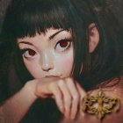

Zaproszenie jakie otrzymał było niezwykle gustownie przyozdobione, a litery nakreślone z wielką precyzją i swoistym wdziękiem. Nawet jeśli nadawca podpisał się jako mężczyzna to bez wątpienia osobą kreślącą litery była kobieta. I nie było w tym żadnego podstępu, żadnej gry. Wielu szlachetnie urodzonych wyręczało się w takich zadaniach służbą.
Niczym niezwykłym również nie było iż dostawał takie zaproszenia. Zaopatrywał w swoje produkty nie tylko biednych czy bogatych, ale również szlachetnie urodzonych. Oczywiście taka klientela wymagała polecenia kogoś z równie wysokich sfer co ich własne, jednak bez wątpienia wystarczył jeden zadowolony klient, jeden bankiet ju już jest się na językach, co bardziej niegrzecznej, arystokracji.
Tak to już było, że bogactwo zwykle szło za rękę z zepsuciem, dodatkowo gdy wydawało się komuś, że jest lepszym z powodu urodzenia było to jeszcze bardziej postępujące. Dlatego zaproszenia na orgie, hedonistyczne uczty, nagie bale nie dziwiły go, oczywiście w domyśle miał przygotować najprzedniejsze środki i przywieźć je ze sobą.
Tym razem jednak nie było to niczym z tych podobnych rzeczy. Harlan został zaproszony na spektakl. Tytuł sztuki niewiele mu mówił, podobnie jak obsada.
Sam lubował się w uczcie nie tylko dla ciała, ale i ducha, lecz ostatnimi czasy nie był w nastroju. Zniknięcie Uny, nieco go przybiło. Nawet jeśli była tylko jego nałożnicą, to i tak sądził, że po uratowaniu dzieci i zadbaniu o sierociniec będzie bardziej wdzięczna. Cóż okazało się inaczej. Nadal jednak dbał o dobro dzieci, które otoczył swoistą niewidzialną opieką.
Pewnie gdyby ona jeszcze z nim był z radością przywitałaby pomysł na wspólne wyjście. Wydawała się być jedną z tych, których fascynował taki rodzaj sztuki. Mimowolnie więc uśmiechnął się do siebie i ruszył do pokoju by się przebrać w coś bardziej odpowiedniego na wieczorny spektakl.
Miejsce jakie mu przypisano znajdowało się zaraz przy scenie, na niewielkim podwyższeniu przeznaczonym dla "lepszych" widzów, by mogli niemal zajrzeć na scenę i czuć się jak część przedstawienia.
Aksamitny frak w kolorze ciemnego brązu oraz biała koszula sprawiały, że mógł uchodzić za jednego z szlachetnie urodzonych. Oczywisty brak dziesiątek ozdób z herbem rodowym dawał jednak wprawnemu oku szansę przejrzenia tej "maskarady".
Siedział więc w skupieniu i czekał aż kurtyna się podniesie, a przedstawienie się zacznie.
Marika - 2018-10-14 02:18:22

Dla niej występowanie dla wyższych sfer zawsze było niesamowitym i emocjonującym przeżyciem. Wszak byli to, według niej, ludzie, którzy znali się na sztuce i byli wielce obyci z kulturą. Co innego dostawać oklaski na ulicznych przedstawieniach od ludzi, dla których takie wydarzenie było małą odskocznią od codziennych problemów, a co innego zasłużyć sobie na aprobatę ludzi doceniających kunszt gry aktorskiej i samego wykonania danego spektaklu. A i sztuki w tym momencie znacząco się od siebie różniły. Dla pospólstwa były to zazwyczaj wesołe historyjki okraszone cyrkowymi występami, zaś dla tej bardziej wymagającej publiczności wystawiało się bardziej wymagającą sztukę. W tym akurat przypadku była to historia o nieszczęśliwej miłości. Córki i ojca, którzy nie wiedząc o łączących ich więzach krwi stają się kochankami. Po dowiedzeniu się prawdy czekały ich przeróżne trudności, targały obydwojgiem wątpliwości. I to właśnie jej przypadła główna rola.
Wzięła głęboki wdech, poprawiając na sobie długą suknię. Kilka razy policzyła do trzech, chcąc wyzbyć się tremy, która niemal zżerała ją od środka. Jednak, gdy tylko wejdzie na scenę, to cały stres uleci z niej po wczuciu się w swoją rolę. Zawsze tak było.
Sztuka była czymś, co dziewczyna nade wszystko kochała z całego serca. I może właśnie dzięki tej miłości nie działo się nic złego. Pech, który zwykle przynosiła innym zdawał się nie mieć prawa głosu, kiedy wchodziła na scenę.
Zaczęło się. Kurtyna podniosła się, przedstawienie się zaczęło!
Wprawne oko mogło zauważyć w dziewczynie wielce utalentowaną aktoreczkę. Jej gra była naturalna, w dodatku była pełną wdzięku młodą damą. Ciemne włosy spływały po jej ramionach, sięgając aż do pasa, świetnie współgrając z jasną, porcelanową cerą. A oczy! Oczy były z niej całej chyba najciekawsze. Tutaj wszyscy się nimi zachwycali, nazywali je dwoma rubinami. Jednak tam skąd pochodziła oznaczały tylko jedno - dziecię nieszczęścia. Córkę złego omenu.
Przedstawienie trwało dość długo. Każdy z aktorów był świetnym w tym, co robił. Nic więc dziwnego, gdy po ukłonach cała sala zawrzała od oklasków. Marika czuła jak na jej blade dotychczas policzki wpływa szkarłat rumieńców. Ukłoniła się znów, a jej spojrzenie na chwilę zawiesiło się na mężczyźnie, zajmującym jedno z miejsc w "najlepszym" rzędzie. Już wcześniej zerkała na niego podczas przedstawienia. Teraz zaś mogła przez chwilę przyglądnąć mu się dłużej. Ciekawiło ją ogromnie czy obecny będzie na bankiecie, który miał odbyć się zaraz po przedstawieniu. Przygryzła delikatnie wargę, uśmiechając się przy tym, kłaniając się po raz ostatni, by po chwili zejść ze sceny. Musiała się przebrać. Karminowa suknia już czekała na nią w garderobie. Do tego czarne, koronkowe rękawiczki i czarna aksamitka z czerwonym kamieniem. Gdyby nie to, że jej trupa występowała także dla bogatych, to pewnie nigdy nie miałaby takiej kreacji.
Harlan Purian - 2018-10-14 02:32:59
Dziewczyna przykuła uwagę niemal wszystkich. Była rzeczywiście niezwykła, zjawiskowa, uzdolniona. Oczy tylko dodawały jej dodatkowego uroku. Kilka razy ich spojrzenia się spotkały, jako że mniej więcej od połowy przedstawienia skupiał się tylko na niej. Przebłyskami chwili czuł się tak jakby słowa wypowiadane do jej scenicznego ojca przemawiały do niego. W sumie był nawet nieco starszy niż aktor grający role starszego mężczyzny, więc takie odczucie było łatwe do uzyskania. I może właśnie dlatego cały spektakl dla niego był zupełnie inny, niż dla pozostałych.
Oczywiście pewnie wielu z mężczyzn utożsamiałoby się z ojcem, zwłaszcza w obliczu tak pięknej córki, to jednak większość widzów starało się zachować pozory przed siedzącymi wokół nich kobietami, jakoby tylko kwestie estetyczne ich interesują.
Nie miał zamiaru udawać się na bankiet, na który również został zaproszony, ale po tym przedstawieniu musiał poznać dziewczynę, która w tak niezwykły sposób wzbudziła w nim niezwykłe emocje. Być może przemawiała przez niego swoista tęsknota za poprzednią kochanką, to jednak to w jaki sposób dziewczyna grała było istnym pokazem sztuki. Był zaintrygowany i ciekawy jaka jest w realnym życiu, gdy już ściąga maskę narzuconą przez reżysera.
Dlatego jako jeden z pierwszych znalazł się w sali bankietowej, by móc zająć miejsce, z którego mógł obserwować całe pomieszczenie. Wiedział, że dzięki temu będzie jednocześnie obserwować dynamikę wśród wszystkich zebranych jak i sam być na oczach wszystkich. Chciał zostać zauważony zwłaszcza przez jedną osobę...
Marika - 2018-10-14 02:57:54
Wyszła z garderoby uśmiechając się od ucha do ucha. Na ten moment czuła ogromną dumę z sukcesu spektaklu. Kto wie czy nie większą, niż sam jego reżyser. Poprawiwszy grzywkę spojrzała na zmierzającemu ku niej koledze, który wraz z nią był dzisiaj najjaśniej świecącą gwiazdą. Dama, bo tak go wszyscy nazywali ze względu na bardzo specyficzny sposób bycia, położył dłonie na jej policzkach, szczerząc przy tym zęby w perlistym uśmiechu.
- Poszło ci wręcz fantastycznie, Bambina!
Zawołał urzeczony, zaraz obdarowując ją całusem w sam środek czoła. Czerwonooka zaśmiała się cichutko, zerkając na przyjaciela roziskrzonym spojrzeniem.
- Tobie przecież też wyszło wspaniale.
Mężczyzna zaśmiał się i poklepał ją po ramieniu, wyraźnie rozweselony. Ale Dama taki był. Taki po prostu wesoły bez względu na sytuację.
- Oj moja droga. Pewnie będzie się za tobą teraz oglądać cała sala! Ciekawe... może jakiś baron weźmie pod opiekę naszą małą Bambinę? Albo chociaż do łóżka, co?
- Tobie też by się jakiś przydał. Chuć cię chyba zaraz rozsadzi, Dama.
Parsknęła i pokręciła głową z pobłażliwym uśmiechem, jakby dawała reprymendę wyjątkowo niegrzecznemu dzieciakowi. A ten jak zwykle swoje. Jakby bał się, że przez jej notoryczny brak zainteresowania zarówno mężczyznami jak i kobietami teraz, w przyszłości zostanie starą panną i to bez sponsora. Według niej przesadzał. W końcu miała dopiero osiemnaście lat. Blondyn wziął ją pod rękę, szturchając przy tym łokciem w bok.
- Cicho, bo się jeszcze wyda.
Pokazał jej język, na co ona odpowiedziała tym samym. Razem weszli na salę, rozprawiając o czymś zawzięcie. Rozdzielili się jednak prędko, a dziewczyna zauważyła tegoż właśnie mężczyznę, z którym tak wymieniała spojrzenia. Podeszła do niego, już z daleka posyłając mu ciepły uśmiech. Schowała dłonie za plecy. Coś w niej takiego było, jakby gdzieś za dworską etykietą chowała się pewnego rodzaju frywolność.
- Podobało się Panu?
Harlan Purian - 2018-10-14 03:10:32
Zakładał, że gdy tylko gwiazdy wieczoru się pojawią zostaną niemal osaczeni przez wszystkich zainteresowanych, których było nad wyraz sporo. Oczywiście ich wejście zostało zauważone przez wszystkich, jednak fakt iż sami sobie wybrali osoby do rozmowy ostudził zapał chętnych, którzy teraz stali i czekali aż to na nich spadnie ten zaszczyt.
Mężczyzna przebiegł wzrokiem po jej osobie, nowa kreacja podobała mu się jeszcze bardziej niż ta ze sceny. Od kelnera odebrał dwa kieliszki wypełnione słodkim, białym winem i podał dziewczynie.
- Zdecydowanie. Wszakże gdybym nie był oczarowany to bym się tutaj nie pojawił. -
Rzekł ciepłym, miękkim, na swój sposób troskliwym głosem. Dało się w nim słyszeć jednak nieco stanowczości. Idealny głos ojca, którego nawet jej sceniczny partner nie był w stanie oddać w ten sposób. Bez wątpienia mężczyzna miał już okazję poznać smak rodzicielstwa.
I on nie zachowywał się jak typowy szlachcic, żadnych wymian grzeczności typowych dla osób z wyższego staniu, jednak jeden rzut jej wprawnego oka mógł ocenić, że jego strój mimo braku ozdób był niezwykle drogi. Jakość materiału, wykończenia, szwy, to wszystko było najwyższej klasy i świadczyło o niemałym majątku mężczyzny.
- Choć wątpię bym zasługiwał na całą uwagę najważniejszej osoby na sali. Czym zasłużyłem sobie na ten zaszczyt? -
Upił nieco trunku przyglądając się jej z uwagą.
Marika - 2018-10-14 11:44:55
Dziewczyna odebrawszy od niego kieliszek, upiła łyk i zaraz potem uśmiechnęła się szeroko i wdzięcznie. Cała jej osoba jawiła się na pierwszy rzut oka jako wesolutka, młoda dama, której usta nigdy nie bolały od uśmiechu. Jej drobność i delikatne rysy dodawały jej uroku, przez co wyglądałana nieco młodszą. Nawet nie próbowała ukrywać ciekawskiego spojrzenia, którym go obarczyła. Mężczyzna w jej odczuciu wydawał się bardzo nietypową osobistością. Jakby nie pasował w pewien sposób do całego otoczenia. Może to właśnie brak własnego herbu? Z tego co wiedziała, to arystokracja nie lubiła otaczać się nic nieznaczącymi ludźmi, toteż doszła do wniosku, że on musi być mimo wszystko kimś ważnym.
- W takim razie cieszę się, że udało nam się sprawić, że jednak się Pan tutaj zjawił.
Pokiwała głową delikatnie. Zaraz też zerknęła kątem oka na stojącego niedaleko Damy, który rozmawiał z jakimś szlachetnie urodzonym młodzieńcem, rumianym po czubek głowy. Oho, pewnie jej przyjaciel nie będzie się dzisiaj ani trochę nudził. Jej spojrzenie wróciło do jej rozmówcy. Chwilę zastanawiała się nad odpowiedzią, by w końcu podać ją nieco ściszonym głosem.
- Och, to całkiem proste. Mam niezwykłą słabość do osób, które się wyróżniają. A Pan zdaje się właśnie taki być. Czymś się Pan właściwie zajmuje?
Spytała zaciekawiona i upiła kolejny łyk tego wspaniałego trunku. Alkohol rozlewał się po jej gardle i języku, który po kolejnych jego dawkach rozwiąże się jeszcze bardziej. To była jedna z jej wad. Za dużo alkoholu i nawet nie zastanawiała się, co mówi. To naszczęście był tylko jeden kieliszek, który w najgorszym razie poskutkuje jej niepohamowaną wesołością.
Harlan Purian - 2018-10-14 14:02:23
Jej wesołe usposobienie było zaraźliwe, więc i on zaraz się uśmiechnął.
Wiedział, że dla wielu był ikoną ciekawą. Nie raz miał okazję czuć się jak jakiś eksponat, wystawiony ku uciesze szlachetnie urodzonych. Gdy doda się do tego jego zajęcie i związane z tym przygody to zaraz stawał się główną atrakcją wieczoru, szczególnie dla młodych dam, które wychowane pod kloszem mogły jedynie marzyć o podróżach, przygodach i silnych męskich ramionach, które nie boją się konsekwencji ani konwenansów.
- Nie da się ukryć, że przedstawienie było dość niezwykłe, pewnie wiele starszych dewotek uznałoby je za niemal skandaliczne. Ojciec i córka razem? Fakt słyszy się wiele o dość zamkniętych rodach, które nie pozwalają na mieszanie się ich własnej krwi z innymi, to jednak mimo wszystko jest to temat tabu. I trzeba nie małej odwagi by coś takiego wystawić, czy by zagrać jedną z głównych ról.
Uniósł kieliszek w geście toastu właśnie za jej odwagę. Patrzył z uśmiechem jak jej usta dotykają brzegu kryształu i jak upija kolejne porcje alkoholu. Nie mógł sobie nie pozwolić na kilka dość niegrzecznych myśli z udziałem jej ust. Szybko odgonił jednak te obrazy, by nie dać po sobie poznać czegokolwiek.
- Niestety nie jestem szlachcicem. Nawet jeśli ubiór próbuje jednego udawać. Jestem kupcem, zajmuję się głównie dziełami sztuki, choć jak to kupiec nie odpuszczę żadnej okazji. Egzotyczne zwierzęta, przyprawy, materiały, jeśli wiem, że na czymś mogę zarobić to nie waham się. -
Powiedział w połowie zgodnie z prawdą. Oficjalnie był kupcem, oficjalnie zajmował się dziełami sztuki. Miało to swój spory powód. Sztuka nie miała jednej ceny. Za bohomaz czy dziecięcą figurkę z gliny ktoś mógł dać fortunę jak i złamanego miedziaka. Ten rozstrzał cenowy nikogo nie dziwił, wszakże to kwestia gustu, a jemu dawał idealną przykrywkę skąd w jego kiesie tyle złota. No i stanowiło to niezwykły dodatek dla jego większych nabywców. Ot prezent za dobrą transakcję i wytłumaczenie dla małżonka czemu nagle zniknęła spora część złota ze skarbca.
- Oczywiście nie jest to tak fascynujące jak możliwość bycia co nocy kimś innym, kimś nowym, choć ma swoje momenty.
Marika - 2018-10-14 16:22:22
I tu ich odczucia zdecydowanie się zgadzały. Dziewczyna też nie raz czuła się jak eksponat, nie tylko przez wzgląd na jej zawód, ale i urodę. Ale czy jej to przeszkadzało? Ani trochę! W końcu, gdyby nie to, że uwielbiała być w centrum uwagi, to pewnie nie zostałaby aktorką. Pod tym względem różniła się od poprzedniej kochanki Harlana. Una wolała trzymać się w cieniu, pozostać niezauważoną, zawsze nienaturalnie czuła się w drogich strojach. Zaś w przypadku czerwonookiej, zdawać by się mogło, że w takim towarzystwie czuje się jak ryba w wodzie. Nie była to do końca prawda. Po prostu potrafiła prędko przystosować się do środowiska. I właśnie na tym polegał kunszt aktorski, którym obdarowana była i ona i cała ta niezwykła trupa.
- Jeżeli mam być szczera, to od początku chcieliśmy szokować. Nasz reżyser jest osobą o kontrowersyjnych poglądach, które i my mamy. Dlatego tak dobrze nam się razem pracuje. Co jednak nie zmienia faktu, że gdybyśmy dali takie przedstawienie na ulicy, to ci bardziej bogobojni zaczęli by w nas rzucać pochodniami.
Wzruszyła delikatnie ramionami, widocznie rozbawiona. Dla niej wystawienie sztuki takiej jak ta, było czymś zupełnie normalnym. Poza tym zagranie głównej roli było dla niej nie lada wyzwaniem. Trudno było zagrać kochankę ojca komuś, kto nigdy nie miał własnego. Nieco się skrzywiła na tę myśl. Nie powinna w tej chwili rozwodzić się nad swoją przeszłością. Nic nie powinno zepsuć jej tego wieczoru.
- To by wyjaśniało brak jakiegokolwiek herbu na pańskim ubraniu.
Odparła dopijając wino do końca. Zaraz ożywiona zaczęła wypytywać się o sztukę, którą handlował.
- Mówi Pan, że sprzedaje dzieła sztuki? To musi być bardzo przyjemne otaczać się nimi na co dzień. Chyba Pan handlowałby wszystkim, czyż nie?
Uniosła delikatnie kąciki ust do góry. Domyślała się, że w zakresie jego kupieckich kompetencji jest także handel niewolnikami. Nawinęła kosmyk włosów na palec, chwilę skupiając na nim wzrok, jakby się nad czymś zastanawiała. Po chwili podniosła na niego wzrok.
- Możliwość bycia kimś innym? Myślę, że każdy przybiera różne maski w zależności od otoczenia.
Harlan Purian - 2018-10-14 16:40:11
- Rozumiem. -
Pokiwał głową dlaczego właśnie taka tematyka została wybrana. W sumie dla takiego środowiska mogło to być dość ciekawe. Szlachta lubowała się w zakazanych zabawach, tematach tabu, więc taki kazirodczy spektakl na pewno długo będzie przez nich pamiętany, a główna aktorka rozpoznawalna. Nie tylko z powodu swojej urody i dwóch nietypowych rubinów, którymi pewnie mogła oczarować niejednego.
- Cóż teraz herb nieszlachecki można kupić za bezcen, a jeszcze łatwiej zarejestrować. Sam posiadam herb, ale bardziej jest to stempel mojej własności, oznaczenie towaru czy pieczęci przy wiadomościach aniżeli coś z czym wiąże się wielka historia. -
Uniósł dłoń i ukazał jej sygnet znajdujący się na małym palcu. Na tarczy znajdował się misternie wyrzeźbiony kielich otoczony winną latoroślą. Odwrócony grawerunek sprawiał, że mógł używać go do pieczętowania w wosku, o czym zresztą świadczyły resztki czerwonej substancji w bardziej niedostępnych zakamarkach.
- Przyjemne i ryzykowne. Może się okazać, że sprowadzę jakiś malunek z drugiego końca królestwa, by usłyszeć, że jednak nie pasuje do zasłonek. Niestety trzeba uważać. Dlatego wolę otoczyć opieka jakiegoś malarza, by w razie potrzeby wykonał obraz zgodny z zamówieniem klienta. Wtedy mamy pewność, że wszystko jest takie jak sobie każdy wyobraził. O ile nie mówimy tutaj o sztuce wywodzącej się z jakiegoś szczególnego regionu. Wojna z Reptalią spowodowała, że wiele szlachetnych głów zwróciło się w tamtym kierunku i wszystko z tamtych stron cieszy się niemałym zainteresowaniem. Czy wszystkim... sam nie wiem. Są pewne granice. -
W jego przypadku jednak były to granice nie jego fachu czy nawet smaku, a wynikające z umów jakie zawarł z kilkoma osobami. W efekcie nikt nie wchodził sobie w drogę, a w razie potrzeby wiedział do kogo się zwrócić.
Na słowa o maskach uśmiechnął się szerzej i pochylił.
- Więc jaką maskę teraz my przywdzieliśmy?
Marika - 2018-10-15 00:05:22
Dziewczyna ujęła dłoń mężczyzny, przyglądając się sygnetowi z bliska. Spodobał się, zaczęła się też zastanawiać jaka była symbolika takiego, a nie innego znaku. Dotyk jej dłoni był delikatny i mógł poczuć, że mimo bycia w trasie od czasu do czasu, to starała się dbać o siebie, bo w końcu gdyby tego nie robiła, to nikt nie zwracałby na nią najmniejszej uwagi. I nawet osobliwy kolor jej oczu niewiele by w tej stytuacji zmienił.
- Chciałabym poznać takiego artystę. Ludzie takiego pokroju bywają zwykle bardzo interesujący i niecodzienni. Poza tym, to pewnie bardzo przyjemne mieć swojego opiekuna, który zajmowałby się załatwianiem kolejnych zleceń.
Westchnęła cichutko, spuszczając na chwilę wzrok. Właściwie już od jakiegoś czasu aktoreczka zastanawiała się, jak by to było mieć kogoś, kto za talent dawałby pieniądze i rozpieszczał ot tak sobie. Może Dama miał rację. Może powinna znaleźć kogoś takiego? Poza tym uwielbiała śliczne stroje i każda możliwość zdobycia kolejnej sukni jawiła jej się jako ogromne szczęście. Jak jednak można mieć szczęście przynosząc innym pecha? Zasępiła się nieco na tę myśl, ale nie zauważyła jak na jednego z arystokratów wylało się wino.
- My teraz... Przyjmujemy maski ludzi, którzy pasują do tego towarzystwa. A wcale tak nie jest. Staramy się jednak wypaść w oczach innych jak najlepiej. Żeby nie stracić swoich pozycji. Pan uznawanego kupca, którego szanuje większość sali, a ja utalentowanej aktorki ze świetlaną przyszłością. Czyż nie jest tak? Zaraz po powrocie do swoich czterech kątów zdejmiemy je, by móc choć przez chwilę pobyć sobą, choćby w samotności.
Odparła z uśmiechem, w którym kryła się melancholia. Zaczesała kosmyk włosów za ucho, rzucając mu przeciągłe spojrzenie spod długi rzęs, rzucających delikatne cienie na jsj policzki.
- Czy jest choć jedna osoba, która zna Pana prawdziwego? Pozbawionego wszystkich masek?
Harlan Purian - 2018-10-15 00:33:24
Jego dłonie były znacznie większe od jej, spracowane noszące ślady wielu drobnych blizn od trudu życia. Nawet teraz gdy już zajmował się znacznie spokojniejszymi zajęciami, zdarzało się, że jakaś ampułka pękła kalecząc jego dłoń. Czasem miał szczęście i trafiała na zgrubiałą skórę od ciągłej walki, którą ciężko było się czy to pozbyć czy przebić.
Pozwolił jednak by jej delikatne rączki dotykały jego skóry racząc się nikłym ciepłem przebijającym się przez "dziurawy" materiał rękawiczek.
Na wspomnienie malarza roześmiał się.
- Och to nie jest tak, że wynajduję mu zlecenia, raczej korzystam z jego umiejętności w razie potrzeby. Przez większą część czasu robi co mu się żywnie podoba, malując i rzeźbiąc rzeczy, które rodzą się w jego skołatanym umyśle. Oczywiście dbam, by miał w czym i czym pracować, by nie umarł z głodu, ani by nie latał nagi po mieście w poszukiwaniu inspiracji. Jest jednak bardziej niesfornym synem aniżeli pracownikiem. -
Przyglądał się jej z uwagą gdy opuściła wzrok. Domyślił się iż jak każdy artysta i ona chciała być doceniona nie tylko miłymi słowami, ale i gestami większymi niż bukiet kwiatów po przedstawieniu. Nie wiedział jak wygląda to w ich trupie, w końcu wystawiali przedstawienia dla możnych, to zwykle osoby tego pokoju nie mogą cieszyć się sporymi zarobkami. Mieli takie bogate życie i dusze, a zwykle nie mogli sobie pozwolić na nic wyjątkowego. Co gorsza w jej fachu wątpliwe było wykorzystanie jej umiejętności. Malarze i rzeźbiarze mogą stworzyć podobiznę dobrodzieja, muzycy stworzyć ku jego czci jakiś utwór, a co mógł zrobić aktor? Być ozdobą, ciekawostką, wypełnieniem czasu. Oczywiście Harlan widział w tym ogromny potencjał, w końcu taki aktor mógłby być świetnym szpiegiem, zbierającym informacje, albo kochankiem, który co nocy daje szansę zaznania coraz to nowszych masek. Los może i smutny, ale i tak pewnie lepszy niż ma większość żyjących w stolicy.
Na wylanie wina poświęcił tylko chwilę swojej uwagi, bo zaraz ta zaczęła odpowiadać na jego pytanie. Gdy skończyła sam zamyślił się na dłuższą chwilę, szukając odpowiednich słów. Na jego ustach zagościł szybko uśmiech.
- Oh skąd przypuszczenie, że udaję uznanego kupca? Że jest to maska? W końcu mogę nim być i niczego nie ukrywać. Choć muszę przyznać. -
Tutaj lekko się nachylił do jej osoby, tak by nikt niepowołany nie mógł dosłyszeć jego słów.
- Nie przepadam za szlachtą. Nie lubię tego oceniania innych przez pryzmat narodzin. W końcu co kto komu zawinił, że się urodził w takim czy innym miejscu z takiego czy innego łona? To kim jesteśmy determinuje naszą wartość, a nie z jakiego ojca czy matki. Lecz w reszcie... -
Wyprostował się powoli ciągle wpatrując się w jej szkarłatne oczy.
- ...nie mam powodu by musieć przywdziewać jakąkolwiek maskę.
Mimo iż był kupcem tylko w połowie, to jednak nigdy nie starał się żyć tak, by musieć robić coś wbrew sobie. Oczywiście skłamałby w kwestii swojego fachu, swoich powiązań i tego co mógłby jej zrobić, to jednak autentycznie cieszył się ze swojego życia, podobnie jak z tej rozmowy.
- A jacy jesteśmy chyba nie wie nikt. -
Uśmiechnął się tajemniczo i dokończył swoje wino.
Marika - 2018-10-15 16:16:53
- To jeszcze lepiej. Chciałabym, żeby ktoś zechciał taką niefrasobliwą córkę jak ja.
Westchnęła głęboko, w duchu bardzo zazdroszcząc malarzowi, który znajdował się pod opieką mężczyzny. To było takie dziwne. Rozmawiali już od jakiegoś czasu, a ona nawet nie znała jego nazwiska. On mógł się prosto domyślić. W obsadzie przedstawienia była wymieniona jako odtwórczyni głównej roli.
Nigdy nie zastanawiała się do czego jej talenty mogą się jeszcze przydać, choć często nawet nieświadomie wykorzystywała je, żeby najeść się za darmo albo zdobyć kolejny drogi fant, za który nie dawała złamanego grosza. Udawało jej się nawet nie kupczyć przy okazji ciałem.
Słuchała z uwagą jego słów, nie odrywając od niego wzroku ani na chwilę. Zmrużyła oczy i rozchyliła delikatnie wargi, kiedy nachylił się do niej. Uśmiechnęła się delikatnie, czując się po jego słowach jeszcze pewniej. Nagle jakby przestała się przejmować, że jest tylko aktorką nieznanego pochodzenia. Z matki, która zaraz po jej porodzie popadła w szaleństwo, a nią zajmowały się sąsiadki. I w końcu sześć lat temu spakowała niewielki tobołek i wyjechała z wędrowną trupą cyrkowców. Dużo się działo, nim w końcu trafiła do Ołowianych Kwiatów.
- Lecz mimo wszystko mam wrażenie, że nie mówi mi Pan do końca wszystkiego.
Odparła, otwierając znów usta, by jeszcze coś powiedzieć. Nagle jednak poczuła czyjąś dłoń na ramieniu. Zdziwiona odwróciła blade lico w kierunku pucułowatego szlachcica, który uśmiechał się szeroko, gładząc wąsa.
- Zabierze nam ją Pan całkiem, jak pragnę zdrowia!
Roześmiał się, opierając wolną dłoń na brzuchu. Dziewczynie skojarzył się z żabą we fraku z opowieści dla dzieci. Uśmiechnęła się na tę myśl, rzucając swojemu rozmówcy przepraszające spojrzenie. Jakby to była jej wina, że ktoś im przerwał konwersację.
- Stoicie tutaj i rozmawiacie, a zabawa trwa! Jeszcze trochę i przestoicie tak cały wieczór.
Powiedział szlachcic, a Marika skrzywiła się delikatnie czując mocniejszy nacisk na jej chude ramię. Dopiero teraz zauważyła, że na środku sali niektóre pary tańczyły do muzyki. Zapatrzyła się na to roziskrzonym spojrzeniem. Rzadko miała okazję zobaczyć tak elegancki taniec. To było zupełnie coś innego niż chaotyczne podskoki do ogniskowych przyśpiewek.
Harlan Purian - 2018-10-15 16:52:17
Mężczyzna spojrzał na nią i dostrzegł tą swoistą samotność w jej oczach. Znał ją. Widywał ją codziennie przez pierwsze dwa lata gdy odkrył, że jego świat legł w gruzach, że jego żona nie żyje, a córki zniknęły. Ciężko mu było znaleźć swoje miejsce na świecie, nawet gdy był otoczony wieloma osobami. W końcu udało mu się znaleźć dom, substytut rodziny, wszystko to co było niezbędne do zachowania zdrowego rozsądku i powrócenie do życia.
- Oh nie byłbym tak interesujący gdybym powiedział wszystko od razu. -
Uśmiechnął się do niej, by zaraz jego twarz przyjęła nieco obojętny wyraz. Nie z jej powodu, ale z powodu szlachcica. Przyglądał się mu z najwyższą uwagą. Kolejny z tych, którym wydawało się, że mogą wszystko z racji urodzenia. Całe szczęście w większości przypadków nie urodzenie, a gruba kiesa dawały przewagę.
Harlan ponownie się uśmiechnął.
- Ma pan absolutną rację! -
Rzekł wyraźnie rozbawiony tą sytuacją.
- W końcu chodzi o dobrą zabawę.
Ujął w nadgarstku rękę mężczyzny i jednym ruchem nacisnął na nerw znajdujący się u podstawy nadgarstka. Jedna z technik, której nauczył się podczas bycia najemnikiem, idealne do wyswobodzenia siebie, lub jak w tym przypadku jej.
Delikatnie wziął ją za rękę.
- Pani pozwoli. -
I nim ta zdążyła cokolwiek powiedzieć pociągnął ją na środek sali, by zaraz postawić ją w wirującym obrocie przed sobą.
- W końcu mamy się bawić. -
Uśmiechnął się do niej ciepło, by zaraz położyć dłoń na jej biodrze, drugą ręką zacząć ją prowadzić w rytm muzyki. Wiedział, że wzbudzi to niepotrzebne zainteresowanie szlachcica, który pewnie nie raz jeszcze będzie chciał położyć na niej swoje łapska. Tak przynajmniej kupił im nieco czasu sam na sam.
- Miałem kiedyś córki. -
Zaczął spokojnie nie przerywając tego scenicznego uśmiechu, który zawsze towarzyszył wszystkim podczas tańca.
- Jednak los nas rozdzielił, do pewnego czasu szukałem je, lecz poddałem się uznając, że gdyby chciały same mnie znalazły. Więc jestem kupcem bez rodziny, bliskich, więc nie mam komu pokazywać swojej prawdziwej twarzy. -
Odpowiedział na jej pytanie o tym, że nie mówił jej wszystkiego do końca. Nikomu nie mówił.
Marika - 2018-10-15 17:36:47
Uwolniona od uścisku szlachcica, uniosła zdziwiona brwi. Nie sądziła, że kupiec uratuje ją z opresji i nawet była pogodzona z tym, że będzie musiała zostać partnerką do tańca wąsatego. Uśmiechnęła się więc do niego szczerze, tuptając za nim na czarnych bucikach z czerwonymi różami, które miały delikatny obcasik i bardzo pasowały do reszty jej stroju. Zaraz jej uśmiech stał się jednak równie sceniczny, co i jego. Oparła drobną dłoń przywdzianą w koronkę na jego ramieniu, zerkając znad jego ramienia na zdziwionego szlachcica, który chyba nadal nie zrozumiał, że wyrwała mu się z rąk. A właściwie to kupiec ją wyrwał.
- W końcu po to tutaj przyszliśmy.
Rzuciła wesołym tonem, pozwalając mu poprowadzić się do tańca. Jej kroki i ruchy były pełne wrodzonej gracji, której z pewnością brakowało wielu wysoko urodzonym młodym damom. Nieskromnie uważała, że tańczyła znacznie lepiej niż niejedna taka szlachcianka z bożej łaski. I pomimo braku wychowania wyższych sfer, to aktoreczka potrafiła idealnie odwzorować dworskie zachowanie, z wszystkimi jego tajemniczymi gestami, spojrzeniami. To wszystko dzięki Damie, który niegdyś był synem jakiegoś tam barona. Nie lubił o tym opowiadać, ale dziewczyna domyśliła się, że został wydziedziczony przez swoje ciągotki do mężczyzn.
Patrząc w oczy mężczyzny i ani raz na swoje stopy, kręciła się z nim w tańcu po sali. Słuchała go przy tym, mając nadzieję, że nikt niepowołany nie przerwie im znowu rozmowy. Och... Potrafiła zrozumieć go i to doskonale. Ona też całe życie kogoś szukała, by po osiemnastu latach niepowodzeń poddać się.
- Mówiąc szczerze, to potrafię utożsamić się z Pana stratą. Mojego ojca nie było od kiedy pamiętam. Nawet nie wiem kim był i jak wyglądał. Matka niewiele mówiła na jego temat, a i sąsiadki nic nie wiedziały. Szukałam go, bo miałam nadzieję, że nie umarł. Sądziłam, że jeśli on wróci, to wróci też matki rozum. Ale nie miałam żadnych poszlak, ale nie poddawałam się jednak. Ciągle mam nadzieję, że kiedyś się odnajdziemy.
Na chwilę zamilkła, chwilę zastanawiając się czy kontynuować swój wywód. Doszła w końcu do wniosku, że nie ma nic do stracenia. Zdecydowanie paplała za dużo. Skarciła się za to w myślach, ale pomyślała, że skoro on jest z nią szery, to ona chyba też powinna być. A nie wyglądał na osobę, która wykorzystałaby takiej informacje przeciw niej, by rozsiewać plotki. Nie był szlachcicem i w dodatku ich nie lubił, więc nie mógł być tacy jak oni.
- Wie Pan... Kiedy przyjechałam rok temu do tego miasta, to poznałam taką wróżkę. Powiedziała mi "Znajdziesz go tutaj, choć jeszcze nie teraz". A dziś znowu tutaj jestem. Ciekawe czy to się spełni.
Roześmiała się, choć sama zdawała się nie wierzyć w to co mówi. Nie możliwym było, żeby udało jej się odnaleźć osobę, o której tak na dobrą sprawę nic nie wiedziała. Westchnęła cichutko, na chwilę odwracając wzrok. Zaraz jednak wróciła spojrzeniem do jego twarzy, rozświetlając swoją własną szerokim, szczerym uśmiechem.
Harlan Purian - 2018-10-15 17:53:29
I jemu nie brakowało umiejętności w tańcu. Poświecił długie godziny by nauczyć się wszystkiego co było mu niezbędne w jego nowym życiu. W życiu, w którym problemów nie załatwia się przepołowieniem mieczem, a słowami, gestami i zachowaniem. Czasem trucizną. Dlatego nie było niczym niezwykłym, że wiedział jakie kroki wykonywać, nie przydeptując dziewczyny i by całość była tak taneczna jak być powinna. W końcu był to taniec.
Gdy zaczął żyć swoim nowym życiem odkrył jak wiele przyjemności przemykało mu sprzed nosa, choćby właśnie taniec. Ze swoją małżonką nigdy nie tańczył w ten sposób. A zapewne nie raz i nie dwa sprawiłoby to obojgu ogrom radości.
- Niestety takie coś nie jest niczym niezwykłym. Widziałem wielu mężczyzn, którzy podczas kampanii zabawiali się z kobietami i je zostawiali. Mogę uwierzyć, że mogło się to skończyć dzieckiem. Albo możnych, którzy w przypływie namiętności brzuchacą wiejską dziewkę i by nie mieć później problemów porzucają... Kto wie... -
Rozejrzał się po sali wzrokiem obiegając wszystkich starszych mężczyzn.
- Może któryś z tych możnych jest twym ojcem. Może właśnie z jego ramion cię wyrwałem. -
Pozwolił sobie na żart, by zaraz dodać już całkiem poważnie.
- A może wróżka wcale nie mówiła o tym, który przyczynił się do twoich narodzin, a kogoś kto roztoczy nad tobą opiekę i sprawi, że niczego ci nie zabraknie.
Zdanie, które nie było pytaniem... a mimo to dało się wyczuć propozycję? Ciężko to było ocenić z tonu jego głosu, ale jako kupiec niewątpliwie mógł próbować tylko wybadać jej zamiary, jej pragnienie.
Widział jak zareagowała na wieść iż już jest mecenasem, że kimś z jej fachu się opiekuje i, że nie jest to dla niego nic niezwykłego.
Marika - 2018-10-15 18:13:30
Tańczenie z mężczyzną sprawiło jej wiele przyjemności. Fakt, że równie dobrze tańczyli tylko w tym pomagał. Szlachcic, z którego łap ją wyrwał nie wydawał jej się dobrym tancerzem, a dziewczyna nie miała ochoty na siniaki w żadnym miejscu. Dlatego też jej uśmiech z wymuszonego i na pokaz, stawał się coraz szczerszy i szerszy. Zakręciła się w miejscu i zachichotała wesoło. Jej reakcje były szczere jak u dziecka. Na jego słowa zmarszczyła zadarty nosek.
- Cóż, myślałam nad tym. Ale nawet jeśli by tak było, to mimo wszystko chciałabym go poznać. Chyba nie miałabym mu za złe, że nie przejmował się moją matką.
Wzruszyła lekko ramionami, jakby było to coś najzupełniej w świecie normalne. Za dużo się naoglądała, żeby teraz nienawidzić kogoś, kto przyczynił się do jej poczęcia tylko dlatego, że chciał się raz zabawić z jej matką. Cóż, miała na tę sprawy bardzo dziwne zdanie. Z resztą im dłużej spędzi z nią czasu, tym bardziej zrozumie, że zamiast denerwować się o naprawdę ważne sprawy częściej obraża się o całkowite drobnostki. Może to dlatego, że jej piramida wartości była co najmniej dziwaczna. Zaśmiała się zaraz, słysząc jego kolejne słowa.
- Niech Pan nie żartuje. Mój ojciec na pewno jest przystojniejszy.
Zaraz jednak uniosła delikatnie brwi, przechylając głowę w bok. Próbowała przy tym uciszyć nieco nadzieję, która rosła w jej rozkołatanym serduszku.
- Może ma Pan rację. Ale chciałabym, żebym mogła toczyć z nim takie ciekawe rozmowy jak z Panem.
Szepnęła, zerkając na niego spod rzęs, dając znak, że właśnie jego najbardziej chciałaby widzieć w roli swojego opiekuna.
Harlan Purian - 2018-10-15 18:24:49
- Wszystko zależy w jakiej sytuacji byli. Może zwyczajnie nie miał pojęcia o twym istnieniu, więc i dlatego nawet nie próbował cię odnaleźć, tak jak ja moje córki. -
Uśmiechnął się do niej przyjemnie.
Sam wielokrotnie miał przyjemność korzystać z dobrodziejstw łatwowiernych, pijanych młodych dziewczyn, które w rosłym mężczyźnie, który spędził połowę swojego życia walcząc z potworami, zwiedzając świat, widziały idealny materiał na kochanka.
I wprawdzie zastanawiał się niejednokrotnie czy po świecie nie chodzi więcej jego potomków, to uznawał, że i tak nie ma co się tym przejmować. Wcześniej był na tyle narwanym osobnikiem, że pewnie nawet by się nie przejął, a teraz zmienił się tak bardzo, że szansa była żadna. W końcu kto w statecznym kupcu dostrzeże żądnego walki najemnika?
Jej słowa spowodowały tylko uśmiech na jego ustach.
- Harlan Purian. -
Rzekł ze spokojem.
- Odnajdź mnie i udowodnij mi, że warta jesteś zainteresowania. A sprawię, by niczego ci nie zabrakło.
I nagle muzyka ucichła, jakby ucięta nożem. A raczej tak się im wydawało gdy byli tak pochłonięci swoim własnym towarzystwem.
Mężczyzna pochylił się i ucałował wierzch jej dłoni skryty pod rękawiczką, by zaraz się wyprostować.
- Teraz pozwolę innym nacieszyć się twoją osobą, bo mam nadzieję, że już niedługo nie będę musiał czekać na spektakle i bale po nich, by móc raczyć się twym towarzystwem.
Po tych słowach wyprostował się i opuścił salę. Zostawiając ją może nie samą, ale na pewno już nie taką samą.
Marika - 2018-10-15 22:16:56
Mimowolnie przygryzając dolną wargę, wpatrywała się w niego z ekscytacją, jakby na chwilę zapominając o tym, że powinna cały czas mieć na sobie swoją maskę, a tą miną zdradza uczucie, które zaczęło wypełniać jej drobną osobę. Czy w końcu miała znaleźć kogoś, kto roztoczyłby nad nią opiekę? Jak substytut ojca?
Dygnęła delikatnie, unosząc rąbek długiej sukni. Harlan Purian. Musiała zapamiętać to imię, by go odnaleźć. A nade wszystko chciała to zrobić. Posłała mu zawadiacki uśmiech, który trwał króciutką chwilę, ale na pewno zdążył go zauważyć.
- Może być Pan pewien, że Pana znajdę i udowodnię swą wartość, Panie Purian.
Odparła, przyglądając mu się przez ten cały czas, kiedy całował jej dłoń, a potem kiedy odchodził. Stała i patrzyła za nim jeszcze przez chwilę, nim do tańca nie porwał jej inny mężczyzna. Chyba ten sam szlachcic, który wcześniej ich zaczepił. Coś mówił, ale Marika go nie słuchała. Jej myśli kłębiły się wokół jednego - odnaleźć Harlana. Wymyśliła sobie, że spyta rano ich gospodarza, gdzie można go znaleźć.
Przez resztę wieczoru była jakaś nieobecna. Do tego stopnia, że kompletnie straciła poczucie czasu. Było już bardzo późno i większość zaproszonych gości ulotniła się w między czasie, a dziewczyna była jedną z ostatnich, która opuściła salę balową. Szukała Damy, ale nigdzie nie mogła go znaleźć. Stwierdziła, że pewnie świetnie się bawił z nowym kochankiem. Przewróciła oczyma. On był jednak niemożliwy.
Stanęła przed swoim pokojem, w którym miała spędzić noc i sięgnęła do skrzętnie ukrytej w sukni kieszonki. Nie mogła jednak znaleźć klucza. Cholera... Musiała zostawić go w garderobie. Tak nie chciało jej się teraz tam wracać. Jeszcze by się pewnie zgubiła w tym ogromnym pałacu, bo na posiadłość to było jednak za duże. Zastukała więc do drzwi obok, mając nadzieję, że jej przyjaciel jest w pokoju. I tak był. Nawet jej otworzył, nagi jak święty turecki. Aktorka zasłoniła oczy i wyminęła go zgrabnie.
- Ubierz się, bo komuś oczy wydłubiesz.
Zaraz jednak zerknęła przez palce, rozglądając się po pokoju.
- Twojego kochasia nie ma?
- Ja też się cieszę, że cię widzę, Bambina. Nie ma. Zwinął się zaraz po sprawie, bo się bał, że rodzice bez niego pojadą do domu.
Dama wzruszył ramionami i podszedł do łóżka, czochrając po drodze głowę przyjaciółki. Ta pokazała mu język, siadając przy toaletce, żeby rozplątać włosy.
- Powiesz mi czemu zawdzięczam twoją wizytę? Umówiłaś się z kimś w swoim pokoju i teraz się ukrywasz?
Spytał jej w końcu, ubierając za ten czas spodnie i splatając włosy w kucyk.
- Nic z tych rzeczy. Zostawiłam klucz w garderobie. Nie chciało mi się wracać, więc stwierdziłam, że sobie pośpię u ciebie. Chyba nie masz mi tego za złe, prawda?
Posłała mu niewinny uśmiech. Dama patrzył na nią rozbawiony, by końcu podnieść się i podejść do niej. Przesunął dłonią po jej karku, by jej rozpuszczone włosy przeczesać palcami. Pochylił się, opierając podbródek na jej ramieniu.
- Ani trochę, tylko się nie wierć. Stało się coś ciekawego w ogóle na tym bankiecie? Widziałem jak rozmawiasz z tamtym... nie wiem jak się nazywa. Wiesz, całkiem na początku. Co ci powiedział, żeś jest taka rozanielona?
Dziewczyna złapała go za nos i lekko wytarmosiła.
- Po pierwsze, to on się nazywa Harlan Purian.
Sięgnęła do tyłu, usiłując rozplątać supły swojej sukni. Poddała się jednak, patrząc prosząco na Damę.
- Mógłbyś?
Ten tylko kiwnął głową, pomagając jej wyłuskać się z tego wdzianka.
- W każdym razie, to wyobraź sobie, że chciałby roztoczyć nade mną opiekę. Wiesz, jako nad artystką. Rany. Mam go jutro rano znaleźć, wprost nie mogę się doczekać!
Zaczęła mu jeszcze opowiadać, że poczuła, iż jest to człowiek, któremu może zaufać. W końcu legli razem do wielkiego łoża, a Marika nadal gadała i gadała. Zmęczonemu Damie oczy już się kleiły, ale nie potrafił zasnąć jak mu tak trajkotała koło ucha. W końcu pocałował ją mocno, by zamilkła i kazał iść spać, odwracając się do niej tyłem. Obrażona nastolatka prychnęła na niego i sama się odwróciła. Wiedział jednak, że jej dąsy przejdą razem z przyjściem śniadania.
Obudziło ją lądowanie sukienki na jej śpiącej głowie. Wysunęła się spod materiału i spojrzała rozespana na ubranego i gotowego do śniadania Damę.
- Otworzyłem twój pokój wytrychem i znalazłem coś ładnego. Ubieraj się i schodzimy.
- Stare przyzwyczajenia nie odpuszczają, co Dama?
Ubrała się więc, by zejść na śniadanie, mając nadzieję, że spotka szlachcica, u którego spędzili noc, aby dowiedzieć się gdzie może znaleźć Harlana. Ubrana była w jeden ze swoich ulubionych stroi. Mimo iż suknia była długa, to wycięta aż do bioder z jednej i z drugiej strony. U góry przypominała nieco koszulę z białym żabotem i ciemnofioletową kokardą, zaś rękawy były długie i lekko bufiaste. Oczywiście udało jej się uzyskać konkretne informacje i już dwie godziny później stała przed drzwiami do posiadłości Harlana, by zapukać w niej nieco spięta. A co jeśli nie uda jej się udowodnić swojej wartości?
Harlan Purian - 2018-10-15 22:37:43
Jego powrót był o wiele spokojniejszy. Bez zgubionych kluczy i spaniu w ramionach mężczyzny.
Jasen przygotował dla niego kolację oraz kąpiel, by móc zmyć z siebie cały dzień. Długo siedział w miedzianej wannie pozwalając jeszcze przez chwil kilka rozkoszować się jej zapachem, jaki został na jego dłoni, by w końcu zanurzyć się niemal cały.
Był ciekaw czy dziewczyna skorzysta z jego oferty i czy samo nazwisko wystarczy jej na odnalezienie go. Z drugiej strony wiedział, że teraz miała więcej niż w przypadku poszukiwań ojca, a i wtedy się nie poddała. Więc jeśli tylko się zdecyduje pewnie nie będzie potrzebowała wiele czasu na to.
Po opuszczeniu łaźni zatrzymał się jeszcze przy pokoju, który zajmowała Una. Uśmiechnął się do siebie, by ruszyć dalej, będzie musiał kazać opróżnić ten pokój, jakby chciała wrócić to by wróciła.
Wstał dość rano, nawet jak na swoje standardy, sporą część przedpołudnia spędził w laboratorium szukając nowych to specyfików, którymi mógłby zaskoczyć swoich klientów. Wiele środków, które wyszły z jego pracowni stanowiły zwykle mocniejsze wersje substancji innego alchemika, albo coś co miało mniej skutków ubocznych.
Wynalezienie czegoś zupełnie nowego było ciężkim wyzwaniem, szczególnie gdy wymagało weny równiej niemal artystom.
Dlatego zaraz po obiedzie udał się na spacer, by uporządkować myśli.
Przed wyjściem jednak uczulił Jasena, że w najbliższych dniach mogą się spodziewać młodego gościa i w razie potrzeby uprzyjemnić jej oczekiwania.
Więc gdy drzwi się otworzyły, a w nich stanął stary mężczyzna wiadome było, że nie pogoni dziewczyny. Zaprosił ją do holu, gdzie mogła dostrzec sporo ozdób, czy to w postaci gobelinów, czy niewielkich rzeźb, czy w końcu starej zbroi nieopodal schodów. Wiele śladów na niej wskazywało iż nie była to tylko ozdoba, ale ktoś rzeczywiście w niej walczył.
U pierwszych stopni schodów mogła dostrzec spore skrzynie wypełnione ubraniami. Krótki gorset, który leżał na wierzchu bez wątpienia nie zasłaniał nic ważnego, a jego rozmiar wskazywał iż należał raczej do drobnej osoby.
- Życzy sobie Panienka poczekać tutaj, w jadalni czy gabinecie pana Harlana? -
Zapytał dość chłodnym, obojętnym tonem Jasen, jakże pasującym do jego roli kamerdynera domu kupca.
Marika - 2018-10-15 23:10:40
Dziewczyna stojąc pod drzwiami rozważała wszystkie za i przeciw zawiązaniu takiej znajomości. Przypomniała sobie poranną rozmowę w Damą, kiedy jedli razem śniadanie. Przyjaciel starał się przekonać ją, by najpierw zastanowiła się zanim zgodzi się na coś takiego. Że decyzji tego pokroju nie powinno podejmować się w jeden wieczór. I to jeszcze po kilku kieliszkach wina. Naprawdę się o nią martwił, a ona zdawała się nie widzieć żadnych niebezpieczeństw.
- Daj spokój, Staruszku. Gadasz jakbyś był moim ojcem.
- Nie jestem stary... Poza tym dobrze wiesz, że ojca nikt ci nie zastąpi.
Czerwonooka prychnęła, patrząc na niego znad swojego talerza, na którym leżała świeża bułeczka i kawałek łososia w mięcie.
- Zobaczymy jeszcze...
Gdy tak sobie teraz myślała o przebiegu tej rozmowy, to nie była z siebie dumna ani trochę. Stwierdziła, że jak tylko wróci, to przeprosi Damę za niemiłe traktowanie. Nie chciała być znowu taka niegrzeczna. Westchnęła ze zbolałą miną i spojrzała na małe kociątko trzymane w dłoniach. Było w czarno-brązowe plamki i miało wielkie, niebieskie oczy. Mruczało cicho, gdy gładziła je palcem po łebku. Znalazła je po drodze, chowało się przed jakimś łobuzem, który próbował je złapać i wrzucić do wora. Marika jednak natychmiast przybyła zwierzątku z odsiedzą i odgoniła gówniarza.
Biedny Jasen. Chyba musiał mieć już dość, że każda kolejna młoda kobieta przychodząca do jego Pana przynosi jakiś futerkowy problem. Choć w przypadku Mariki było to przynajmniej coś małego, a nie duży pies, który zostawia kłaki na wszystkim, o co się otrze. Skłoniła się delikatnie i przywitała z kamerdynerem. Wchodząc do środka, zaczęła się wszystkiemu ciekawie przyglądać. Ciekawiły ją historie tych wszystkich zgromadzonych w holu przedmiotów. A w szczególności zbroi. Będzie musiała wypytać kiedyś o nią Harlana. Jej wzrok zatrzymał się chwilę na skrzyni z ubraniami. Czyżby ktoś się wyprowadzał? Czy może wręcz przeciwnie? Zastanawiała się chwilę nad tym, ale uznała, że o to też zapyta pana domu. W końcu spojrzała na kamerdynera i uśmiechnęła się wesoło.
- Gdyby to nie był problem, to chciałabym zaczekać w ogrodzie. Ładna dzisiaj pogoda i nie chciałabym jej marnować siedząc w środku.
Harlan Purian - 2018-10-15 23:18:01
Rzeczywiście Jasen nie był zadowolony z takiego obrotu sprawy, szczególnie, że mimo iż po poprzedniej kobiecie Pana minęło wiele czasu, wciąż służba natrafiała na pozostałości obecności rudej bestii. Nie skomentował jednak tego faktu i spojrzał na nią zdziwiony.
- Znajdujemy się w centrum stolicy Panienko. Nikt tutaj nie ma ogrodów. No poza niezwykle bogatymi i wpływowymi osobami, które żyją w dzielnicy szlachty. Tutaj, w dzielnicy mieszczańskiej każdy skrawek ziemi jest zabudowywany. I tylko dzięki sporym sumom jakie Pan Harlan wyłożył mamy ten plac. -
Tutaj wskazał głową na dziedziniec, na którym jeszcze chwilę temu się znajdowała, nim otworzył jej drzwi.
- Mogę wynieść krzesło na nie, byś mogła się rozkoszować pogodą, albo zapraszam na drugie piętro. Znajdujące się tam balkony zapewnią ci dostęp do świeżego powietrza. Zwłaszcza, że jeszcze muszę zająć się jednym pokojem, więc i tak będę w pobliżu.*
Marika - 2018-10-16 00:32:09
- Dziwnie tu macie, żeby nie mieć ogrodu.
Zmarszczyła nosek, mamrocząc właściwie do siebie niż do kamerdynera. Tam, skąd pochodziła, to właściwie wychowywała się na otwartych przestrzeniach. Ciasnota miejskiej zabudowy zawsze stanowiła dla niej problem. Można powiedzieć, że się wręcz dusiła. Ale musiała się przestawić i na siłę polubić takie życie, jeśli chce być pod opieką Harlana. Westchnęła cicho, zgadzając się jednak na to, by kamerdyner wystawił jej krzesełko na balkon. Poprawiła delikatny uścisk, w którym trzymała nowego pupila. Kątem oka zerknęła do pokoju, który niegdyś zajmowała Una. Chciała spytać kto tutaj wcześniej mieszkał, ale w porę ugryzła się w język. Jasen pewnie i tak nic by jej nie powiedział. Wzruszyła więc ramionami. Co ją to właściwie obchodzi?
- Dziękuję.
Powiedziała, gdy dostała krzesło i samotność. Westchnęła, rozsiadając się wygodnie i głaszcząc kota. Ziewnęła przy tym szeroko. Chyba za późno się położyła i za wcześnie wstała. Ale dla niej zawsze snu było za mało. Miała tylko nadzieję, że nie zaśnie zanim Harlan wróci. I że do tego czasu nikomu nie przyniesie pecha. W najgorszych scenariuszach widziała już kamerdynera turlającego się po schodach i łamiącego wszystkie kości. Przerażona tą wizją pobiegła do niego, kładąc kociątko na głowie.
- Może ja Panu pomogę, co?
Zaproponowała z pogodnym uśmiechem, ale jej oczy zdradzały determinację. No przecież nie mogła pozwolić, żeby coś mu się stało. Gdyby nie zaoferowała pomocy uznałaby, że każda zła rzecz, która by się wydarzyła, byłaby jej winą.
Harlan Purian - 2018-10-16 14:01:59
Mężczyzna uniósł brew słysząc jej propozycję.
Po raz kolejny trafiła się kobieta, która należała do gatunku tych pomocnych, lecz wyglądała o wiele dostojniej niż jej poprzedniczka. Dlatego jego zdziwienie było całkiem spore.
Szybko jednak pokręcił łysiejącą, siwą, głową.
- Kim, że ja bym był, gdybym korzystał z pomocy młodej damy? -
Rzekł wyraźnie dumny ze swojej roli. Z drugiej strony niewiele nieszczęścia może spotkać kogoś, kto przerzuca ubrania z szafy do skrzyni. A ubrania były doprawdy zarówno piękne jak i wyglądały na drogie. Choć może w jej guście nieco zbyt proste, dziecinne.
Fakt, iż wstała i weszła do pokoju, spowodował, że nie zauważyła jak Harlan wraca do domu przez kutą bramę, więc ten mógł niepostrzeżenie wejść. Oczywiście nie robił tego specjalnie, nawet nie miał wiedzy, że już przybyła, by się przed nią ukrywać.
Dopiero gdy stanął w drzwiach dał obojgu jasny sygnał, że są tam, gdzie być powinni.
Odziany w kurtkę wykonaną z cienkiej, farbowanej na czarno skóry, ze spodniami w tym samym materiale i kroju. Całości dopełniała biała koszula, która była niechlujnie rozpięta pod szują, nadając mu jednak bardzo szelmowski wygląd. Podobnie czynił jego uśmiech, który zagościł na twarzy.
Wpierw jednak spojrzał na Jasena.
- Widzę, że kończysz. Dobrze, powinniśmy to zrobić już dawno temu. Ale teraz jest ku temu dobra okazja. -
Starszy mężczyzna pokiwał tylko głową na znak, że zgadza się ze słowami swojego chlebodawcy.
Harlan pozwolił sobie na to, by wpierw odezwać się do starszego mężczyzny, by teraz całą uwagę skupić na niej.
- Nie spodziewałem się ciebie tak szybko. Ale cieszy mnie to. -
Zbliżył się do niej i ujął jedną ręką jej dłoń, by drugą położyć na jej łepku, a raczej na łepku kotka i pogłaskać go.
- Gdybym wiedział, że odwiedzisz mnie już dzisiaj, przy pierwszej sposobności pewnie nie opuszczałbym domu. Mam nadzieję, że nie czekałaś długo.
Dłoń z łepka zaraz zsunęła się na jej talię, by poprowadzić ją na balkon, który stanowił jedną całość obiegając dziedziniec. Można więc było przejść za jego pośrednictwem do dowolnego pokoju na drugim piętrze. Nie weszli jednak do żadnego. Mężczyzna stał i raczył się popołudniowym słońcem grzejącym jego twarz.
- Skoro tutaj jesteś to podjęłaś decyzję. -
Ni to zapytał ni stwierdził.
Marika - 2018-10-16 14:24:49
Dziewczyna kiwnęła niepewnie głową, ale koniec końców i tak postanowiła pilnować, żeby mu się nic nie stało. Przy okazji mogła przyjrzeć się strojom z szafy. Niektóre z nich były dla Mariki zbyt proste, jakbh ktoś na siłę chciał pozbyć się wszystkich ozdób. Ale ten gorset, który tak niewiele zasłaniał i jeszcze kilka innych rzeczy przykuło jej uwagę. Dziewczyna, do której niegdyś należały ubrania musiała być drobniejsza od niech. Nawet aktorka mimo swojej niskiej postury i szczupłości miała niewielkie piersi i nie była płaska jak deska. A jednak Dama uwielbiał się z niej śmiać. Głupi.
Zauważając przybycie Harlana skinęła odruchowo głową na powitanie. Kicia na jej głowie zamiauczała cicho, jakby niezadowolona z tego, że jej nowa właścicielka tak się wierci. Poczekała grzecznie, aż mężczyzna zwróci się do niej, po czym uśmiechnęła się do niego szeroko.
- Pan mnie chyba nie docenia. Od razu, gdy tylko się obudziłam zaczęłam o Pana wypytywać.
Uniosła dumnie podbródek. Nie było to takie trudne, jak jej się wydawałp na początku. Kociątko zamruczało pod jego dotykiem, a dziewczyna patrzyła na niego z dołu tymi swoimi czerwonymi ślepkami. Pozwoliła mu się poprowadzić na balkon i stanęła przy balustradzie, wychylając się lekko, ale uprzednio ściągając kotka z głowy, by przytulić go do piersi.
- Decyzję podjęłam już w nocy. Moją główną wadą jest spontaniczność.
Odparła zgodnie z prawdą. Rzadko podejmowała przemyślane decyzje. Dla przykładu jej koleżanka z trupy zastanawiałaby się i marudziła o tym wszystkim na około, aż wszyscy mieliby jej dość i dla świętego spokoju powiedzieliby "Zrób to". Marika nie chciała być taką męczącą jędzą na starość, a co dopiero teraz.
Harlan Purian - 2018-10-16 15:58:23
Mężczyzna przyglądał się jej z uwagą, by sam stanąć obok plecami opierając się o barierkę.
- Właśnie nie spodziewałem się, że jesteś aż tak spontaniczna. I bynajmniej ja nie uważam tego za wadę, w szczególności w twoim fachu. Jakbyś była kupcem, albo skrybą to wtedy nieprzemyślane działania, impulsy mogłyby uczynić cię stratą. A tym wypadku. Co złego może się stać?
On sam miał całą listę rzeczy, które mogły pójść źle, zagrożeń jakie mogły czekać dziewczynę przy jego boku. W końcu jego ostatnia wycieczka za miasto nie przyniosła samych dobrych rzeczy.
Szybko odgonił te myśli. Zadbał, by sytuacja więcej się nie powtórzyła. Uniósł wzrok na nią i uśmiechnął się.
- Więc przyszłaś, cieszy mnie to wielce, jednak co poza spontanicznością mogłabyś wnieść do mojego życia?
Może zabrzmiało to mało romantycznie, ale po pierwsze był kupcem, więc taka postawa nie powinna jej dziwić, po drugie była to transakcja między nimi. On się miał nią opiekować, roztoczyć aurę bezpieczeństwa i stabilności wokół niej. Jednak z racji tego, że nie była jego córką, nie było to coś co jej się należało z racji pokrewieństwa nie mógł tego zrobić z dobroci serca. Takie gesty mogłyby zaraz skończyć się serią wymuszeń, przekrętów i bogowie raczą wiedzieć czym jeszcze.
A i dla niej ta sytuacja mogła być znacznie bezpieczniejsza. Oczywiste zasady, wymagania, to wszystko sprawi, że nie będzie czuła się mu coś winna. Quid pro quo, było w jego odczuciu najuczciwszą formą zależności między dwojgiem, jakby nie patrzeć, obcych ludzi.
Marika - 2018-10-16 20:34:07
Dziewczyna patrzyła na niego uważnie, po chwili odklejając się od balustrady. Jej ruchy nie wyglądały na ani trochę wymuszane, kiedy podeszła powoli do wystawionego na tarasie krzesła, a jej biodra bujały się przy tym z gracją. Pochyliła się, odstawiając kociego pupila na siedzenie i zaczesując za ucho kosmyk brązowych włosów. Spojrzała przy tym na niego kątem oka, uchylając lekko wargi, których kąciki uniosły się w leciutkim uśmieszku. Postanowiła wykorzystać pomysły, które podsunął jej Dama, a które sam nie raz stosował.
- Wbrew pozorom mogłabym parę rzeczy wnieść. W końcu jestem aktorką, jestem pewna, że nawet kupiec potrzebuje kogoś, kto od czasu do czasu zagra dla niego małą rolę, by pomóc niego w sprawach biznesowych. Innymi słowy mogłabym dowiedzieć się tego i owego, to chyba zawsze popłaca. Mogę przy tym zaświadczyć o swojej lojalności, jeśli tylko weźmie mnie Pan pod swoją opiekę.
Zadumała się na chwilę podchodząc znowu do barierki. Pochyliła się nieco, opierając o nią łokcie i wpatrując się gdzieś dalej, poza to, co widziała. Jakby na chwilę znalazła się w całkiem innym miejscu. Po chwili jednak wróciła myślami do aktualnej sytuacji i spojrzała na mężczyznę kątem oka.
- Jeżeli pozwoli mi Pan zgadnąć... Te ubrania, które kazał Pan spakować do kufra. Musiały należeć do Pańskiej poprzedniej kochanki, prawda?
Spytała cicho, zerkając przez ramię na balkonowe drzwi. Po chwili znów zwróciła twarz ku słońcu, zamykając na chwilę oczy.
- Nią też mogłabym zostać.
Dodała ciszej, nie otwierając oczu. Wiedziała, że coś takiego jest praktykowane. Bogaci ludzie lubili mieć kochanki, nawet kilka. Poza tym chyba by jej to nie przeszkadzało, zwłaszcza, że uważała Harlana za przystojnego. A jakby jeszcze w zmian dostawała bezpieczeństwo i opiekę, to w ogóle byłaby zadowolona.
Harlan Purian - 2018-10-16 20:56:31
- To mogłoby działać tak długo gdyby nikt nie wiedział o naszych kontaktach. -
Wyciągnął swoją dłoń by sięgnąć jej włosów, a następnie pozwolić im przepłynąć przez jego palce, by opaść znów na swój miejsce.
- Wątpię bym nie chciał się pokazywać z kimś tak zjawiskowym jak ty. Kimś kto oczaruje wszystkich nie tylko swoim wyglądem, ale wewnętrznym pięknem, inteligencją, obyciem. Więc nie wiem czy chcę kosztem tej przyjemności czynić z ciebie szpiega. Oczywiście miałoby to również swoje zastosowanie. W końcu ci, którzy są najbliżej mogą najwięcej, więc pewnie zaraz za mieszek złota dostaniesz propozycję bycia czyjąś informatorką. A to... daje ogrom możliwości.
Rzeczywiście tak samo jak pozyskiwanie informacji, tak dawanie błędnych informacji było równie istotne. Oczywiście trzeba było uważać, bo był to miecz obosieczny, to jednak w kryzysowych sytuacjach sprawdzał się doskonale.
Na jej pytanie kiwnął głową.
- Była to młoda dziewczyna z ulicy. Jednak nie potrafiła odzwyczaić się od swojego poprzedniego życia i zamiast luksusów wybrała cokolwiek co miała wcześniej. -
Wzruszył ramionami. Wprawdzie pominął jakże ważną kwestię uzależnienia jej, to jednak koniec końców wszystko rozbiło się o to, że nie było to życie dla niej.
- Dlatego nie próbuję na siłę już nikogo uszczęśliwić. Jeśli ktoś chce i się o to postara, dostanie wszystko, jeśli nie... Cóż... jego strata. -
Uśmiechnął się bardziej do siebie, by w końcu spojrzeć na nią przy jej ostatniej propozycji.
- Będzie mi bardzo miło, jeśli będziesz gościć przy moim boku nie tylko w dnie, ale również w noce. Oczywiście, jeśli będzie to wynikało z twojej chęci, a nie poczucia obowiązku. Nic co robione jest na siłę nie daje tyle przyjemności. I jest sztuczne.
Mimowolnie przypomniał sobie pierwszą wspólną noc z Uną, gdy tej mimowolnie spodobały się ich chwile, jak bardzo się starała, nie dlatego, że się bała, ale dlatego, że sprawiało jej to przyjemność. Tego właśnie chciał. Zwłaszcza, że Marika była całkowicie wolna, nie miała żadnych chemicznych czy skórzanych smyczy, które zmuszałyby ją do bycia przy nim i tolerowania wszystkiego. Miało to swoje minusy, ale plusy na pewno je przewyższały.
- Więc kim dla mnie jesteś? -
Zapytał uśmiechając się do niej. Wyciągnął nawet dłoń w jej kierunku, wewnętrzną stroną ku górze, co by nie wyglądało to jak przypieczętowanie umowy, acz miało podobny "skutek".
Marika - 2018-10-16 22:27:28
Uchyliła delikatnie powieki, czując jak mężczyzna bawi się jej włosami, które spłynęły znów kasztanową kaskadą na jej ramiona i plecy. Patrzyła chwilę na jego twarz, po czym uśmiechnęła się pod nosem. Oparła policzek na otwartej dłoni, słuchając go przy tym uważnie. Połechtał przy tym jej aktorskie i kobiece ego, kiedy wspomniał o tym, że żal byłoby mu nie pokazywać się w jej towarzystwie publicznie. Nawinęła kosmyk włosów na palec, co było jednym z jej nieświadomych odruchów. Tak jak przechylanie głowy w bok, czy przygryzanie wargi. Gdzieś wewnątrz niej kryła się mała kokietka.
Kiwnęła głową, by dać mu znak, że rozumie to, co do niej mówi i zgadza się z tym. Zaraz jednak zmarszczyła delikatnie brwi. Nie rozumiała postawić się na miejscu tamtej dziewczyny. Od kiedy tylko porzuciła swoje dawne życie starała się robić wszystko, by coś osiągnąć, by ludzie o niej wiedzieli, uwielbiali ją za to, co robi jako aktorka. Pławić się w luksusach za swój talent. Tymczasem tamta miała coś zupełnie za nic. Uznała, że to nie jest sprawiedliwe, że tak po prostu to odrzuciła. Zaraz jednak przestała się tym przejmować, uśmiechając się do niego i uważnie przyglądając się całej jego sylwetce.
- Myślę, że obowiązek będzie ostatnią rzeczą, która będzie mnie napędzać. Gdybym miała robić to na siłę, to nie byłoby mnie teraz tutaj. Dama zawsze powtarza, ze nie powinnam niczego robić na siłę, a zwłaszcza dzielić z kimś łoża.
Odparła poważnie, odklejając się od balustrady i prostując się. Jej uśmiech jeszcze bardziej się poszerzył, kiedy wyciągnął do niej dłoń. Wsunęła w nią swoją, patrząc mu przy tym w oczy.
- Dla Pana... jestem od teraz powiernicą, towarzyszką i kochanką.
Powiedziała pewnym głosem, ale zaraz wyszczerzyła delikatnie ząbki w rozbawieniu.
- I artystką na posyłki.
Harlan Purian - 2018-10-16 22:41:06
Mężczyzna roześmiał się na jej ostatnie słowa, by zaraz zacisnąć palce na jej drobnej dłoni i przyciągnąć ją do siebie, tak, że niemal wpadła w jego ramiona. Mogła poczuć jak jego silne dłonie spoczywają na jej plecach przyciskając ją do siebie.
Stanowczo, mocno, ale i delikatnie, by nie zrobić jej krzywdy. Na swój sposób mogła czuć się jak mała dziewczynka w ramionach ojca. Sama powiedziała mu, że w sumie nigdy nie miała okazji poczuć tego ciepła, tej bliskości jaką zapewniają ramiona ojca. I nawet jeśli on nie był nim, to doskonale wiedział jak przytulać córki. W sumie w tym momencie przelał wszystkie te uczucia, które żywił do swoich dziewczyn w to małe ciało. By choć na chwilę mogła poczuć się jak one.
Nie odsunął się od niej póki nie uznał, że wystarczy, że ten gest nie stał się już zbyt nachalny, zaczął tracić swoją "moc". Wciąż trzymając ją w ramionach pozwolił sobie na ujęcie jej podbródka i uniesienie do góry, by mogła na niego spojrzeć.
- W takim układzie pozostaje kwestia ustalenia kilku rzeczy. Oczywiście możesz tutaj zamieszkać, by mieć blisko do mnie, choć nie wiem czy to nie będzie kolidowało z twoją trupą. Podróżujecie? Zmieniacie miejsca zamieszkania, w końcu na tym chyba polega zawód aktora... -
Szczerze, nie miał pojęcia. Wiedział tyle co przeciętna osoba, czyli dość niewiele, o życiu aktorów. Zawsze widział jakieś trupy podróżujących aktorów, których spotykał na szlaku czy to jako kupiec, czy jeszcze jako najemnik.
Marika - 2018-10-16 22:51:48
Dziewczyna sama wtuliła się w niego, chowając nosek w materiale jego ubrania. Zerknęła przy tym na niego z dołu szczęśliwa jak nigdy. W końcu miała swojego opiekuna i kogoś, komu będzie mogła zaufać w równym stopniu, co Damie. Zaciągnęła się jego zapachem, uznając przy tym, że bardzo jej odpowiada. Lubiła ładnie pachnących ludzi, ale niestety nawet większość szlachetnie urodzonych mężczyzn nie potrafiło tego dokonać.
Wtulając się w niego doszła też do wniosku, że to się stanie chyba jedną z jej ulubionych czynności. Naprawdę poczuła się przy nim jak mała dziewczynka, przez tę chwilę. Kiedy uniósł jej podbródek, postukała się delikatnie palcem wskazującym po wardze.
- Właściwie, to zwykle podróżujemy. Ale Ardio, nasz pisarz i reżyser, kiedy ma wenę, to potrafi zostać w jednym miejscu długie miesiące. Po części tak jest i teraz, więc pewnie teraz spędzimy w tym mieście trochę czasu. Czasami będziemy odwiedzać okolice, żeby zwiększyć dochody.
Odparła powolutku. Wiedziała, że pewnie czasami będzie musiała wyjeżdżać i to na długo. Na szczęście teraz nie musiała, więc mogła z nim zostać, dopóki Ardio nie napisze nowej sztuki, a to może potrwać bardzo długo. Sama wolałaby, żeby Ołowiane Kwiaty z wędrownego, stały się teatrem o stałej lokacji, jednak wiedziała, że nie mają odpowiednich ku temu funduszy. Nie była to taka tania sprawa. Wynajęcie albo wybudowanie budynku na teatr, to jednak kosztowało swoje.
Harlan Purian - 2018-10-16 23:03:16
Zamyślił się na chwil kilka. Zaraz jednak jego usta ułożyły się w przyjemny uśmiech.
- W takim układzie pozostaje nam korzystać z tego co mamy i tyle czasu ile mamy. -
Pogładził ją po twarzyczce, racząc się delikatnością jej skóry.
- A skoro możemy mieć niewiele czasu dla siebie, to od dzisiaj zamieszkasz ze mną, byśmy każdą wolną chwilę od mojej pracy i twoich prób spędzali razem. W sumie to może powinienem waszego reżysera wziąć na utrzymanie, by wszystkie swoje prace tworzył tylko w stolicy. -
Roześmiał się na swój własny żart. Dłonią przejechał po jej policzku na szyję i kark, skryty pod włosami. Następnie w górę, po potylicy, wczesując swoje palce w jej włosy. Wszystko po to by chwycić ją za nie i przyciągnąć jej łepek do swojej twarzy.
Jego usta znalazły się nieopodal jej ust, gotowe by spić słodycz z dziewczęcych warg. Nie zrobił tego jednak trwał tak racząc się zapachem jej oddechu, wsłuchując się w jego rytm.
- Czekać cię będzie ciężki dzień moja droga. -
Wyszeptał cicho. Mogła poczuć jak jego dłoń zaciska się na jej dłoni, wsuwając coś weń.
- Dzięki temu będziesz mogła kupić co tylko zechcesz, a potem ja dostanę rachunek. Nie oszczędzaj się i przygotuj na dzisiejszy wieczór. Chcę by był niezapomniany.
I nie pocałował jej. Odsunął się puszczając jej włosy.
Ona mogła poczuć na dłoni niewielki pierścień, pasujący do drobnej dziewczyny. Na sporym kamieniu wygrawerowano jego herb.
Słyszała o tych pierścieniach kredytowych, by nie tachać wozu złota za drogie przedmioty po okazu tego towar był wydawany, a osoba przypisana do niego była obciążana kosztami. Idealny dla służby jak i utrzymanek.
Marika - 2018-10-16 23:57:47
Sama też się roześmiała, chociaż według niej, to nie był nawet taki głupi pomysł. Miło by było w końcu znaleźć jakieś swoje stałe miejsce i odpocząć od ciągłych podróży trochę dłużej niż kilka miesięcy.
- Och, pasowałoby.
Przygryzła wargę, kiedy została do niego przyciągnięta i zmrużyła przy tym powieki. Cóż, trudno było dziewczynie samej nie wpić się w jego usta zachłannie i chętnie. Postanowiła jednak, że ten jedyny raz będzie cierpliwa, mimo iż delikatne dreszczyki przebiegły jej ciało kilka razy, powodując rozchylenie jej słodkich, pełnych warg i rumieńce na policzkach. Dotyk jego dłoni był przyjemny, a przede wszystkim męski. Chyba tego najbardziej ze wszystkiego jej brakowało. Mimo iż przyjaźniła się z Damą, to jednak nie był on odpowiednim kandydatem do roli jej kochanka, z wiadomych powodów. Ojcowska dłoń również nigdy nie spoczęła na jej głowie, więc Harlan został obarczony w jej oczach i jedną i drugą rolą.
Zacisnęła dłoń na pierścieniu, patrząc na niego spod rzęs. Uśmiechnęła się przy tym pewnie, z dozą łobuzerstwa.
- Zobaczymy jeszcze dla kogo będzie bardziej męcząca.
Odparła z rozbawieniem i dygnęła. Musiała parę spraw za ten czas załatwić, więc musiała się spieszyć.
- Nadal nie rozumiem dlaczego nie wynajmiesz tragarza.
Nadąsany Dama wlókł się za dziewczyną, trzymając w dłoniach już kilka toreb z zakupami. Sama nie niosła nic oprócz kota i pierścienia od Harlana na palcu. Czuła się jakby mogła wszystko. Nabrała kilka kosmetyków i ozdób do włosów, a także zakolanówek. Przed nią najtrudniejsze zadanie - coś, co ubierze wieczorem. Spojrzała przez ramię na przyjaciela.
- Mam ciebie, po co mi tragarz?
Spytała i przewróciła oczyma. Kociątko miauknęło. Miało na sobie bordową obróżkę z okrągłym znaczkiem. Musiała jeszcze iść do grawerni, żeby wybić na nim imię swojego nowego pupila. Ale tym chyba już zajmie się kiedy indziej. Stanęła przed drzwiami kolejnego sklepu i pchnęła je. Za nią wszedł blondyn, rozglądając się przy tym.
- Masz w ogóle jakiś pomysł, Bambina?
Spytał, ziewając przy tym dość mocno. Jednak mimo wszystko był z niego typowy facet, bo go zakupy najzwyczajniej w świecie nudziły. Podszedł więc do kanapy obitej purpurą i westchnął głośno, przyglądając się swojej przyjaciółce, która zaczęła przebierać wśród kuszących stroi z niezwykłym zacięciem. I nagle pisnęła tryumfalnie, podbiegając do Damy. W dłoniach trzymała najbardziej uroczą jej zdaniem rzecz na świecie. Biały, koronkowy stanik miał wysoki stan, sięgał na żebra i był po bokach wiązany pastelowo różowymi tasiemkami. Majtki z koronki miały ciekawy zestaw pasów. Jeden oplatałby jej talię, łącząc się z bielizną, a także zakolanówkami w dół, a w górę jednym paskiem do obróżki, w którą wszyte było kilka różowych różyczek. Dama uniósł brwi i spojrzał na kota, który również spojrzał na niego. W końcu klasnął i wyszczerzył zęby.
- Myślę, że jest idealnie.
Pod wieczór Dama odprowadził Marikę aż pod drzwi kamienicy Harlana, pomagając jej przy okazji ze wszystkimi betami. Zerknął na jej postać, która na swój nowy nabytek założyła sukienkę w odcieniu przydymionego różu, bez ramiączek, ledwo zasłaniającą jej tyłeczek. Na zakolanówkach z przodu miała podobne różyczki co na obróżce, a jej bucikami były nieco dziecięce, ale urocze białe trzewiki. Spojrzała na przyjaciela i wyszczerzyła zęby. Była szczerze zadowolona ze swojego wyboru. Dama sam miał nadzieję, że Purian doceni jej starania.
- To baw się dobrze.
Ucałował ją w oba policzki, zostawiając samą przed drzwiami. Pomachał jej jeszcze odchodząc, a dziewczyna odpowiedziała mu tym samym zaraz po zapukaniu i czekaniu aż ktoś, w tym przypadku zapewne kamerdyner, jej otworzy.
Harlan Purian - 2018-10-17 00:11:18
O dziwo żaden z mężczyzn jej nie otworzył. Gdy te skrzypnęły przed dziewczyną ukazała się burza rudych loków, która przyglądała się z zaciekawieniem dziewczynie. Zaraz jednak wycofała się od drzwi i ruszyła w stronę jadalni nie czekając na słowa dziewczyny.
Janna chyba najbardziej przeżyła rozłąkę z przyjaciółką. Nie miała okazji poznać wiele rówieśniczek, więc gdy przed kimś się otworzyła, a ta zniknęła to ciężko było nie poczuć zdrady. Teraz gdy w domu pojawiła się nowa osoba, nie miała zamiaru popełniać znów tego samego błędu. Trzymanie się z dala od niej - taki był plan rudej dziewczyny, oczywiście na tyle na ile obowiązki pozwolą.
Harlan pracował w swoim biurze na piętrze. Otwarte drzwi sprawiały, że nikt nie był w stanie przemknąć się na drugie piętro bez zauważenia przez niego. Oczywiście gdyby nie to, że on sam był bardzo pochłonięty robotą. Dzięki temu jednak dziewczyna mogła dość szybko go znaleźć w nowym domu.
Sam Harlan zapewne przybyłby jej z pomocą w noszeniu tych rzeczy gdyby tylko dała mu jakiś znak. Z drugiej strony jego stan pozwalał na dużą swobodę w jej działaniach.
Marika - 2018-10-17 00:20:22
Marika zamrugała zdziwiona oczyma, gdy została tak dziwnie "przywitana" przez rudowłosą. Podrapała się przy tym po policzku, bo o ile było jej wiadomo, to nie zrobiła nic złego, a to był dopiero jej pierwszy dzień tutaj. Wzruszyła delikatnie ramionami. Skoro tak, to przecież nie będzie jej na siłę zatrzymywać. Może nie mogła z nią rozmawiać? Westchnęła cicho i pociągnęła za sobą kufer, wtaczając go do środka. Był malowany w kwiaty, kotki i kolorowe pajączki. Wspólny trud Damy i jej. Położyła na nim kilka pudeł, zostawiając to wszystko w holu. Dobrze wiedziała, że nie da rady tego wtaszczyć na górę sama, poza tym nie wiedziała jeszcze gdzie będzie spać. Postanowiła więc na własną rękę znaleźć Harlana, co nie było takie trudne. Widząc go zajętego uśmiechnęła się pod nosem. Oparła się o framugę drzwi, stukając w nie lekko uprzednio. Skrzyżowała ramiona na piersi z lekkim uśmieszkiem, który błąkał się na jej lekko pomalowanych pomadką ustach.
- Nie przeszkadzam w pracy?
Spytała dźwięcznym głosikiem, a kot otarł się o jej nogę, wchodząc do środka i rozglądając się równie ciekawsko, co jego właścicielka. Ciągnie swój do swojego.
Harlan Purian - 2018-10-17 00:30:02
Mężczyzna uniósł wzrok znad pergaminów i odłożył na bok pióro. Jej widok był doprawdy niezwykły. Powoli wstał z wysokiego fotela i obszedł masywne biurko, które jeszcze masywniejsze było z racji ilości ksiąg, zwojów jakie się na nim znajdowały. Ogólnie wszystkie ściany pokoju były wyłożone regałami z każda możliwą formą pisma. Widać mężczyzna lubił mieć wszystko pod ręką.
Stanął zaraz przy fotelu znajdującym się w części salonowej, opierając dłoń o oparcie.
- Nie przeszkadzasz. Jak mniemam wykorzystałaś dzień w odpowiedni sposób? -
Uśmiechnął się do niej. Wprawdzie nie wiedział czy to co dziewczyna ma na sobie jest czymś starym, co miała w swojej szafie, czy też efekt zakupów. Tak czy siak musiał przyzna, że wyglądała niezwykle zjawiskowo.
- Widzę, że nie tylko ty miałaś radość z kupowania. -
Spojrzał na kotka i jego obróżkę. Przykucnął, by pogładzić go po łepku.
- W czym mogę ci pomóc? -
Spojrzał na jedyne okno w pokoju, które zdradzało, że do nocy jeszcze trochę czasu.
Oprócz fotela, o który się teraz opierał znajdowała się również sofa i niski stolik, na którym spoczywała taca z niedokończonym obiadem.
Harlan urwał kawałek kurczaka i nakarmił kotka.
- Kotka też chce? -
Spojrzał na nią i roześmiał się.
Marika - 2018-10-17 00:45:32
Dziewczyna uśmiechnęła się wesolutko. Miała nadzieję, że mężczyźnie podoba się to, co znalazła. Sama czuła się w tym niesamowicie, zwłaszcza, że trzewiki były na niewielkiej koturnie, co czyniło ją o pięć centymetrów wyższą niż zwykle. Dla niej takiej wysokości były jak wdrapanie się na drzewo. No dobrze, może troszeczkę przesadziła. Bądź co bądź, nadal była od niego niższa. Odsunęła się od framugi i weszła do gabinetu, kierując się za nim. Usiadła bokiem na fotelu, obok którego stał i opierając dłonie na podłokietniku wpatrywała się urzeczona jak karmi jej pupila. Oparła policzek na ramieniu, przechylając głowę w bok.
- Obydwoje jesteśmy zadowoleni z zakupów. Tylko muszę iść z tą obróżką, żeby wygrawerować na niej imię. Mordimer do niego pasuje, prawda?
Spytała, wpatrując się w niego, jakby koniecznie chciała uzyskać odpowiedź potwierdzającą jej słuszny przecież wybór dotyczący imienia dla kota. Bo to przecież było takie szalenie ważne. I było! Przynajmniej z jej perspektywy. Pogłaskała się delikatnie po brzuszku ukrytym pod sukienką i nadęła lekko policzki.
- Właściwie, to nie zdążyłam zjeść obiadu. Ale najpierw powinnam ulokować się gdzieś ze swoimi rzeczami.
Sięgnęła do tyłu, by poprawić kokardę spinającą dwa kosmyki jej włosów z tyłu, resztę zostawiając rozpuszczoną, dzięki czemu nie musiała co chwila zaczesywać ich za uszy. Spojrzała przy tym na Harlana i znów się uśmiechnęła. Co ciekawe zachowywała się w jego towarzystwie bardzo swobodnie. Jakby podświadomie czuła, że przy nim może być sobą, jak przy Damie. I nie musi być taka sztywna jak na przyjęciach.
Harlan Purian - 2018-10-17 00:58:55
- Zdecydowanie jest to dobre imię dla kota. -
Pogłaskał jeszcze raz futrzastą kulkę i wstał, by teraz spojrzeć na nią. W jego oczach mogła dostrzec troskę.
- Musisz jeść i dbać o siebie. Co by było gdybyś zasłabła? Nawet by nie wiedzieli gdzie cię zanieść. -
Teraz i ona została uraczona miłym głaskaniem po głowie. Jej włosy były nawet milsze dla jego dłoni niż kocie futerko.
- Co do pokoju. Jeśli nie przeszkadza ci, że był używany zajmiesz pokój najbliżej mojej sypialni. -
Tutaj wskazał palcem na sufit gabinetu, który zapewne był podłoga jego pokoju.
Dość szybko mogła się zorientować, że pokój, który miała zajmować już odwiedziła. Miał cichą nadzieję, że nie uzna tego za jakiś znak. Choć już nie raz pokazała, że potrafiła nie być małostkowa.
- Więc zajmiemy się twoimi pakunkami, a Janna przygotuje ci obiad. Nie możesz stracić sił. Na co masz ochotę? -
Spojrzał na nią i zaraz na stół, na którym już Mordimer pałaszował jego resztki obiadu. Widać nie tylko ona była głodna, a może to był pierwszy dobry posiłek kotka w całym jego życiu?
Mężczyzna zsunął dłoń z jej główki i zawiesić ją w powietrzu, by ta mogła ją ująć i by razem mogli udać się po jej rzeczy.
Marika - 2018-10-17 07:16:24
Jego słowa dotyczące kociego imienia wywołały jeszcze większe zadowolenie na twarzy młodej aktorki, równie temu, które okazywał kotek, kiedy gładził jego futerko. Zaraz też, kiedy to na jej głowie wylądowała jego dłoń, zmrużyła oczy i zamruczała za aprobatą. To zawsze był przyjemny gest. Czuła, że będąc tutaj zazna więcej czułości niż przez całe swoje życie. Spojrzała na niego spod rzęs i roześmiała się cicho.
- Przepraszam, obiecuję, że będę jeść ładnie.
Złożyła dłonie jak do modlitwy, opierając je o swój nosek i patrząc na niego z dołu. Była jak wesołość, która przybrała ludzką formę i teraz turlała się przez jego dom, zarażając wszystkich swoim uśmiechem. Albo przynajmniej próbując.
Uniosła jednak brwi na jego kolejne słowa i wzruszyła delikatnie ramionami.
- Skoro jest najbliżej Twojej sypialni. Poza tym i tak pewnie będę w nim rzadko.
Puściła mu przy tym oczko, nie pokazując po sobie jaki miała naprawdę do tego stosunek. Cóż, wolała chyba nie wiedzieć ile naprawdę było w tym pokoju lokatorek. Teraz była ona i to się liczyło. Basta.
Ujęła jego dłoń, zaciskając na niej swoje drobne paluszki i podniosła się z miejsca. Spojrzała jeszcze na kociaka niemal matczynym wzrokiem, jakby chciała powiedzieć, żeby się nie przejadł.
- Może być cokolwiek. Pojęcia nie mam, na co mam ochotę. Co dostanę, to zjem. Raczej.
Spojrzała na niego przepraszająco, by po chwili pójść z nim na korytarz, a potem na hol po jej rzeczy.
- Jest ten kufer i te trzy pudła.
Harlan Purian - 2018-10-17 19:25:40
- Grzeczna dziewczynka. -
Uśmiechnął się do niej wyraźnie rozbawiony jej postawą. Zarówno w kwestii dbania o siebie, jak i tego co uważa o pokoju. W sumie mała wiele racji, jednak każdy potrzebuje własnego kąta, by czasem uciec od wszystkich, by mieć gdzie trzymać swoje skarby, a w jej przypadku dziesiątki rzeczy, które kupi dzięki niemu.
- Rasowa kobieta. Nie wie czego chce, ale chce to i to już. -
Roześmiał się i poprowadził ją na parter. Przyjrzał się ze spokojem na jej dobytek i pokiwał głową. Nie było tego za wiele, z drugiej strony osoby, które prowadzą nomadzi tryb życia nie mogą mieć za wiele.
Pewnie gdyby on nie miał domy w stolicy to też całe jego życie ograniczałoby się do jeden skrzyni.
Nim jednak zabrał się za wnoszenie bagażów udał się do kuchni, znajdującej się po drugiej stronie jadalni, by tam Olivii i Jannie nakazać przygotowanie posiłku dla jego towarzyszki. Z racji iż nie mógł wspomóc ich w tym na co może mieć ochotę, obie kobiety przygotowały zestaw siedmiu różnych potraw, choć w ilości tak małej, że zjedzenie połowy mogłoby zapełnić brzuch dorosłej osoby. A na tacy znajdowało się niemal wszystko, sałatka warzywna, delikatne mięsko królika i kurczaka, gęsta kasza, ziemniaki, potrawka z bażanta, oraz gulasz, który przypominał konsystencją zupę. Oczywiście nic nie stało na przeszkodzie niektóre z potraw wymieszać i połączyć w jeden posiłek. Być może taki był zamysł.
Więc gdy Harlan posadził ją przy długim stole na miejscu, które znajdowało się na przeciwko największego z krzeseł, zapewne jego, zaraz mogła wybrać co będzie jadła. Czy wszystko po trochu, czy coś konkretnego.
Sam Harlan udał się do holu, by wpierw zanieść samą skrzynię, która okazała się dużo cięższa niż wyglądała, a następnie pudła. Niestety w całym domostwie był jedynym mężczyzna, nie licząc Jasena, który mógł robić za tragarza. Ale nie przeszkadzało mu to.
Nim Marika zdążyła skończyć mężczyzna wrócił do jadalni.
- Zastały się stare kości. -
Mruknął do siebie poruszając lewym ramieniem, które widać w jakiś sposób nadwyrężył podczas noszenia.
Marika - 2018-10-17 21:02:52
- Zobaczymy czy taka grzeczna.
Zaśmiała się pod noskiem, zaraz niewinnie się uśmiechając i mrugając przy tym oczkami. Tak, jakby wcale tego nie powiedziała i chciała zwalić winę na kogoś innego. Zaraz też zrobiła udawaną nadąsaną minę, odwracając na chwilę wzrok i nadymając policzki jak rozdymka.
- Wcale nie! Po prostu zwykle jadam kaszki i potrawki z tego, co się znajdzie po drodze. Rzadko mam okazję jadać droższe przysmaki.
Pokazała mu język, po czym oparła dłonie na biodrach, zerkając na swój dobytek.
- Jest jeszcze jedna walizka, aleśmy z Damą nie dali rady jej przynieść już dzisiaj.
Powiedziała nieco zasmucona, jakby zawartość tejże walizki była dla niej najważniejszą rzeczą pod słońcem. Szybko jednak myśli o niej gdzieś uciekły, kiedy na scenę wkroczyło jedzenie. Już sam zapach potraw sprawiał, że aktorce aż ślinka ciekła. Spojrzała wygłodniała na stół, a Mordimer siedząc na jej kolanach i opierając łapki o rant stołu oblizał pyszczek. Ale wyżerka.
Natychmiast zaczęła jeść, chcąc spróbować wszystkiego po trochę. Jej talerz napełniał się kolejnymi daniami i aż dziw brał, że w takim małym ciałku siedział taki głodomór. Co ciekawe pewnie nawet nie odbije się to na jej wadze. Najbardziej zasmakował jej bażant, którego zjadła chyba najwięcej. Spojrzała na mężczyznę i uśmiechnęła się nieco pobłażliwie, ale i z troską.
- To siadaj i daj im odpocząć. Bo inaczej mi się połamiesz i co będzie?
Pokazała mu figlarnie język, by zaraz zamoczyć usta w winie, które jej podano, by mogła napić się czegoś w trakcie posiłku.
Harlan Purian - 2018-10-17 21:19:18
Patrzył z uśmiechem jak pochłania kolejne potrawy, by usiąść koło niej. Zaraz i jemu przyniesiono wino, którym zaczął się rozkoszować. Tak, zdecydowanie lubował się w słodkim winie.
- Oh będziesz musiała wtedy się mną zająć i opiekować. -
Roześmiał się. Oczywiście pewnie udałoby się uwolnić ją od tej pracy, nie była wszakże jego służącą, niewolnica, czy nawet partnerką, która powinna się zajmować nim w chorobie.
Choć i tak miał ogrom szczęścia, że wszystkie choroby go omijały szerokim łukiem. Czy to zwykłe przeziębienie czy też epidemie jak Niebieska Zaraza. W głębi duszy zakładał, że to dzięki jego ciągłym eksperymentom i wystawianiu się na najróżniejsze substancje. Albo wrodzona zdolność.
- Ah właśnie. -
Rzekł ze spokojem wyciągając niewielką fiolkę.
- Ten środek czasowo zapewni nam spokój ducha jeśli chodzi o dzieci. W końcu żadne z nas ich nie chce. Niestety nie wynalaz...eziono środka dla mężczyzn, więc ten przykry obowiązek spadnie na ciebie. Oczywiście jest to całkowicie bezpieczne i po odstawieniu w ciągu miesiąca znów będziesz mogła mieć dzieci. -
Mógł ją o tym zapewnić, bo środek był jego dziełem. Nie mógł jej o tym powiedzieć, w końcu był w jej oczach tylko bogatym kupcem, a środek miał kupić. Wprawdzie miał być dla jego poprzedniej kochanki, która nie chciała dzieci, by nie odbierać jej przyjemności z czucia go w sobie, to jednak ze spokojem mógł stwierdzić, że i tej nie jest spieszno do tego stanu, zwłaszcza z kochankiem.
Marika - 2018-10-17 21:49:45
Spojrzała na niego spod rzęs, znad kieliszka. Mógł zauważyć w jej spojrzeniu rozbawienie. Odłożyła kryształ na stół, nabijając na widelec kawałek kurczaka. Nie odrywała przy tym od niego wzroku.
- Mam nadzieję, że zaopiekowałabym się na tyle dobrze, że szybko wróciłbyś do zdrowia.
Mimo iż znali się krótko, to Marika czuła d niego instynktowne przywiązanie. Tak jak zwierzę czasami czuje takie, kiedy natyka się na kogoś godnego zaufania. To tak, jakby wiedziała już z góry, że przy nim nic jej nie zabraknie. Przez chwilę miała ochotę rzucić jedzenie w cholerę i wpaść mu w ramiona, żeby ją głaskał i tulił.
Uniosła brewki, gdy pokazał jej fiolkę. Wyciągnęła po nią dłoń, przyglądając jej się ze wszystkich stron, jakby szukała jakiejś tajemnicy, którą skrywa. Słuchała go przy tym i kiwnęła głową. Właściwie to było bardzo wygodne rozwiązanie, więc dziewczyna aż uśmiechnęła się pod nosem, lekko zaciskając dłoń na specyfiku. Założyła nogę na nogę i zwróciła ku niemu swoją bladą twarzyczkę. Była tak różna od jej poprzedniczki. Podczas, gdy tamta na niemal cały czas węszyła jakiś podstęp i generalnie była małomówna, to aktorka była rozgadana i wiecznie obdarzająca niemal wszystkich ufnymi uśmiechami. Co nie znaczyło, że można było jej wszystko wmówić. Gdyby tak było, to dawno już pewnie skończyłaby w rękach jakiegoś wyjątkowego szaleńca. Tymczasem potrafiła odróżnić tych godnych i niegodnych zaufania.
- Rozumiem, że pierwszą dawkę mam przyjąć już dziś, czy tak?
Spytała, by znów unieść kieliszek i upić łyk wina. Po jej zadowolonej minie mógł się domyślić, że co do trunku mają takie samo zdanie.
Harlan Purian - 2018-10-17 22:11:12
- Oh to zależy od tego w jaki sposób masz ochotę mnie dzisiaj zaznać. -
Odpowiedział jej tym samym uśmiechem.
- Specyfik działa przez tydzień, więc nie trzeba się nawet kontrolować zbytnio. Z czasem jego siła słabnie. Jednak przez tydzień można robić co się chce.
Mógł nie mówić jej wszystkiego, ale w tym momencie nawet jej nie okłamywał. W sumie od początku nie powiedział nic co nie pokrywałoby się z prawdą. Fakt wiele kwestii przemilczał, które mogłyby zmienić jego obraz, to jednak uznał iż jest to niezbędne.
W sumie co by jej pomogła wiedza o tym co się działo w tym domu przed jej przybyciem, czym się on zajmuje? W sumie pozostaje drobna kwestia bezpieczeństwa, ale po wydarzeniach z Uną zadbał by nic jego otoczeniu nie zagrażało. A teraz i ona stała się tego częścią. Jakby nie patrzeć jej otwarte zachowanie bardzo mu przypadło do gustu i na pewno daleki był od tego by dziewczyna, zwłaszcza po takim wejściu, zniknęła z jego życia. I nawet nie chodziło o miłe spędzanie chwil, w jego wnętrzu coś ciągnęło go do niej, coś sprawiało, że miał ochotę trzymać ją blisko, przy sobie. Może to było zwyczajna chęć posiadania jej tylko dla siebie...
- Mam nadzieję, że nie będziesz mi miała za złe, ale nie chcę byś miała innych kochanków. Chcę cię tylko dla siebie... -
Rzekł nagle wypowiadając swoje własne myśli.
Marika - 2018-10-17 22:32:11
- Hmm... Chyba dobrze wiesz po co. Poza tym jeszcze nie widziałeś najlepszego.
Mówiąc to poprawiła białą zakolanówkę, naciągając ją bardziej na zgrabną nóżkę. Wyszczerzyła przy tym ząbki. Mordimer w międzyczasie najedzony usnął na jej kolanach, zwijając się w kłębek. Dziewczyna przez chwilę bawiła się fiolką, opierając na korku czubek palca i kręcąc nią w miejscu na stole. Po chwili jednak otworzyła ją i bez kolejnych zbędnych pytań wypiła porcję.
Cieszył ją właściwie taki obrót spraw. Nie czuła się gotowa na płodzenie potomków, a zwłaszcza, że nie potrafiłaby pogodzić tego ze swoim fachem. Nie teraz, kiedy świetlana przyszłość stała przed nią otworem. Gdyby teraz zaszła w ciążę, to wszystko byłoby tak po prostu przekreślone. Nie mogłaby jechać w trasę, bo bałaby się, że coś niedobrego stanie się po drodze. Poza tym... jej kolejną obawą było, że pech doścignąłby też i je.
Zdziwiona zamrugała oczyma i spojrzała na niego, przechylając przy tym głowę w bok. Patrzyła na niego, jakby powiedział coś niesamowicie głupiego.
- Myślałam, że to oczywiste. Nie mam zamiaru być nikogo więcej.
Odparła spokojnie, ujmując nagle jego dłonie. Najwyraźniej czuła to samo co on, a jej wzrok mówił "Ale w zamian oczekuję tego samego od ciebie".
Harlan Purian - 2018-10-17 23:08:50
Ze spokojem patrzył jak dziewczyna opróżnia ampułkę. Cóż w sumie zdziwiłby się gdyby tego nie zrobiła. Jednak gdy poczuł na swoich rękach jej dłonie uśmiechnął się. Rzeczywiście było to na swój sposób głupie z jego strony, jednak wolał się upewnić. Na jej spojrzenie tylko pokiwał głową na znak, że rozumie.
W sumie zdarzały mu się różne przygody, jednorazowe wyskoki by jakoś spędzić czas, jednak ostatnimi czasy było ich coraz mniej, czasem zwyczajnie nie miał czasu innym razem ochoty. Wiedział jednak, że w domowym zaciszu zawsze będzie miał ją. Tą, która może być niemal wszystkimi. Tak więc mógł ze spokojem obiecać jej tą swoistą "wierność". Z drugiej strony w tym rachunku ona mogła być bardziej stratna. W końcu mogła mieć niemal każdego mężczyznę jakiego sobie wymarzy, on też nie mógł narzekać na brak powodzenia, to jednak nie mógł się równać z młodą, piękną dziewczyną.
Uniósł jej rękę i ucałował wierzch jej dłoni.
- Teraz wybacz, muszę zmyć dzisiejszy dzień z siebie.
Wstał z wolna z krzesła i ruszył na drugie piętro.
Łaźnia miała specjalny szyb, który pozwalał transportować gorącą wodę bezpośrednio z kuchni. Dzięki temu służba nie musiała biegać w tą i z powrotem, a i było to znacznie szybsze, więc nie długo trwało by legł w miedzianej wannie.
Nie spędził w niej jednak dużo czasu, w końcu miał dobry powód by wyjść jak najszybciej. Zadbał jednak by dziewczyna nie musiała znosić zapachu spoconego ciała starszego człowieka.
W końcu owinięty w pasie jedynie w ręcznik, prezentując niemal wszystkie swoje blizny, wszedł do sypialni.
Marika - 2018-10-17 23:55:17
Dziewczyna jeszcze przed jakiś czas jeszcze siedziała w jadalni, zastanawiając się głęboko nad pewnymi mniej lub bardziej ważnymi sprawami, jakie chodziły po jej pięknej główce. Jak dotąd szło nawet całkiem nieźle, widać obydwoje przypadli sobie do gustu, co zaowocuje pewnie przyjemną znajomością. Marika zamknęła na chwilę oczy po czym nagle poderwała się z miejsca, by pochwycić Mordimera w ramiona i pobiec na górę.
Wbiegłszy do swojego nowego pokoju rozejrzała się i skrzywiła delikatnie. Świadomość, że przed nią była tutaj poprzednia kochanka Harlana sprawiała, że czuła się w tym pomieszczeniu jak pokoju hotelowym. Wysunęła delikatnie język i od razu podeszła do kufra. Wyciągnęła kluczyk z ukrytej w sukience kieszonki i otworzyła go. Westchnęła cicho i zaczęła wyciągać z niego swoje sceniczne stroje oraz kilka swoich własnych sukienek. Zaczęła je wkładać do szafy, nieco niedbale i nonszalancko. Zaraz też z dna kufra wydobyła spinki, bieliznę i inne ozdóbki. Rozejrzała się po pokoju i skrzywiła się znowu. Będzie musiała wyprosić Harlana, żeby pozwolił jej tu zrobić mały remanent. Usiadła na łóżku i podrapała Mordimera za uchem.
Szybko też posłyszała, jak ktoś wchodzi do pokoju obok. Od razu domyśliła się, że to musi być Harlan. Podniosła się z miejsca, pożegnała kotka wylewnie i ruszyła do jego pokoju. Stanęła przed drzwiami i zapukała w nie.
- Można?
Zawołała, chowając dłonie za plecy, uprzednio znów poprawiając kokardkę we włosach.
Harlan Purian - 2018-10-18 00:04:19
- Ależ oczywiście. -
Usłyszała przytłumiony głos dobiegający z wnętrza.
Po otwarciu drzwi jej oczom ukazał się znacznie większy pokój, niż ten, który został przydzielony jej. Podobnie jak w gabinecie i tutaj przestrzeń między sypialnią właściwą, znajdującą się na delikatnym podwyższeniu z trzech stopni, zajmował niewielki salon z kominkiem, w którym teraz wesoło trzaskał ogień - jedyne źródło światła. Dwa fotele, sofa, niewielki stolik przypominały te z gabinetu. Dalej pokój był już nieco inny. Wchodząc po schodach dochodziło się do sporego łoża z baldachimem, na którym aksamitna pościel niemal zachęcała by raczyć się jej delikatnością.
Pod lewą ścianą stały trzy szafy, w czasie gdy po prawej delikatnie powiewały zasłony, zapewne od otwartego okna, wpuszczając nieco świeżego powietrza do pokoju.
Harlan stał pomiędzy łóżkiem, a szafą, nagi. W nikłym świetle mogła zobaczyć jego kolekcję blizn, które "przyozdabiały" jego ciało. Właśnie chował ubrania do szafy, nie przejmując się swoją nagością względem dziewczyny. W końcu sam ją tutaj zaprosił i pozwolił wejść. Gdy zamknął drzwiczki obrócił się w jej kierunku.
- Cieszę się, że nie musiałem czekać. -
Uśmiechnął się do niej. Widać było, że i on na swój dojrzały sposób cieszył się z nadchodzącego zbliżenia. I to nie przez pryzmat przyjemności cielesnych, ale faktu iż będzie znów mógł spokojnie zasypiać wiedząc, że po przebudzeniu miejsce obok niego nie będzie puste i zimne.
Marika - 2018-10-18 00:38:08
Nim weszła do pokoju Harlana wzięła głęboki wdech, nim weszła do jego pokoju. Nacisnęła klamkę drżącą dłonią, by przekroczyć próg. Nagle naszły ją wątpliwości. I nie były to wątpliwości dotyczącego tego, czy aby na pewno robi dobrze. Nie. Marika bała się, że nie będzie dostatecznie dobrą dla niego kochanką. Wzięła głęboki wdech, rozglądając się z uwagą. Zaraz to zmrużyła oczy, zerkając na kominek. Chwilę zawiesiła na nim wzrok, ale zaraz ruszyła w stronę schodków. Weszła po nich na podwyższenie i uśmiechnęła się pod nosem, schylając się, żeby ściągnąć z drobnych stóp białe buciki. Odłożyła je na bok, pochodząc bliżej do Harlana. Uniosła przy tym rąbki swojej krótkiej sukienki, dygając teatralnie, przy czym podniesiony materiał odsłonił jej koronkowe majteczki, które trzymały zakolanówki.
- Na mnie czekać? Następnym razem będę tutaj pierwsza.
Przesunęła przy okazji wzrokiem po jego nagim ciele i przygryzła wargę. Sięgnąwszy do tyłu rozpięła sukienkę, która opadła na podłogę. Jego oczom mogła ukazać się jej urocza bielizna z jej skomplikowanym układem paseczków. Poprawiła nieco ten, który robił za obróżkę z różyczkami i wyszczerzyła ząbki, w końcu podchodząc do niego na tyle blisko, że mogła spokojnie opleść ramionami jego kark, stając przy tym na palcach, choć i tak musiała go jeszcze zmusić, by nieco się pochylił.
- Mam nadzieję, że ci się podoba.
Szepnęła mu w usta, muskając je przy tym lekko swoimi wargami. Każdy jej gest pokazywał mu, że wprost nie może się doczekać aż będą połączeni w miłosnym uścisku. A jego blizny? Podobały jej się. Głównie przez to, że były dla niej wyzwaniem. Tajemnicą, którą mogła spróbować odkryć. Bo co za kupiec ma taką kolekcję?
Harlan Purian - 2018-10-18 00:51:46
Skrzyżował ramiona na piersi przyglądając się jej z uwagą, jak podchodzi, jak się pozbywa bucików, a w końcu sukienki. Jej bielizna, którą miał okazję widzieć wcześniej w niepełnej krasie była doprawdy zaskakująca. Opuścił dłonie gdy do niego podeszła zamyślając się na chwilę. Myślał głównie jak może mu się udać pozbawić jej "kreacji" i dostania się do dóbr jakimi naznaczyła ją natura.
Z tego zamyślenia wyrwały go jej słowa.
- Zdecydowanie. Podoba mi się twoje odzienie jak i ty sama. -
Nie było co do tego wątpliwości. Wszystko było doprawdy tak jak być powinno.
Jego dłonie spoczęły na jej biodrach, by zaraz obrócić ją tyłem do siebie. Twarz znalazła się nad prawym ramieniem dziewczyny, zanurzając się w jej włosach, racząc się ich zapachem, by dotrzeć w końcu do szyi i złożyć na nich pocałunek.
Po ustawieniu jej w ten sposób dłonie rozdzieliły się. Jedna ruszyła w górę, po materiale sięgając jej piersi, druga zsunęła się niżej na majtki. Mogła poczuć jak palce obydwu szukają charakterystycznych punktów, by gdy już je znajdą zacisnąć się na nich. I już po chwili jej lewa brodawka i perełka u szczytu kobiecości mogły raczyć się tą pieszczotą.
A i ona mogła poczuć na swoich plecach twardy dowód, że on się dobrze bawi, powoli rosnący i twardniejący raz za razem sunący to po jej skórze, to po materiale.
- Z tą obróżką wyglądasz jak słodka niewolnic. -
Zamruczał jej do szuka przygryzając je lekko.
- Taka, która wie, że może sobie pozwolić na bardzo wiele ze swoim panem.
Marika - 2018-10-18 01:19:45
Może na pierwszy rzut oka wydobycie jej ciała z tego wszystkiego wydawało się trudne, ale dzięki systemowi pasów mogła pozbyć się majtek i stanika i zostać tylko w nich. Nim udało mu się ją obrócić przesunęła końcówką języka po jego dolnej wardze. Zaraz też sapnęła, kiedy zaczął zaciągać się jej zapachem. Specjalnie odchyliła głowę w bok i zaczesała włosy tak, by dać mu lepszy dostęp do swojej gładkiej szyi.
Przymknęła oczy, czując jak jego dłonie błądzą po jej ciele, szukając tych najważniejszych miejsc. I już po chwili mógł posłyszeć jej cichutki jęk. Jej drobne ciało zadrżało od przyjemnych dreszczy, a kolana niemal się pod nią ugięły, kiedy zaczął dokładnie pieścić jej perełkę, najczulsze jej miejsce. Podniosła rękę do góry, opierając ją na jego karku.
Jej bioderka poruszały się lekko, gdy chciała, by się o nią otarł, mając przy tym nadzieję, że jej starania jeszcze go bardziej pobudzą. A już był pobudzony naprawdę dobrze. Tak, czuła go dokładnie. Nie mogła się do czekać, aż poczuje go w końcu w swoim spragnionym, wilgotniejącym wnętrzu.
Mokra kobiecość brudziła mu palce, zaś sutek robił się twardy jak kamyczek. Sapnęła i znów zadrżała. Tak, uwielbiała, kiedy ktoś jej szeptał na uszko.
- Tak...? To, dobrze, że mogę sobie na wiele pozwolić... Bo nie mam zamiaru się dzisiaj powstrzymywać.
Odchyliła głowę do tyłu i przesunęła językiem po linii jego szczęki.
- Panie.
Dokończyła z łobuzerskim uśmiechem, jeszcze bardziej nacierając pleckami i tyłeczkiem na jego męskość.
Harlan Purian - 2018-10-18 01:31:47
Przytrzymywał ją oboma dłońmi, by przypadkiem nie upadła pod wpływem pieszczot. Widział już różne efekty takich zabaw, więc wolał się przygotować, zwłaszcza, że nie miał zamiaru odpuszczać ani jej perełce, ani drugiemu z sutków na który przeszła jego dłoń.
Jej słowa spowodowały serię szybkich przebiegnięć powietrza z jego nosa i ust - śmiał się bezgłośnie, a jednocześnie czule pieścił jej skórę.
W końcu jego dłonie przesunęły się dalej. Ta z piersi na szyję, podbródek i wprost do warg, przesuwając po nich opuszkami palców, racząc się ich miękkością, wielkością...
W tym czasie druga zjechała niżej, odsuwając pasek mokrego, od jej soków materiału, by ukazać na światło dzienne ujście w nią. I wtem poczuła jak zarówno w jej buzię jak i wnętrze wkradają się jego palce. W tym samym tempie milimetr po milimetrze zagłębiając się w niej.
Palce u dołu nadawały tempa, więc mogła czuć jak oba poruszają się tak samo, jakby jej usta i jej wnętrze stanowiły jedną całość.
- Jeśli chcesz bym cię zerżnął jak burą sukę, to wystarczy tylko słowo. -
Wymruczał jej do uszka. Wiedział, że z palcami w ustach nie będzie w stanie nic powiedzieć, więc napawał się nieco tym momentem jej bezsilności. Wątpił też, by odmówiła sobie zabawy, jaką jej fundował.
I tak to wszystko sprawiło, że jego przyrodzenie urosło do granic jego możliwości, a jej ruchy przyczyniły się do tego, że wsunął się pod jeden z pasków. W efekcie za każdym razem gdy ona się poruszała jego męskość była drażniona zarówno jej aksamitną skórą jak i paskiem. Więc i on miał z tego wiele radości.
Marika - 2018-10-18 17:10:44
Sapała mu w ramionach, prężąc przy tym swoje zgrabne ciałko. Ze swojej pozycji nie mogła widzieć jego twarzy, więc zdawała się tylko na zmysły, zamykając znowu swoje czerwone ślepia.
Czując jego palce na swoich wargach, rozchyliła je, wpuszczając go do środka. Pojękiwała teraz, przesuwając językiem po nich, bioderkami dalej poruszając się tak, by ocierali się o siebie. Zaczęła ssać jego palce, uśmiechając się kącikami ust, na jego słowa. Nagle wyrwała się z jego uścisku i zanim cokolwiek zdążył zrobić pchnęła go na łóżko, siadając mu na biodrach. Wyszczerzyła się przy tym do niego jak zadowolona kocica. Położyła dłoń na jego torsie, przechylając głowę w bok.
- Nie dam ci się tak od razu zniewolić. To dopiero mój pierwszy dzień.
Zachichotała i pochyliła się nad nim, muskając wargami jego tors i schodząc coraz niżej i niżej, zsuwając się z niego całym ciałkiem, aż w końcu trafiła między jego nogi. Spojrzała na niego spod rzęs, kiedy musnęła usteczkami jego twardą męskość. Może robiła to trochę specjalnie, jakby ciekawa czy uda mu się ją zniewolić. A trzeba było przyznać, że potrafiła być niepokorna.
Harlan Purian - 2018-10-18 17:26:57
W żadnym wypadku nie chciał jej niewolić. Jej wolna wola i natura sprawiały, że znacznie lepiej w jego mniemaniu sprawdzałaby się jako osoba bez więzów. Oczywiście nie przeszkadzałoby mu to, by od czasu do czasu wywrzeć na nią presję, sprawić, by poczuła, że wszystko zależy od niego, lecz miała to być wyjątkowa sytuacja, a nie coś stałego.
Miał już niewolnicę, przy której nie mógł się zdecydować czy woli traktować jak jak kobietę, czy niewolną. Teraz nie miał tego problemu i miał zamiar, że to pozostanie takie jak najdłużej.
Dlatego gdy padł na łóżko uśmiechnął się od siebie. Jedna z dłoni niemal od razu ruszyła o jej pleców, by przesunąć się na kark, gdy ta schodziła coraz niżej i niżej, w czasie gdy drugą podłożył sobie pod głowę, by móc podziwiać jej umiejętności.
- Dbaj tak o mnie, o nas, a na pewno nie będzie on twoim ostatnim. -
Roześmiał się odpowiadając w końcu na jej słowa.
Posiadania młodej kochanki niosło za sobą ryzyko, że ta nie będzie wiedziała jak zadowolić mężczyznę, będzie się bala. Po Marice nie było tego widać, na pewno miała wiele doświadczenia w tej materii, a przy tym wciąż pozostawała uroczo niewinna. No może nie teraz gdy patrzyła na niego ślepiami, które przywodziły na myśl wygłodniałą drowkę i z jego męskością przy jej ustach.
Marika - 2018-10-18 17:58:01
Co do doświadczenia samej zainteresowanej, to była kwestia sporna. Do tej pory obcowała tylko z jednym mężczyzną, choć trwało to przez jakiś czas. Ich drogi jednak rozeszły się, kiedy wzięli się za niego łowcy głów. Szybko też dla dziewczyny stało się jasne, że szukanie życia pełnego przygód i możliwości stracenia go w każdej chwili nie jest dla niej. Nie potrafiłaby przeżyć kolejnej straty kogoś bliskiego.
Przeciągnęła się nieco, powoli, zmysłowo, zagryzając przy tym dolną wargę. Patrzyła na niego spod przymrużonych powiek, kiedy jej zwinny języczek zaczął przesuwać się po całej jego długości. Nie odrywała od niego wzroku ani na chwilę. Zacisnęła nieco na nim dłoń, mrucząc z cicha.
- Zadbam... możesz mi zaufać.
Odparła i delikatnie zaczęła wsuwać go w usta. Robiła to z początku powoli, próbując jak najgłębiej wsunąć go do gardełka. Jej policzki były delikatnie zarumienione, a w oczkach pokazywał się coraz większy głód. Pieściła go starannie, pomagając sobie przy tym językiem. Nie wpychała go na siłę, ale by dodać troszkę więcej wrażeń leciutko zaciskała co jakiś czas ząbki, oczywiście tak, by sprawić mu jak najwięcej przyjemności. Chciała zadbać o to, by był z niej zadowolony. W pewien sposób od jej starań zależała jej przyszłość.
Harlan Purian - 2018-10-18 18:05:44
Widok jej lśniących ślepek w oprawie z rzęs i grzywki sprawiał niesamowity widok. Mężczyźnie ciężko było znaleźć w swoim myślach kogokolwiek innego, kto wywarłby takie wrażenie.
Nie poganiał jej, nie pospieszał, ani nie pokazywał tempa w jaki mogłaby dać mu najwięcej przyjemności. Chciał by sama do tego doszła, sama odkryła jego ciała i sama z radością doświadczała, jak jej własne zdolności, inicjatywa, spostrzeżenia sprawiają, że jej kochankowi jest przyjemnie.
Uśmiechnął się, by zaraz zamknąć oczy gdy jej wargi zacisnęły się na jego przyrodzeniu, a ona sama przyjęła go głęboko w sobie. Tak, zdecydowanie było to przyjemne. Jego najwrażliwszym miejscem była ta drobna przestrzeń poniżej główki, która była drażniona czy to podczas gdy wargi zaciskały się na niej czy też gdy trafiał do jej gardełka. W tym drugim przypadku było to o wiele pełniejsze, bo i czuł całym sobą jej ciepło, jej wilgoć, jej zabiegi. I nawet ząbki mu nie przeszkadzały.
- Rób tak dalej, a nigdy nie pozwolę ci go wyciągnąć z ust. -
Zamruczała rozbawiony.
Ona mogła czuć jak jego męskość promieniuje ciepłem, jak krew pulsuje w nim przy każdym jej liźnięciu.
Marika - 2018-10-18 18:17:55
Starała się każdemu skrawku jego członka pozwolić zaznać dotyku jej warg czy języka. Jedną dłonią opierając się o podłogę, a drugą przytrzymując go, zamruczała gardłowo. Jego zapach i smak działał na nią jak afrodyzjak, coraz bardziej nakręcając do działania. Nic więc dziwnego, że lekko przyspieszyła. Jej pomruki i drgania, które wywoływały, działały też na jego męskość.
Jej bielizna całkiem już była przemoczona przez jej soki. Dawanie mu przyjemności również ją podniecało. Na jego słowa uśmiechnęła się na tyle ile mogła z jego członkiem między pełnymi wargami.
Chciała, by w niej skończył. By jego nasienie rozlało się ciepłem po jej gardełku, co przyjęłaby jako swoistą nagrodę za jej działania. Marika potrzebowała tego. Potrzebowała pochwał. Przez całe życie niedoceniana przez matkę, starała się zadowolić każdego innego człowieka. Dlatego też została aktorką. Był to jeden z powodów. Bo chciała, by ktoś w końcu powiedział, że jest z niej dumny. Że dała radę.
Zmrużyła powieki, przesuwając dłoń na jego genitalia. Zaczęła je miętosić w łapce, mrucząc coraz głośniej. Raz za razem zmieniała tempo, jakby chciała sprawdzić które sprawiało mu najwięcej przyjemności. Po jego minie zaś wywnioskowała, który punkt jest jego najczulszym.
Harlan Purian - 2018-10-18 18:28:43
Nagle otworzył oczy... Było to dość raptowne i bez ostrzeżenia, jednak oddając się tej przyjemności, która płynęła z jej zabiegów całkowicie się zapomniał. I zamiast przerwać jej by mogli dalej się bawić eksplodował wprost do jej ust.
Od dłuższego czasu nie miał kochanki, więc ilość nasienia była ogromna. Kilkakrotnie wytryskiwał wprost w jej wnętrze.
On spojrzał na nią może nie ze smutkiem, może nie z żalem, ale na pewno nie był zadowolony z tego, że tak szybko przyszło mu dojść.
- Masz niezwykłą wprawę w zadowalaniu mnie moja droga. -
Rzekł, starając się ukryć fakt swojej "porażki". Niestety wiedział, że teraz jego ciało zacznie przechodzić w stan spoczynku i jeszcze długie chwile miną zanim będzie znów dane mu być w pełnej gotowości.
Dłoń z karku przeszła na jej główkę, by pogładzić ją po włosach, dbając by nie zrzucić kokardki jaką na niej miała.
- Rozbieraj się i na czworaka. -
Korzystał jeszcze z ostatek podniecenia jakie w nim było, by jego słowa brzmiały niezwykle władczo, a w głosie dało się usłyszeć pragnienie.
Marika - 2018-10-18 18:39:00
Nagłość jego erekcji sprawiła, że dziewczyna niemal się nim zakrztusiła. Spijała jednak dzielnie wszystko, co w niej zostawił, ssąc jeszcze chwilę, jakby sprawdzić czy aby na pewno dostała wszystko. Dopiero wtedy podniosła głowę, oblizując się. Chciała mu pokazać, że wypiła wszystko. Przyjęła jego pieszczotę z pomrukiem aprobaty, błyskając wesoło ząbkami. Była dumna, że potrafiła doprowadzić go do takiego stanu.
- A im dłużej spędzimy ze sobą czasu, tym lepiej będzie mi szło.
Odparła przeciągle. Na jego kolejne słowa zadrżała lekko, rozchylając wargi. Jego władczy ton wywołał na jej ciele przyjemne dreszcze. Wstała więc, zerkając na niego.
- Z rozkoszą.
Uśmiechnęła się słodko, rozbierając się z majtek i staniczka. Pas oplatający ją w pasie utrzymywał paski trzymające zakolanówki i łączył się kolejnym paseczkiem z obróżką. Tak "rozebrana" najpierw uklęknęła, a potem przybrała odpowiednią pozycję, wypinając kusząco młode, blade pośladki. Soczki z jej kobiecości spływały po jej udach.
- Czy tak jest dobrze?
Harlan Purian - 2018-10-18 18:47:01
Zapewne następny raz będzie nieco dłuższy, z racji tego, że on pozbył się "tęsknoty", ale niewątpliwie, z biegiem czasu będzie mogła coraz lepiej i szybciej przyprawiać go o spełnienie. Oczywiście tyczyło się to również jej. Wprawdzie kobiety były o wiele bardziej skomplikowane w tej materii, to przy pewnym stopniu wprawy można było osiągnąć bardzo wiele w krótkim czasie.
Przyglądał się z uwagą jak rozbiera się. Zauważył jak łatwo ta cała "konstrukcja" współgra ze sobą i mimo skomplikowania daje ogrom swobody. A i to co najważniejsze zostało na niej.
Mężczyzna znalazł się za nią, by powoli zacząć masować jej pośladki raz za razem ukazując jego oczom oba otworki jakie miała z tej strony. Przejechał palcem po przestrzeni między nimi, nie poświęcając "niechcianemu" wejściu nawet cienia uwagi, by ta nie uznała iż ma zamiar go użyć. Zamiast tego palce chwyciły jej kobiecość i zaczęły ją ugniatać bardzo powoli. Z każda chwilą intensywność tej pieszczoty była coraz większa, by w końcu osiągnąć apogeum gdy jego wargi przywarły do niej, zabierając miejsce palcom.
Jego język niczym należący do wygłodniałego zwierza zaczął zlizywać jej soki, jednocześnie pieszcząc jej kobiecość.
Marika - 2018-10-18 19:06:14
Przygryzała lekko wargi, kiedy stanął za nią. Czuła jak napierw gładzi jej pośladki, by zaraz potem przesunąć dłoń na jej mokre, wyczekujące go wnętrze. Sapnęła, zaciskając dłonie w małe piąstki. Pochyliła przy tym lekko głowę. Kosmyki jej włosów opadały na jej plecy, inne znowu spływały po jej ramionach. Z tej pozycji mógł zauważyć kawałek jej znamienia, który umiejscowiony był na lewym boku, na linii jej piersi. Pół księżyc, jako jedyna skaza na jej nieskazitelnym ciele. I choć nie uważała go za coś ładnego, to dla innych mógł stanowić bardzo ciekawy obiekt, dodający jej uroku.
Jęknęła, prężąc się delikatnie. Dużo czasu minęło, od kiedy ktoś pieścił ją w ten sposób. W ogóle, od kiedy ktokolwiek dzielił z nią łoże. W tamtym okresie często jej ciało oznaczone było śladami po zębach, zadrapaniach, nie rzadko nawet sinymi pręgami po sznurze. Pozwalała robić ze sobą wszystko, byle tylko uszczęśliwić tamtego, co po pewnym czasie zaczęło jej się nawet podobać.
Jednak teraz miała Harlana. Harlan miał ją. Była to ich pierwsza noc, podczas której poznają się nawzajem, na początek tylko trochę. A potem coraz bardziej i bardziej.
Jego zabiegi sprawiały, że dziewczyna jęczała, a soczków było coraz więcej. A i jej głód stawał się coraz potężniejszy. Nie mogła już wytrzymać i chciała go w sobie poczuć. Zaraz też jej jęki stały się głośniejsze, gdy jego język trącał jej czuły punkcik, który stanowiła jej perełka. Od dotykania jej niemal wariowała.
Harlan Purian - 2018-10-18 19:16:10
Nie miał okazji się przyjrzeć bliżej temu znamieniu, choć taki akcent został przez niego zauważony, wszakże cała reszta była niemal idealna, nietknięta, jakże wspaniale piękna. I nawet ten drobny defekt nie wpłynął na jego odczuwanie jej osoby, wciąż uważał ją za prześliczną dziewczynę.
Teraz jednak skupiał się na czymś innym, w czym smakował się powoli. Nie chciał się spieszyć, nie było ku temu potrzeby, zwłaszcza, że jego ciało jeszcze nie odzywało się po ostatnim razie.
Nie mógł jednak zaprzeczyć, że jej jęki, westchnienia, zapach i smak jej kobiecości - to wszystko wpływało na niego bardzo intensywnie. Na tyle, że zmęczenie powoli przechodziło ustępując miejsca pragnieniu.
Dłonie, teraz wolne od jakichkolwiek obowiązków przejechały po jej plecach na linię piersi, a następnie zsunęły się pod nią, by móc się raczyć tymi drobnymi wzgórzami.
Zawsze wolał mniejszy biust niż za duży, więc te, które uważały się za ideał kobiecego piękna w jego oczach wiele traciły. Za to takie dziewczyny jak ona zyskiwały bardzo wiele. Zaraz palce odnalazły jej dwa twarde sutki i zaczęły je wykręcać dodając do całości element lekkiego bólu.
Marika - 2018-10-18 19:29:23
Nie dało się ukryć, że sprawiaj jej tym wiele przyjemności, ale i radości. Radości z tego, że w końcu może poczuć ciepło innego ciała. Ciała, które należało do kogoś, kto chciał posiąść jej ciałko na własność. I nie dać go tknąć nikomu innemu. Dlatego też, jej potrzeba na bycie kogoś i przez kogoś wzięta pod opiekę było powoli zaspokajane.
Z jej rozchylonych warg uleciały kolejne jęki. Instynktownie wypinała tyłeczek jeszcze bardziej, żeby bardziej go poczuć. Jego język sprawiał, że dziewczyna miała przedsmak tego, co będzie się działo po tym. I bardzo podobało jej się, że nie było w tym niepotrzebnej nagłości i chaotyczności.
Popiskiwała rozkosznie, gdy jej piersi zostały przez niego tak potraktowane. Ten ból tylko potęgował doznania, sprawiając, że jej ciało co rusz przechodziły kolejne dreszcze, a ona sama drżała pod jego dotykiem. Pochyliła się lekko. Całe jej ciało pragnęło pożądaniem.
Harlan Purian - 2018-10-18 19:43:13
Te niemal szczenięce piski spowodowały sporę rozbawienie u mężczyzny. Tak słodka, tak rozkoszna, a przy tym tak bardzo niegrzeczna. Dłonie z piersi przesunęły się na brzuszek, by następnie przejechać po zewnętrznej stronie ud, aż do kolan, zatrzymując się na ich zgięciu.
Mogła poczuć jak jego wargi odrywają się od jej kobiecości, oraz jak jego brzuch przesuwa się po jej pośladkach gdy ten się unosił.
Nagle jej ciałko zostało wprawione w ruch, nie czuła już pod sobą podłoża, by po chwili wisieć, wsparta na jego ramionach podtrzymujących ją pod kolanami. Przez to jej tyłeczek znajdował się nieco niżej, jakże wspaniale wyeksponowany na ewentualny widok kogoś przed nią.
Jak się okazało tą osobą byli oni oboje, bo Harlan zaraz stanął przed sporym lustrem, prezentując dziewczynie ten obrazek. Mogła dostrzec w odbiciu jego uśmiechniętą twarz i nabrzmiałe przyrodzenie, które dzieliły milimetry by się w niej zagłębić. Jakby na dowód tego mężczyzna opuścił ją nieco, a ona mogła poczuć swoim mokrym skarbem jego twardą główkę raz za razem trącającą ją.
Marika - 2018-10-18 19:53:13
Zamruczała nieco niezadowolan, gdy najpierw porzucił jej sutki, a potem mokrą, delikatną kobiecość. Zaraz jednak zostało jej to wynagrodzone, kiedy ją podniósł. Uniosła wzrok ku lustrzanej powłoce, jedną rękę opierając na jego karku, jakby bała się, że zaraz ją upuści. Mimo to wiedziała, że chyba nie pozwoliłby jej upaść.
Sama uśmiechnęła się do jego lustrzanego odbicia. Jej soczki spłynęły po jego członku, kiedy zaczął ją trącać jego główką. Wolną dłonią przesunęła po swoim podbrzuszu i na kobiecość, by rozchylić jej różowe płatki i odsłaniając wyczekujący otworek. Spojrzała znów na niego niemal błagalnie. Paznokcie lekko wbiły się w skórę na jego karku.
- P-Proszę... Weź mnie.
Poprosiła cichutkim głosikiem, w którym mógł wyczuć nutkę desperacji kobiety, która wprost nie może doczekać się zbliżenia z mężczyzną.
Harlan Purian - 2018-10-18 20:01:09
Jak mógłby być głuchy na to błaganie.
Opuścił ją wpierw powoli, by dokładnie znaleźć punkt wejścia w nią, w czym jej palce niezwykle pomagały, by gdy już część główki się znalazła w niej dobić pełnią sil. Chciał się zanurzyć w niej do granic możliwości ich ciał.
Gdy poczuł jak jego nasada zostaje uraczona jej ciepłymi wargami zaczął poruszać jej ciałkiem to w górę to w dół wchodząc w nią mocno, stanowczo, wręcz brutalnie.
Wiedział, że nie jest jej pierwszym, więc nie musiał się obawiać o ból dziewiczy, choć i tak musiał przyznać, że jej drobne ciałko na jego słusznych rozmiarach członku dawało ogrom przyjemności. Przyjemności, która on kontrolował w pełni. Obraz w lustrze przedstawiał młoda dziewczynę, która jest pieprzona niczym szmaciana lalka, bez wytchnienia, bez zahamowań, raz na raz nabijając ją aż po trzon.
Pozycja nieco ograniczała ich możliwości innych pieszczot niż samego zagłębiania się, to mimo wszystko ten widok był niezwykle pobudzający.
Marika - 2018-10-18 20:17:22
Jej głośny, błogi jęk rozniósł się po całym pokoju. Zmrużyła oczy, czując jak jego słusznych rozmiarów członek zagłębia się w jej ciasnym, ciepłym wnętrzu. Szybko też jej jęki stały się jeszcze głośniejsze, gdy zaczął się w niej poruszać. Objęła go teraz jeszcze drugą ręką. Ocierała się o jego tors ciepłymi pleckami, kiedy raz za razem nabijał ją na siebie mocno. Tak, to właśnie tego chciała. Wiedziała, że w jego ramionach nie raz zazna spełnienia.
Pochyliła na chwilę głowę, by spojrzeć z góry jak zatapia się w jej gorącym wnętrzu. Szybko jednak swój zmącony mgiełką podniecenia wzrok utkwiła w ich odbiciu. Musiała przyznać, że widok jaki sobą prezentowali był niezwykle podniecający, co od razu zaczęło na nią działać.
Wyprężyła się jeszcze bardziej, a przez pozycję i to, że wtulała się w niego pleckami i ramionami, którymi oplatała jego kark mógł poczuć na szyi i torsie jej ciepły oddech, kiedy lekko odwróciła głowę w jego stronę, nie przestając spod rzęs przyglądać się ich postaciom w lustrze. Jej piski dochodziły do jego uszu jak muzyka. Nawet nie próbowała powstrzymywać reakcji. Chciała pokazać jak jej dobrze.
Harlan Purian - 2018-10-18 20:30:38
Każde jej westchnięcie, każdy jej jęk był dla niego jak afrodyzjak, połączone to z jakże niezwykłym widokiem jej ciałka nabijanego na niego dawał mu ogrom radości.
Oczywiście tak jak przypuszczał, fakt, że niedawno doszedł sprawiał, że on jeszcze nieco czasu potrzebował by uzyskać spełnienie, jednak dzięki temu mógł mieć pewność, że nie przegoni młodej w tym "wyścigu" i w efekcie oboje zaznają równą ilość przyjemności. Pomijając, rzecz jasna, efekt jej wcześniejszych starań.
Teraz skupiał się na tym, by jego kochanka czuła wszystko to co chciał jej dać, każdy ruch jej w dół i wychodzących na przeciw niej biodrom - to wszystko miało zwiększyć ich doznania, jej przyjemność i przynieść jak najlepsze spełnienie.
Jej mokre wnętrze tylko ułatwiało jakże brutalniejsze zabawy, traktowanie, więc on nie miał zamiaru się ograniczać. Wręcz przeciwnie coraz chętniej używał jej osóbki do swoistej masturbacji jej ciałkiem, która jednakże dawała przyjemność obydwu stronom.
Do jej uszka mogły dochodzić jego co rusz mruknięcia, westchniecia, jednak w tej materii przypominał większość mężczyzn, cichych, robiących co mają zrobić bez zbędnych dźwięków. Więc to jej głos wypełniał całą sypialnie i kto wie jaką część domu.
Marika - 2018-10-18 20:53:54
Pewnie dość spora część domu, zważywszy na to, że im mocniej ją na siebie nabijał, tym głośniej ona jęczała. Z chwili na chwilę jej głód zostawał zaspokajany. Brutalność ich stosunku jak najbardziej przypadła jej do gustu. Dziewczyna zdecydowanie tak lubiła. Chciała go zaspokajać sowim ciałem, gotowym na jego każde zawołanie. W dodatku gotowa byłaby i to z ogromną chęcią. Mężczyzna jeszcze nie wiedział, ale rzadko kiedy będzie mógł sobie od niej odpocząć. Po tak długiej nieobecności jakiegokolwiek mężczyzny zdolnego ją zaspokoić teraz będzie wręcz sama pchała mu się do łóżka.
Położyła jedną dłoń na swoim brzuszku, jakby chciała w ten sposób wyczuć jego ruchy w niej. Zaraz też odchyliła głowę tak, że muskała usteczkami jego szyję, to znów linię szczęki, w zależności od tego jak wysoko ją podnosił, a potem nabijał na siebie. Mimo pozycji sama starała się poruszać bioderkami. Czuła, że jeszcze trochę takiej zabawy i przyjdzie jej spełnienie.
Harlan Purian - 2018-10-18 21:05:19
Gdy położyła dłoń na brzuchu mężczyzna uśmiechnął się. Wyglądała teraz jak niemal każda kobieta, która spodziewał się dziecka, nawet jeśli jeszcze nic nie zaczęło w niej rosnąć. Było to na swój sposób urocze, jednak on zadbał by poczuła "kopanie", a raczej uderzenia jego przyrodzenia o ścianki jej wnętrza. Dzięki trzymaniu jej mógł decydować, która strona będzie w danym momencie pieszczona. Co więcej, mógł wybrać takie tempo, że miał pewność, że nie dojdzie przedwcześnie, lecz z każda chwilą było to coraz trudniejsze i trudniejsze, zwłaszcza przy jej pieszczotach.
Widać było, że nie jest słabym starcem, który będzie tracił przy młodej kochance, wręcz przeciwnie jej obecność sprawiała, że budziły się w nim nowe żądze, pragnienia.
Nie widział w niej jednak tylko kochanki, którą będzie na wszystkie możliwe sposoby wykorzystywał. Była kimś więcej niż narzędziem do uzyskiwania spełnienia, zaspokajania pragnień. Więc kto wie jak często on będzie uważał za stosowne bawić się w ten jakże przyjemny sposób.
Marika - 2018-10-18 21:22:12
Wysunęła delikatnie języczek, którym raz za razem sunęła po skórze jego szyi. Nie przestała przy tym wydawać z siebie tych rozkosznych jęków, które stawały się coraz bardziej błogie, im bliżej była dojścia. Nadmiar jej własnych soczków brudził jego członka, spływał po jego jądrach.
Zmrużyła oczy, wbijając lekko paznokcie w jego kark. Nie mogła już dłużej wytrzymać. Doszła z głośnym piskiem, prężąc całe nabite na niego ciałko. Wnętrze jej kobiecości zacisnęło się na nim mocno, jakby nie chciało go wypuścić z miłosnego uścisku. Dziewczyna zwiotczała nieco w jego ramionach, dysząc i próbując wyregulować oddech. Jej klatka piersiowa podnosiła się i opadała w szybkim tempie. Mógł zobaczyć jej błogą minę wyrażającą jej spełnienie.
Zdecydowanie doceniała Harlana. I nigdy nie śmiałaby go nazwać starcem nawet w myślach. W jej oczach, nawet mimo wieku, był bardzo pociągającym mężczyzną, któremu chciała oddać całą siebie zarówno cieleśnie, jak i duchowo. W dodatku był teraz jej zarówno kochankiem, jak i opiekunem. Ich los połączył się i miała nadzieję, że na bardzo długo.
Harlan Purian - 2018-10-18 21:28:55
Doświadczenie jej spełnienia przepełniło go radością - nie dało się ukryć, że jak każdy mężczyzna właśnie do tego dążył, by jego kobieta zaznała przyjemności będąc z nim.
Mają ją na rękach podszedł do łóżka, by położyć ją na nim na brzuchu, lecz nie wychodząc z niej. Chwycił za jej bioderka i zaczął raz za razem nabijać ją na wychodzące na przeciw przyrodzenie. Było to znacznie mocniejsze, znacznie bardziej intensywne i silne niż wcześniejsza pieszczota, mógł teraz całkowicie kontrolować jej osóbkę i dostosowywać tempo ich zabawy w sposób pełny, a przez to idealny dla uzyskania własnego spełnienia.
A teraz był jak wygłodniałe zwierzę, które dorwało swoją samice i starało się ją zdominować, zapanować, pokazać kto tutaj rządzi. Ot zwierzęce odruchy.
A przy tym jak bardzo przyjemne. Skupił się tylko na tym, by samemu zaznać spełnienia, choć nie wykluczał, że ciało kobiety, zdolne do przeżywania szczytów jeden po drugim znów nie zostanie rozbudzone, zwłaszcza gdy nie musiała robić absolutnie nic, całkowicie poddając się jego zabiegom.
Marika - 2018-10-18 21:42:52
Gdy tylko położył ją na łóżku, zacisnęła na pościeli swoje drobne palce. Spojrzała na niego przez ramię, przygryzając wargę. Wiedziała, że teraz jego kolej na doznanie spełnienia i nie miała nic przeciwko temu. Ba, właściwie bardzo jej się podobało, że doszła przed nim. Wygięła się w delikatny łuczek, wypinając pośladki. Poddawała się jego ruchom, w nic więcej już nie ingerując.
Dała mu siebie w tej chwili na własność, pozwalała na jego dominację. Znów jej słodkie jęki uciekały spomiędzy jej rozchylonych, malinowych usteczek. Przytulała się policzkiem do kołdry, sunąc po niej, kiedy raz za razem przysuwał do siebie jej bioderka, żeby z całą mocą wejść w nią, najgłębiej jak tylko się dało. Teraz zdecydowanie czuła go w sobie całego, do samego końca, jak rozpycha się w jej ciasnej kobiecości. Oczywiście przez jego zabiegi kolejna porcja soczków zaczęła brudzić jego pościel.
Harlan Purian - 2018-10-18 21:48:32
W końcu po raz drugi tego wieczoru jej osóbka została wypełniona jego nasieniem. Mogła poczuć jak ciepło, które było odczuwalne nawet pomimo jej rozpalenia, wlewa się w nią, przy akompaniamencie jego westchnięcia. Kilkoma pchnięciami sprawił, że jej soczki wymieszały się z nimi tworząc dowód ich zbliżenia.
Nie przeszkadzało mu, że pościel zostanie zabrudzona - w końcu to niewielka cena za jakże przyjemne chwile.
W końcu opadł na nią, przygniatając ją delikatnie swoim ciałem, dając schronienie pomiędzy nim, a łóżkiem. Nie wychodził z niej, chciał jeszcze pobyć w jej wnętrzu, w tym połączeniu.
- Jesteś cudowną kochanką. -
Zamruczał jej wprost do uszka i ucałował je pomiędzy puklami włosów.
Tak, zdecydowanie był zadowolony z tego obrotu spraw, z tego, że miał ją i mógł się nią cieszyć. Miał tylko nadzieję, ze jak to złośliwie życie lubi zaskakiwać jutro usłyszy, że ta wyjeżdża...
Marika - 2018-10-18 22:03:01
Westchnęła głośno, kiedy jego nasienie wypełniło jego kobiecość. To uczucie było nieopisanie przyjemne. Wzięła głęboki wdech, czując jak ich wspólne soki spływają po jej udach. Oblizała wargi, zerkając znów na niego, kiedy opadł na nią. Uśmiechnęła się przy tym ciepło, słysząc jego słowa, po których dostała całusa w uszko. Przekręciła się pod nim delikatnie, uważając, żeby z niej jeszcze nie wyszedł i objęła go ramionkami, przytulając się do jego ciała. Wetknęła nosek w zgłębienie jego szyi, czując na swoim jego ciało. Na skórze piersi i brzucha mogła poczuć jego blizny. Było to całkiem miłe uczucie, choć sam proces ich zdobycia nie był pewnie dla niego zbyt przyjemny.
- A Ty jesteś cudownym kochankiem.
Odszepnęła mu, z resztą zgodnie z prawdą. W końcu gdyby tak nie było, to nie doszłaby i dalej byłaby niespełnioną kobietką z humorami. A teraz? Jej umysł wypełniała tylko błogość, zadowolenie i rozleniwienie.
Harlan Purian - 2018-10-18 22:12:15
- Wiesz, że cię teraz nie wypuszczę? Czy ci się to podoba czy nie... jesteś od teraz moja. -
Uśmiechnął się do siebie tuląc ją mocno. Oczywiście gdyby nie sytuacja w jakiej byli mogłoby to podchodzić pod gest troskliwego ojca, który tyli swoją córeczkę. Jednakże sam fakt bycia w niej jakoś przekreślał tą wizję.
Jednak w ich układzie to nie przeszkadzało. Mogli mieć perwersyjny, brutalny seks, jak i delikatne okazywanie uczuć, które jakże miło wypełniało czas i rozgrzewało inne części ciała.
Ręką odgarnął jej włosy z twarzy i spojrzał na jej lico, po raz pierwszy tak blisko. Chwilę później pochylił głowę, by złożyć na jej wargach pocałunek. Wprawdzie wcześniej nie dane im było całować się namiętnie, czule, były to raczej muśnięcia niż pocałunki, to teraz mogła poczuć jak jego wargi napierają na jej, jak rozchylają je dla języka, który wkradł się do jej buzi, by zaraz zacząć poszukiwania jej własnego i spleść się z nim w spokojnym, jak na chwilę, tańcu.
Marika - 2018-10-18 22:24:31
- Ja się nigdzie nie wybieram.
Odparła z pełnym przekonaniem. Była pewna, że Ardio nie zarządzi w najbliższym czasie wycieczki, bo dopiero zaczął pisać. To znaczy teraz pewnie był w jakieś spelunie, jak to mówi, w poszukiwaniu inspiracji. Tak, inspiracji między piersiami prostytutek.
Gdy przyglądał jej się, pozwoliła sobie na ułożenie swoich dłoni na jego policzkach, żeby delikatnie pogłaskać je kciukami. A gdy przysunął się, żeby ją pocałować... Aż sama podniosła nieco głowę, zamykając przy tym oczy.
Pocałunek był fantastyczny. Sapnęła mu w usta, rozchylając swoje wargi i wpuszczając między nie jego język. Zaraz i jej języczek dołączył do tańca. Jeszcze mocniej do niego przylgnęła, starając się również, by pocałunek ten był jak najczulszy. Jakby chciała mu w ten sposób podziękować za wspaniałe chwile, które pewnie nie raz się powtórzą.
Harlan Purian - 2018-10-18 22:33:37
Więc oboje chcieli wyrazić tym pocałunkiem to samo.
Przyjemność jaką zaznał, jaką wciąż czuł z racji jej bliskości, to wszystko sprawiało, że pocałunek nie mógł być inny niż najczulszy z możliwych. Dłonią gładził jej włosy, skroń, dodając pocałunkowi jeszcze więcej delikatności.
Której nawet mimo czułości temu nie brakowało. Nie pożerał jej całej, nie robił tego nachalnie, bezmyślnie, dziko, mimo wcześniejszych ruchów teraz, gdy wrócił rozum mógł oddać się bardziej wyszukanej pieszczocie, z czy mogło być coś lepszego niż pocałunek?
W końcu jego język sunął po każdym zakamarku jej buzi, co rusz spotykając się z jej języczkiem, trącając go i drażniąc. Wargi rozkoszowały się miękkością i pełnią ust kochanki. Wszystko było tak niezwykle przyjemne.
Oderwał się od niej jednak po pewnym czasie i uśmiechnął ciepło.
- Jesteś taka piękna. -
Zamruczał przyglądając się jej twarzyczce, by zaraz opuścić wzrok na tą część ciała, którą było widać.
- Wspaniale kontrastuje z moim już nieco zużytym ciałem. -
Roześmiał się miło dla ucha. Wiedział, że i tak jak na swój wiek i fach nie ma na co narzekać. Większość starszych kupców była opasła, odpychająca, on przez wcześniejsze lata spędzone na wojaczce i mimo wszystko niezbyt leniwe życie teraz mógł się cieszyć pełnią zdrowia i sprawności. Sprawności, którą miał zamiar z nią nadużywać jak tylko się da.
Marika - 2018-10-18 22:47:57
Przechylała delikatnie głowę w bok, jedną dłoń zostawiając na jego policzku, a drugą nawijając sobie kosmyk swoich włosów na palec. Delikatność pocałunku bardzo kontrastowała z ich wcześniejszymi zabawami, co z resztą w tej sytuacji było przyjemnym kontrastem. W dodatku mężczyzna całował naprawdę dobrze, co jeszcze bardziej potęgowało tę miłą przyjemność, jaką czerpała z tego.
Gdy się od siebie oderwali uchyliła powieki, by spojrzeć na niego wesołym wzrokiem. Z tą swoją miną wyglądała jak zakochana pannica. Pokazała mu język i pacnęła go palcem wskazującym w nos.
- Nie przesadzaj. Nie jest takie zużyte. Lubię je. I lubię ciebie.
Oznajmiła mu dziecinnym tonem. Była jak córeczka, która próbowała wyjaśnić swojemu tatusiowi, że jest najwspanialszym mężczyzną pod słońcem. Objęła go za szyję i cmoknęła jeszcze w usta, krótko, ale zaraz wyszczerzyła ząbki, chcąc go przez to przekonać do swojej racji.
- Jesteś bardzo przystojny i mi nie zaprzeczaj, bo wiem, że dobrze o tym wiesz.
Dodała jeszcze, przechylając główkę w bok. Przyglądała mu się przy tym, opierając wciąż dłonie na jego karku.
Harlan Purian - 2018-10-18 23:00:34
- Ciężko się z tobą kłócić moja droga. -
Roześmiał się.
Miał świadomość, ze pewne grupy kobiet mogą go uważać za atrakcyjnego, zwłaszcza te, które poszukiwały w nim bezpieczeństwa i oparcia. Jednakże oczywistym było, że spora część wolałaby młodszych, a nie takich, którzy mogliby być ich ojcami.
Wsunął dłonie pomiędzy jej ciałko, a łóżko i zaraz się obrócił, by teraz ona znajdowała się na górze i mogła swobodnie na nim leżeć.
Wspólne, spokojne chwile sprawiły, że teraz jego przyrodzenie uciekło z jej wnętrza pozwalając mieszance wypłynąć na zewnątrz.
- Chyba powinienem zainwestować w łaźnię w pokoju... ciągłe latanie do tej, która teraz mamy będzie uciążliwe. -
Cała ta sytuacja, ona, ich miłe chwile sprawiły, że on doskonale się bawił i był w świetnym humorze. Zamyślił się na chwil kilka. Niestety mimo iż pokój był rzeczywiście większy od pozostałych, to znajdował się najdalej ze wszystkich jeśli chodzi o łaźnię. Nawet najdalsze od schodów były znacznie bliżej niż jego. No, ale cóż poradzić.
Marika - 2018-10-18 23:10:08
Ułożyła się na nim wygodnie, jak kotek, który znalazł swoje ulubione miejsce do spania. Podparła podbródek na dłoniach, żeby nie wbijał mu się w pierś i uśmiechnęła się tryumfalnie, jakby chciała powiedzieć "widzisz, ze mną nie wygrasz". Przyglądała mu się przy tym i lekko skinęła głową. Właściwie taki układ, łaźnia w sypialni, to nie byłby taki zły pomysł. Rozejrzała się i zmarszczyła nosek. Wprawdzie nie znała się na tym wszystkim, ale według niej wszystko byłoby możliwe, gdyby się uparł. Albo zmienił pokój.
- Więc albo będziemy do niej latać, albo wygra nasze lenistwo i będziemy brudaskami.
Stwierdziła z rozbawieniem, wracając wzrokiem do jego twarzy. Znowu wydawała się taka niewinna i pełna optymizmu.
Harlan Purian - 2018-10-18 23:18:25
- W sumie od pewnego czasu chodziła mi po głowie jakaś podmiejska posiadłość, coś gdzie mógłbym uciec od zgiełku miasta. Ale jak sobie pomyślę, że obecne pokoje stoją puste, to na co mi coś większego?
Nie był skąpcem, w końcu taki nie mógłby sobie pozwolić na posiadanie kochanki, która będzie wydawać jego pieniądze, to jednak nie lubił wydawać pieniędzy na coś co było mu całkowicie zbędne. Dziesiątki sypialni, w których nikt nie mieszka, ogromne przestrzenie, które denerwują służbę, bo trzeba ją sprzątać, w sumie dla nikogo. Tak więc całkowicie w jego mniemaniu nie było to konieczne. Oczywiście pomijając te wszystkie argumenty, które teraz za nimi przemawiały. Zmiana pokoju na coś bliższego łaźni wydawał się więc bardzo sensowny, zwłaszcza, że zawsze można było wykuć drzwi między nimi i zapewnić bezpośrednie przejście. Jednak był to jeden z wielu pokojów, które się nie wyróżniały.
- Powiedziałbym, że zawsze można jedną z sypialni przerobić na nasz pokój zabaw, ale czy w tym momencie ten pokój nie jest nim? -
Uśmiechnął się i rozejrzał w koło.
Marika - 2018-10-18 23:31:01
Zmarszczyła nosek, by wzruszyć po chwili ramionami.
- To wcale nie musi być posiadłość. Równie dobrze, to może być jakiś domek, z ogródkiem i w ogóle wszystkim. Taki, żeby odpocząć, wypuścić kota, żeby pobiegał. O i koniecznie musiałby tam być też jabłonie.
Rozmarzona, przymknęła oczy oddając się na chwilę swojej wizji. Och, jakże ona marzyła o takim sielankowym krajobrazie. I jeszcze żeby z tego domku widać było las. I żeby był w górach, koniecznie. I niedaleko byłaby rzeczka, którą przeskakiwałoby się jednym susem. Zbierałoby się jesienią jabłka, a w lecie zajadało truskawkami. Zaraz jednak wróciła na ziemię, a dokładniej na jego tors. Otworzyła powieki i zamrugała zdziwiona.
- Właściwie to bez sensu. Wtedy częściej spałbyś tam niż u siebie. Albo musiałbyś mnie tutaj zabierać na noc.
Stwierdziła, podnosząc się na chwilę do siadu. Zaczęła rozpinać wszystkie paski, chcąc się już od nich uwolnić. Raczej niezbyt wygodnie byłoby w tym spać.
Harlan Purian - 2018-10-18 23:37:46
- Tak wyglądał mój dom zanim wszystko się posypało. -
Westchnął cicho.
W sumie nie spieszno mu było do wracania do tego miejsca, do takiego życia. Oczywiście zrobiłby wszystko by znów się poczuć jak mąż i ojciec, to jednak lubił swoje obecne życie. Nie musiał się obawiać o swoją przyszłość, już teraz mógłby odejść na emeryturę. Jednak nie chodził tutaj o pieniądze, a o władzę, władzę zdobywaną poprzez poszerzanie wpływów. Czy to jako kupiec czy jako Decim.
Właśnie dlatego jego obecny dom wyglądał tak, a nie inaczej. W razie potrzeby mógł stać się niemalże twierdzą w środku miasta, w której można spokojnie przeczekać prawie wszystko.
Właśnie dlatego nawet nie rozważał możliwości zamieszkania w małym domku, ilość wrogów sprawiała, że człowiek myślał w innych kategoriach.
- No, a pomyśl sobie co to będzie gdy ja będę wyjeżdżał w interesach. -
Zrobił przejętą minę, by dodać temu wszystkiemu dramatyzmu.
Marika - 2018-10-18 23:50:38
- Och...
Zrobiło jej się nieco głupio, że o tym wspomniała. Z drugiej strony skąd mogła to wiedzieć? Znała go jako kupca i nic nie wiedziała o jego poprzednim życiu. Przytuliła się więc do niego mocno, chcąc mu tym dodać nieco otuchy. Wetknęła nosek w zgłębienie jego szyi. Wiedziała, że z czasem dowie się o nim więcej i będzie wiedziała, czego nie mówić, żeby nie wypalić jakiegoś głupstwa. Spojrzała na niego niepewnie, jakby bojąc się, że jest na nią zły. Nic jednak na to chyba nie wskazywało. To dobrze. Podniosła głowę ośmielona, gdy wspomniał o jego wyjazdach. Sama też się przejęła i to autentycznie. Ech, jej praca też będzie wymagała wyjazdów i to czasem bardzo długich.
- To... to wtedy będę jeździć z tobą!
Harlan Purian - 2018-10-18 23:56:29
- A ja będę jeździć za tobą! -
Humor mu dopisywał.
W sumie to nie wiedział jak to będzie wyglądać, czy rzeczywiście będą mogli sobie na to pozwolić. W końcu oboje mieli pracę, której byli oddani. Nie wyobrażał sobie, że Marika będzie z nim jeździć gdy będzie miała przedstawienia, próby. To mogłoby zrujnować wszystko to co już zdążyła zbudować w swoim życiu. Nie... Zdecydowanie tego nie chciał.
A i on mimo żartów mógłby być zmuszony siedzieć w mieście zamiast jeździć za trupą. W sumie byłoby to dość dziwne i niepokojące gdyby tak robił, jakby jej nie ufał, albo miał na jej punkcie obsesje. To nie wyglądało zdrowo.
- Na razie cieszmy się tym, że nie musimy nigdzie wyjeżdżać, więc mamy dla siebie tyle czasu ile chcemy. -
Pogładził ją po główce gdy się w niego wtuliła i ucałował jej czubek.
Teraz gdy całkowicie podniecenie opadło ziewną przeciągle.
- Wymęczyłaś staruszka. -
Mruknął do niej na swój sposób pochwałę.
Marika - 2018-10-19 00:17:49
Zaśmiała się wesoło, tuląc się jeszcze i jeszcze mocniej. Ucałowała go przy tym w policzkiem. W tym geście zawarło się tyle niewinności, że aż trudno było uwierzyć, że leży na nim naga, bo kilkanaście minut wcześniej brał ją brutalnie przed lustrem, a potem od tyłu na łóżku. Jakby w ciele jednej dziewczyny pomieszkiwały dwie. A nawet więcej niż dwie, tylko jeszcze nie odkrył wszystkich jej twarzy.
Mimo żartów dobrze zdawała sobie sprawę, że raczej nie mogliby razem ze sobą podróżować. I pewnie nie raz przyjdzie im się rozłączyć na dłuższy bądź krótszy czas. W ogóle nie chciała o tym myśleć. Wolała się nacieszyć czasem z nim, póki mogła.
- Popieram. Musimy się sobą tak nacieszyć, że będziemy mieli dość przed podróżą.
Zażartowała i pokazała mu język. Zaraz też sama ziewnęła, bo ziewanie było bardzo zaraźliwe. Przetarła piąstką powiekę i zaśmiała się bezdźwięcznie.
- Przepraszam. Nie moja wina, że jesteś takim staruszkiem, jak mój ojciec by był.
Harlan Purian - 2018-10-19 00:38:53
- Tylko czy ojcu wypadałoby zrobić to? -
Chwycił ją za jej nagi tyłeczek, by koniuszkami palców dostać do jej kobiecości i trącić ją delikatnie.
Zaraz jednak zabrał dłoń i przejechał po jej policzku, by unieść jej twarzyczkę i ucałować jej usteczka.
- Albo to.
Dłoń z policzka przesunęła się pod jego głowę, by dać mu lepszą pozycję do snu. Bo właśnie powoli nachodził ten moment gdy należało się położyć spać.
Wprawdzie jej słowa w jakiś sposób na niego wpłynęły.
Była nieco młodsza od jego młodszej córki, więc rzeczywiście w innym świecie i czasie mogliby być ojcem i córką. Z drugiej strony jakby wyglądało ich życie w takim wypadku? Dawno temu nie był za dobrym ojcem, często go nie było w domu, swoją żonę zdradził niejednokrotnie, więc na pewno nie chciałby by jego córka go oglądała w takim stanie. Właśnie dlatego się zmienił, postanowił uczynić swoje życie lepszym. Niestety nie dane mu było zaznać szczęśliwego, rodzinnego życia.
Odrzucił jednak szybko tą myśl, by uśmiechnąć się do dziewczyny.
- Idziemy spać kochanie. Jutro też będzie nasz dzień.
Marika - 2018-10-19 00:52:05
Na jego dotyk oraz pocałunek zareagowała łobuzerskim uśmiechem. Przeciągnęła się przy tym leniwie i sięgnęła po skrawek kołdry, żeby najpierw ich okryć, a potem odpowiedzieć. Błysnęła przy tym białymi ząbkami.
- Ojciec w naszym przestawieniu nie miał oporów.
Zaśmiała się wesolutko, wtykając nosek w zgłębienie jego szyi. Właściwie przez tę sztukę zaczęła się zastanawiać jakby to było być kochanicą własnego ojca. Zastanawiała się jak ona zachowałaby się na miejscu bohaterki. Cóż, nie miała pojęcia. I nie sądziła, żeby miała się o tym kiedykolwiek przekonać. Ach, cóż za ironia losu.
- Mam nadzieję, że nie obudzę się sama.
Mruknęła sennie, zamykając oczka. Strasznie by tego nie chciała. Teraz, gdy go miała, to chciała mieć pewność. A bywała czasami niezbyt myśląca rano i pewnie wpadłaby w histerię. A lepiej, żeby nie wpadała...
Harlan Purian - 2018-10-19 01:20:07
Ogólnie w ich przedstawieniu wszystko powinno sprowadzić się do tragedii, do samobójstwa, a nie przyjęciu swojego losu i trwaniu w poprzednich ustaleniach. Było to dla niego dość niezwykłe, a może właśnie przez to czyniło całe przedstawienie tak szalenie ciekawym. Gdy widz odkrywał prawdę razem z bohaterami oczekiwał zmiany ich nastawienia. Ich wybór niemal od razu sprowadził myśl, czy na ich miejscu postąpiło by się podobnie?
Jej wątpliwości wytrąciły go z ponownego zamyślenia, które towarzyszyło mu od wczoraj.
- Oh jeśli będę musiał wstać to cię obudzę, byś mogła otworzyć ślepka w moich ramionach. -
Zamruczał do niej i zamknął oczy, by dość szybko usnąć.
Rano obudził się pierwszy gdy słońce oświetlało miasto. Nie był pewien która jest godzina, ale nie miało to znaczenia. Spojrzał na swoją towarzyszkę i musiał się uśmiechnąć, czy to na wspomnienie ich poprzedniej nocy, czy tego, że ją ma teraz i żadne nie zniknęło niczym cudowny sen.
Kołdra zsunęła się poniżej ich pasa, więc odsłoniła jej tułów, teraz mógł spojrzeć na znamię, które wydało mu się dziwnie znajome. Przejechał palcami oceniając czy jest to coś z czym się człowiek rodzi, czy pozostałość po jakiejś ranie.
Marika - 2018-10-19 16:18:44
Półksiężyc był całkowicie naturalnym znamieniem, w którego powstanie nie ingerowały żadne osoby trzecie, co znaczyło, że miał tym razem szczęście, bo w jego łóżku nie zalęgła się kolejna zbiegła niewolnica.
Mimo jego zapewnień dziewczyna miała niespokojny sen. Przebudzała się w nocy kilka razy, tylko po to, by sprawdzić czy aby na pewno śpi z nią. Jej wątpliwości być może nie były uzasadnione, ale podświadomość dziewczyny w większości przypadków sprawowała nad nią kontrolę. Gdy w końcu po kilku takich pobudkach utwierdziła się w przekonaniu, że raczej jej nie ucieknie zapadła w nieco dłuższą drzemkę.
Jak zwykle miała jakieś urywane sny, właściwie nie mające głębokiego sensu. Gdy się obudziła, nie wiedziała z nich już kompletnie nic. Na wpół jeszcze senna uchyliła powieki i zamrugała kilka razy, by strząść z nich resztę snu. Gdy go ujrzała, uśmiechnęła się lekko, muskając wargami jego ramię. Z rozczochraną główką i zaspaną minką też wyglądała całkiem uroczo.
- Dzień dobry. Cieszę się, że jesteś.
Wymamrotała. Obudziła się niedługo po nim, więc nie musiał długo czekać na jej uśmiech.
Harlan Purian - 2018-10-19 16:27:06
- Dzień dobry kochanie. -
Usłyszała w odpowiedzi, oraz została uraczona muśnięciem jego warg w czubek jej rozczochranego łepka.
- Mówiłem, że się nigdzie nie wybieram. -
Nie tylko słowa, ale również uśmiech potwierdzały prawdziwość tych słów. No i oczywiście fakt, ze był przy niej.
Nie pytał jak się jej spało, bo sam czuł wielokrotnie jak dziewczyna się wierci, by wybudzać go ze snu od czasu do czasu na krótką chwilę, by znów dać mu spokojnie spać.
Postanowił nie pytać również o znamię, w końcu nie było to nic ważnego.
- Jakieś plany na dzisiaj? -
Zapytał zaciekawiony. W sumie nie wiedział jak wygląda życie aktora pomiędzy spektaklami, domyślał się, że w grę wchodziły jakieś próby, przygotowania, ale ile i w jakim czasie, to już pozostawało dla niego tajemnicą.
W sumie i on miał trochę pracy, zajęciem się oboma jego zawodami tak by jego miłe chwile z nią nie ingerowały weń zbyt przesadnie. W końcu miał teraz na utrzymaniu młodą dziewczynę, która miała swoje wymagania, pragnienia, które musiał zaspokoić.
Marika - 2018-10-19 20:13:26
Taki całus w główkę, to zdecydowanie dobre przywitanie na dzień dobry. Rozanielona przytuliła się do niego, opierając podbródek na jego torsie. Nawinęła przy tym kosmyk swoich włosów na palec, przechylając głowę w bok. Była jak rozespany, kanapowy kociak. W dodatku łasy na pieszczoty.
- Och, na dzisiaj... Po południu mamy próbę i planowaliśmy z Damą trochę przejść się po mieście.
Wyliczyła. Oczywiście próby odbywały się zwykle codziennie o tej samej porze. Dziś oprócz niej trupa nie miała wiele do roboty, robiąc sobie "wolne" i niczego nie wystawiając, nawet na ulicy. Oczywiście od razu, gdy tylko przyjechali zrobili wokół siebie rumor na rynku. Dużo się zbiegło ciekawskich. Ale na razie musieli skupić się na kolejnym przedstawieniu dla bogatszych widzów, dzięki któremu zarobki będą zdecydowanie wyższe. Ziewnęła, mrużąc powieki.
- A ty co będziesz dzisiaj robił?
Spytała ciekawa. Wolała wiedzieć czy będzie zajęty, żeby mu nie przeszkadzać. W końcu nie chciała go rozpraszać w pracy.
Harlan Purian - 2018-10-19 20:26:40
- W sumie to zwyczajna praca. Najpierw upewnię się w gabinecie, że mam wszystko czego potrzebuję, by posłać kolejną karawanę, potem udam się do gildii po potrzebne pozwolenia, zaświadczenia i ewentualnych dodatkowych uczestników, co by zmniejszyć koszty za ochronę, myto i wynajem wozów. -
Szybko się zorientował, że mówi o rzeczach, które mogły jej wcale nie interesować. W sumie dla niego była to tylko praca dorywcza, wytłumaczenie jego wpływów z nieoficjalnych źródeł, niż główny sposób zarobku. Kiedyś rzeczywiście tym żył, jednak gdy odkrył w sobie żyłkę alchemika, a sam został dostrzeżony i wprowadzony do półświadka wszystko się zmieniło na lepsze. Z osoby, która musiała na wszystkie wyjazdy udawać się sama, bo nie miała możliwości opłacenia zaufanych osób, nie miała znajomości i dojść, stał się kimś, kto nie musi się przejmować takimi drobiazgami. Oczywiście ewentualne straty będą go bolec, a przynajmniej będzie musiał udawać, że tak jest, to jednak teraz żyło mu się zdecydowanie lepiej. Wciąż musiał jednak zachować pozory i nie spieszno mu było do emerytury. Może jak uzyska stałe źródło dochodów, które pozwoli mu na bezstresowe oddawanie się lenistwu... I jej.
Na wspomnienie jej osoby nawet w myślach ucałował jej łepek ponownie i uśmiechnął się.
- Dzień jak co dzień. Choć teraz będą znacznie bardziej kolorowe od poprzednich.
Marika - 2018-10-19 21:05:55
Słuchała go mimo wszystko z ogromnym zainteresowaniem, kiwając co jakiś czas głową. Oczywiście niewiele o tym wiedziała, ale miała nadzieję dzięki niemu nieco zdobędzie większą wiedzę na ten temat. Czy było jej to do czegoś potrzebne? Absolutnie. Po prostu lubiła dużo wiedzieć.
- Lubisz swoją pracę?
Spytała. Cóż, wiedziała, że istnieją osoby, które nie lubią swojego zawodu, ale mimo wszystko wciąż w nim tkwili.
Podniosła się do siadu po drugim pocałunku, uśmiechając się do niego wesoło. Sama się lekko pochyliła i pocałowała go w policzek. Zaraz też znowu podniosła głowę i omiotła pokój uważnym spojrzeniem. Zaraz też zarumieniła się lekko, przeciągając swoje nagie ciało. Spojrzała na niego spod rzęs przepraszająco.
- Trochę porozrzucałam swoje rzeczy. Będę musiała to sprzątnąć.
Westchnęła cicho, pocierając policzkiem o swoje ramię. Mimowolnie dotknęła swojego znamienia i zmarszczyła brwi. Już miała coś powiedzieć, ale nagle zaburczało jej w brzuszku. Zachichotała i położyła na nim dłoń, lekko go głaskając.
- Zjadłabym ciepłe bułeczki z miodem.
Harlan Purian - 2018-10-20 12:53:24
W sumie było to dobre pytanie. Był dobry w tym co robił, odnajdywał się zarówno w pracy alchemika jak i kupca. Obie te rzeczy wymagały sporej dozy kreatywności jeśli chciało osiągnąć się sukces. Początkowo zależało mu tylko na zdobyciu odpowiedniej ilości funduszy, by móc cieszyć się spokojnym życiem dla siebie i córek, lecz z czasem odkrył, że jest to ciekawe życie, niekiedy znacznie bardziej zaskakujące niż życie najemnika i powoli się w tym zatracił.
Spojrzał na nią i pokiwał głową.
- Tak, zdecydowanie lubię to co robię. Gdyby nie to, nie miałbym okazji poznać ciebie. -
Puścił jej oczko i patrzył jak się przeciąga. Niczym rozkoszna kotka.
- Oh to nic, było tak przyjemnie, że nawet bym się tym nie przejmował. I w końcu tutaj nic ci nie zginie. -
Co najwyżej zostanie to zebrane, wyprane i ułożone w widocznym miejscu jego sypialni do odebrania przez dziewczynę.
Jej burczenie rozbawiło go, zaraz lekko się uniósł i pociągnął za niewielką rączkę przy łóżku. Nie trzeba było długo czekać, by rozległo się pukanie do drzwi.
- Proszę. -
Odrzekł mężczyzna, by zaraz drzwi się otworzyły, a w nich stanęła rudowłosa służka, którą Marika miała okazję już "poznać". Nie krępowała się widokiem ich nagich i półnagich ciał patrząc na nich ze spokojem, a nawet swoistą radością.
- Na śniadanie chcemy ciepłe bułki z miodem. Dzbanek kawy i soku. -
Służka skinęła głową i zamknęła drzwi za sobą.
Marika - 2018-10-20 21:14:12
Mimowolnie uśmiechnęła się. Z niewiadomych dla niej samej przyczyn wiadomość, że mężczyzna lubi swoją pracę, wywołała w niej pewnego rodzaju szczęście. W jakiś sposób po prostu ją to ucieszyło. Przez to wszystko aż zamruczała z aprobatą i pocałowała go w czubek nosa. A właściwie było to niewinne cmoknięcie, tak różne od tych namiętnych pocałunków, którymi raczyli się w nocy.
Zaraz też uniosła brewki, gdy niedługo po pociągnięciu przez mężczyznę rączki, do drzwi ktoś zapukał. Odruchowo naciągnęła kołdrę na bardziej strategiczne miejsce, mając dużo szczęścia, że jej rozczochrane włosy opadały na piersi, przysłaniając je ładnie.
Uśmiechnęła się mimowolnie przepraszająco, gdy do pokoju weszła ruda jak wiewiórka służąca. Zapamiętała ją z wcześniejszego dnia, jeszcze się dobrze nie poznały. A pierwsze wrażenie poszło się paść, bo już o poranku widzi ją ze swoim panem w łóżku nagich jak świętych tureckich.
Gdy już wyszła Marika opadła na poduszki, opierając policzek na jego ramieniu.
- Jak ona ma na imię?
Spytała z entuzjazmem i iskierkami wesołości w oczkach. Dziewczyna sprawiała wrażenie bardzo sympatycznej i aktorka miała ogromną nadzieję w końcu poznać się z nią jak należy.
Harlan Purian - 2018-10-20 21:26:39
- Janna. -
Rzekł ze spokojem Harlna.
- Jest wnuczką Jasena, starszego pana, którego miałaś okazję poznać. Jej rodzice zmarli podczas Błękitnej Zarazy. A ponieważ i oni byli sługami, to postanowiła, że i ona zostanie. Ot prawie jak rodzinna tradycja, gdyby nie to, że jej dziadek wcale tak nie zaczynał. -
Uśmiechnął się na samą myśl ich pierwszego spotkania.
- Był jeńcem wojennym, który miał zostać sprzedany na niewolnika jakieś dwadzieścia lat temu, uratowałem go, a z racji, że jako Nord jest niezwykle honorową osobą przysiągł mi służbę. Gdy osiadłem nieco, jego syn i jego żona wraz z małą córeczką potrzebowali dach nad głową, więc w zamian za prace domowe mogli tutaj mieszkać. Janna stała się dla mnie substytutem córki, zwłaszcza gdy jej rodzice zmarli. Zadbałem by nauczyła się pisać, czytać, posiadała podstawy w wielu dziedzinach, by nie musiała się ograniczać do roli gospodyni. Widać jednak taka rola jej pasuje.
Była to historia, której nie ukrywał, bo nie musiał. Nie dotyczyła niego, jego poprzedniego życia, czy tego czym się zajmuje teraz. Pasowała do roli kupca i często ją opowiadał gościom swojego domu zachwyconych młoda służką. Oczywiście wielu panów wolałoby ją widzieć bez służebnego stroju, to jednak Harlan wtedy podkreślał jak bardzo przypomina ona mu jego córki. To wystarczało zwykle na uciszenie "zalotników", zwłaszcza, że nikt do końca nie wiedział co się stało z jego pociechami. A każdy chciał zachować takt.
Marika - 2018-10-21 23:20:29
Przytuliła się do niego, słuchając opowieści o Jannie i jej rodzinie. Kiwała przy tym głową, chłonąc każde jego słowo. Historia była bardzo ciekawa i pokazywała, że Harlan naprawdę miał dobre serce pozwalając Jasenowi zostać i służyć sobie. A także starać się wychować Jannę, nauczyć ją czytać, pisać. W końcu nie każda służąca potrafiła robić takie rzeczy. Od razu poczuła jeszcze większą sympatię do niego, ciesząc się, że wpadła na tak dobrego w jej mniemaniu człowieka. Ciekawe czy zmieniłaby zdanie dowiadując się całej prawdy o jego szemranych interesach, jak by to je zapewne nazwała.
Nie omieszkała jednak pochwalić Harlana za taką postawę. Podniosła głowę i spojrzała mu w oczy, przechylając głowę w bok. Położyła przy tym dłoń na jego torsie, gładząc go delikatnie.
- To bardzo dobrze świadczy o tobie, że zająłeś się nimi wszystkimi. I że tak dbasz o Jannę jak o własną córkę.
Stwierdziła, opierając się na łokciu drugiej ręki. Dłoń z klatki piersiowej przeniosła na jego policzek, a potem na włosy, które lekko przeczesała palcami. Musnęła jego wargi swoimi usteczkami i obdarowała go perlistym uśmiechem.
- Cieszę się, że trafiłam na kogoś takiego jak ty. Wiem, że przy tobie nic złego mi się nie stanie.
Powiedziała z powagą w głosie, ale z uśmiechem na ustach. I naprawdę mówiła to z pełnym przekonaniem i całkiem serio. Chciała mu dać do zrozumienia, że mimo iż ich "współpraca" dopiero się rozpoczęła, to Marika już była mu wdzięczna. W dodatku niewidzialna siła sprawiała, że lgnęła do niego do tego stopnia, że nie potrafiłaby już teraz tak po prostu odejść. Czuła się jakby znalazła w końcu swoje miejsce, do którego będzie wracać.
Harlan Purian - 2018-10-23 15:54:54
Nawet jeśli nie był najuczciwszą osobą na świecie, nawet jeśli wiedział, że jego środki służą do czynienia zła i krzywdy, to posiadał swój własny kodeks moralny, znacznie bardziej luźny od tego, którym kierują się zwyczajni śmiertelnicy, to jednak bez wątpienia był wystarczający, by widzieć co jest dobre, a co złe. I na przykład niszczenie jego własności uważał za największą zbrodnię względem niego. Oczywiście ona nie była jego własnością, jednak czuł się w pewnym stopniu zobowiązany, czy to by zapewnić jej dostatni byt, czy też chronić przed jego wpływami. W końcu nie tak dawno się przekonał, że bycie w jego pobliżu może być niebezpieczne.
Ten sam tok rozumowania odnosił się do wszystkich w domu. Nie tylko Jasena i Janny, ale również Olivii i Ran. Gdy tą pierwszą mąż zaczął bić, Harlan wstrzymywał się tylko na jej wyraźną prośbę, lecz gdy tamten przyozdobił jej buzię paskudną szramą, po której wciąż pozostawała pamiątka w postaci blizny, nie mógł tego tak zostawić. Wiedział też, że kobieta sama nie zostawi męża, więc sprawił, że ten zniknął. Podobnie jak kłopoty Olivii.
- Tak to już jest. -
Rzekł spokojnie.
- Gdy czegoś nam brakuje w życiu, to szukamy substytut, zamiennika, ujścia danych uczuć. W moim przypadku ojcowskie odruchy zostały skierowane na nią. Pewnie wyglądałoby to nieco inaczej gdybym nie był sam. -
Nikły uśmiech zagościł na jego wargach. Nie był smutny, przyzwyczaił się do myśli, że już nigdy nie będzie dane mu poczuć się jak prawdziwy ojciec. Zwłaszcza gdy jego dziewczynki były dorosłymi kobietami.
Uniósł dłoń, by położyć ją na jej główce i delikatnie pogładzić. Robił to niespiesznie, racząc się tą "pieszczotą", nie tylko z powodu delikatności jej włosów, ale tego, że dawało to nieco upustu jego uczuciom.
Ponowne pukanie do drzwi nie przerwało jego czynności. Janna weszła z tacą pełną jeszcze delikatnie parującego pieczywa, niewielkiego dzbanka z miodem oraz kawą i sokiem. Postawiła wszystko na stoliku w salonie i bez słowa opuściła pokój.
- Musisz jej wybaczyć. -
Rzekł w końcu nie odrywając dłoni od jej głowy.
- Ostatnio straciła przyjaciółkę, więc pewnie będzie zdystansowana względem ciebie. Pewnie obawia się, że i ty znikniesz bez słowa. Musimy jej pokazać, że tak nie będzie. -
Teraz jego uśmiech stał się cieplejszy, przyjemniejszy dla oka, bez wątpienia miał zamiar pokazać rudowłosej.
Marika - 2018-10-25 00:30:52
Nie była jeszcze świadoma tego, że cokolwiek mogłoby jej przy nim grozić. Nie znała historii Uny i tego co musiała przejść. Może to nawet lepiej dla samej Mariki. Gdyby znała prawdę, to bałaby się przebywać w jego towarzystwie. Jednak brak tej wiedzy sprawiał, że ufała mu bezgranicznie, uważając, że dzięki niemu jej życie stanie się bogatsze. I nie chodziło nawet o bogactwo w postaci pieniężnej, ale coś jej mówiło, że przy nim nigdy nie będzie się nudzić.
Zmarszczyła delikatnie nosek, którego koniuszek zaraz podrapała, chwilę przed cichym kichnięciem. Trochę robiło jej się zimno, więc opatuliła się mocniej kołderką. Spojrzała na niego i kiwnęła głową. Rozumiała jego postawę względem Janny. Nawet cieszyła się, że znalazł w niej ujście ojcowskich uczuć i na pierwszy rzut oka widać było, że nie dałby jej tknąć. Nikomu.
Przez jego opowieść przypomniała sobie, że większość członków Ołowianych Kwiatów też nie miała łatwego życia.
- U nas w trupie... Wiele osób też jest po przejściach. Mamy takie rodzeństwo, jasnowłosą Tarę i ciemnowłosego Aarona. Dziewczyna grała moją siostrę w ostatnim przedstawieniu. W każdym razie ich ojciec był straszną osobą. Uciekli od niego, kiedy próbował dobrać się do jeszcze niedorosłej Tary.
Westchnęła cicho, przytulając się do niego. Zamruczała przy tym, gdy jego dłoń poczęła powoli gładzić jej włoski. Zaraz jednak mruknęła cicho, podnosząc wzrok na drzwi, przez które zaraz weszła Janna ze śniadaniem. Oblizała wargi na widok zawartości tacki. Kiedy wyszła i odezwał się Harlan, podniosła głowę i spojrzała na niego unosząc brwi. Zaraz też uśmiechnęła się wesoło.
- Oczywiście, że zostanę! Tak długo, dopóki sam mnie nie wyrzucisz!
Pokazała mu figlarnie język i pogilgotała go po bokach. Oczywiście, że chciała, by rudowłosa jej zaufała. Chciała jej pokazać, że nie musi się martwić, bo na nią będzie mogła liczyć. Domyśliła się również, że prawdopodobnie chodzi o jego poprzednią kochankę, czego jednak nie skomentowała w żaden sposób. Podniosła się za to z łózka i przeciągnęła, aż jej coś strzeliło w kościach. Uwielbiała ten dźwięk. Prawdopodobnie dlatego, że przypominał jej o tym, że jeszcze żyje. Spojrzała na niego przez ramię, szczerząc białe ząbki. Nawet nie kłopotała się z ubraniem, tylko podkradła mu koszulę, którą narzuciła na nagie ramiona. Usiadła przy stoliku, od razu sięgając po bułeczkę, żeby posmarować ją pysznym miodem.
Harlan Purian - 2018-10-25 10:08:14
Starał sobie przypomnieć ową Tarę, jednak ze smutkiem musiał przyznać, że jej nie pamiętał. Całą jego uwagę skupiła inna osoba, która w dalszym ciągu powoduje jego fascynację.
Nie mniej rozumiał postawę rodzeństwa. Sam się zastanawiał jak ciężkie życie miały jego córki gdy zabrakło im matki, a ojciec był daleko. Westchnął ciężko i zaraz spojrzał jak dziewczyna szybko zmierza do stolika.
Zaraz i on wstał, by zajść ja od tyłu i zrzucić na jej ramiona kołdrę, dając dodatkowe źródło ciepła. Sam naciągnął na swoje nogi spodnie i usiadł na przeciwko niej.
Zaczął od kawy, rozkoszując się jej rozbudzającym smakiem. Kiedyś nie mógł sobie pozwolić na takie luksusy, teraz nie było to dla niego problemem, by smakować ziaren sprowadzanych z najdalszych stron. Mimo wszystko posiadanie bogactw było bardzo przyjemne.
Z lubością przyglądał się jak dziewczyna zajada śniadanie, nie mogąc nie przypomnieć sobie pewnego niezwykle hałaśliwego poranka. Szybko odgonił tą myśl. Teraz jego uwaga miała być skupiona tylko na jednej osobie, tej, która chciała przy nim być.
Palcami zaczesał włosy do tyłu i uśmiechnął się od siebie. Tak, zdecydowanie takie poranki były czymś co pięknie wieńczyło cudowną noc i sprawiało, że to wszystko było takie normalne, zwyczajne, proste. Nawet jeśli w tym świecie nic takie nie było.
Marika - 2018-10-26 23:30:15
Zdziwiła się nieco, kiedy poczuła na ramionach ciężar kołdry. Opatuliła się nią jednak, posyłając mu pełen wdzięczności uśmiech. Takie gesty, choć z pozoru błahe wiele dla niej znaczyły. Wypełnione były troską i chęcią roztoczenia nad nią opieki, co bardzo ceniła. Potrzebowała takich gestów, jako świadectwa tego, że mężczyzna chce się nią zająć, nie tylko podczas kontaktów fizycznych.
Nuciła coś pod nosem, pochylając się nad stolikiem raz za razem. To odkładała miód, to nożyk, to znowu brała łyk soku i odkładała szklankę. Jej ruchy były szybkie, ale nie były nerwowe. To tak, jakby po prostu rozpierała ją energia, której nie umiała ujarzmić.
Co jakiś czas zerkała nad niego, uśmiechając się wesoło. Jej mina nic a nic nie zdradzała mu zagadek jej myśli. Widział szczęśliwą Marikę i to się liczyło. A Marika, która zastanawiała się nad swoimi dzisiejszymi obowiązkami, rozmyślała o jego poprzedniej kochance i ogólnie zajmowała swój umysł rzeczami mniej lub bardziej błahymi chowała się gdzieś za tym szczerym uśmiechem. Kto by w ogóle pomyślał, że taki promienny uśmiech mógłby być maską i cokolwiek ukrywać?
Harlan Purian - 2018-10-26 23:44:31
On przypuszczał, że tak może być, ale nie mówił tego głośno, zwłaszcza, że nie było ku temu potrzeby. Cieszył się tych ich chwilami, jakże błogiego, spokoju. I miał cichą nadzieję, że te nie przeminął zbyt szybko, że nie utraci tego co tak bardzo przypadło mu do gustu.
Sam kilkakrotnie sięgnął czy to po odłożony miód czy nożyk, by i siebie uraczyć jakże słodkim śniadaniem. Nie potrzebował wiele, a raczej nie przywykł do tego typu śniadań. Zwykle do obiady starczała mu kawa.
W końcu jednak odstawił ceramiczny kubek i wstał z wolna, zbliżył się do niej i ucałował w czubek jej łepka, by minąć ją i podejść do szafy.
- Pozwolisz, że wezmę pierwszy kąpiel i ruszę zarabiać kolejne złote monety?
Uśmiechnął się do niej i nawet nie czekając na pozwolenie wyszedł z pokoju, przerzucając przez ramię czystą koszulę i spory kawałek płótna, którym miał zamiar się wytrzeć.
Nie było go kilka dłuższych chwil, jednak nie oddawał się przesadnej przyjemności z kąpieli. Teraz liczyło się by jak najszybciej zwolnić łaźnię dla dziewczyny i samemu udać się do pracy. Więc nie musiała na niego czekać w nieskończoność, wrócił pachnący lekko wrzosem, by rozwiesić płótno na barierce balkonu, a samemu zawiązać troki koszuli, mocującej ją pod szyją.
- Pozostaje mi życzyć Ci miłego dnia moja droga. -
Uśmiechnął się do niej ciepło.
Marika - 2018-10-30 18:18:26
Dziewczyna oczywiście poczekała na niego grzecznie, nim nie wrócił do pokoju z kąpieli. Oczywiście grzecznie, to pojęcie względne. Oprócz dokończenia śniadania zsunęła z siebie kołdrę i zaczęła przechadzać się po jego pokoju z ciekawością kota, który znalazł nowe miejsce. Z którym natychmiast musiał się zapoznać. Ziewnęła parę razy, nie znajdując jednak nic takiego, nie chciała być znowu za bardzo wścibska i nie zaglądała mu do szuflad. Ale przynajmniej dokładnie zapoznała się z układem jego pokoju. Przeciągnęła się, wracając na swoje miejsce nim wrócił do niej.
Spojrzała na niego rozleniwionym wzrokiem i kiwnęła głową, lekko się przy tym uśmiechając. Powoli podniosła się z fotela, by podejść do niego i ucałować go ustami smakującymi jak miód, którym się zajadała. Pogłaskała go po policzku, przechylając lekko głowę w bok.
- Oczywiście, ja tobie też życzę miłego dnia, Kochany. Uważaj na siebie.
Po czym szczerząc kiełki ubrana w jego koszulę czmychnęła do swojego pokoju. Wzięła ulubioną sukienkę, bordową z bufiastymi rękawami i koronką u dołu. Była prosta, ale w pewien sposób miała do niej duży sentyment. Sama udała się do łaźni, by wziąć nieco dłuższą i relaksującą kąpiel, zastanawiając się przy tym czy Ardio będzie bardzo zły, jeśli się spóźni na próbę. Spojrzała na Mordimera, który wszedł za nią do łaźni i przeciągał się równie leniwie jak ona. Jednak byli do siebie bardzo podobni.
Harlan Purian - 2018-10-31 19:21:20
Dzień zapowiadał się długi, więc nie mógł sobie pozwolić na błogie lenistwo, lenistwo, które byłoby zbawienne w tej sytuacji. Po raz pierwszy od kilku dni poczuł spokój ducha, który przypomniał mu jak długo go nie czuł. Dlatego nie mógł się w tym wszystkim nieco odnaleźć. Można spokojnie było założyć, że wina jest po jej stronie, lecz wątpił by dziewczę uznało to za coś złego, a wręcz potraktowała to jako komplement.
Po dość niezbyt produktywnym poranku dał więc sobie spokój z próbą ogarnięcia wszystkiego. Tak wyciszony duch dał efekt wenie, którą postanowił wykorzystać w swojej właściwej pracy. Tak więc długie godziny przesiedział w laboratorium mieszając coraz to nowe składniki, notując reakcje i szukając nowych, innowacyjnych efektów. Oczywiście bez królików doświadczalnych było to dość niepełne, niczym akademickie doświadczenie nie mające realnej wartości.
Posłał więc partię różnych specyfików do Vaviriego, który zwykł się zajmować testowaniem środków na niewolnikach, których cena w porównaniu do kosztów utrzymania była niska. W ten sposób na coś się przydawali. W zamian miał pierwszeństwo w środkach od Harlana.
Gdy bardzo późnym popołudniem, posłał skrzynię z brzęczącymi fiolkami udał się do gabinetu, by tam legnąć na sofie. Jej długość nie pozwalał się komfortowo położyć, więc nogi zwisały mu w kolanach za podłokietnikiem, pozwalając głowie raczyć się aksamitem obicia. Ramieniem przysłonił swoje oczy dając im chwilę odetchnienia.
Marika - 2018-11-08 19:26:56
Dzień jego nowej kochanki i podopiecznej upłynął nieco inaczej niż jego. Zaraz po kąpieli udała się do swojego pokoju, by przejrzeć ubrania. Mruczała coś przy tym pod nosem, starając się wybrać coś najbardziej znośnego, w czym dawno nie chodziła. I tak oto w jej ręce wpadła śliwkowa sukienka z bufiastymi krótkimi rękawami i kokardą pod szyją. Sięgała jej nieco powyżej kolan i u dołu ozdobiona była czarną falbanką. Spojrzała na siebie krytycznie w lustrze, nadymając policzki. Bardzo ją taki strój odmładzał, a zwłaszcza, że włosy z tyłu spięła równie śliwkową, co sukienka, kokardką. W końcu jednak wzruszyła tylko ramionami i wzięła swojego nowego ukochanego pupila na ręce. Mordimer zamiauczał cicho, dzwoniąc obróżką.
- No tak, miałam Ci tu imię wygrawerować.
Mruknęła bardziej do siebie niż do niego i tak jak powiedziała, tak zrobiła. Natychmiast udała się do grawerni, by zostawić tam obróżkę. I tym razem pokazała pierścień od Harlana, ten sam, za który mogła wziąć inne zakupy poprzedniego dnia. Pospacerowała po mieście, powęszyła tu i tam, by w końcu załgać się na próbę. Po owej próbie oczywiście nie obeszło się bez wspólnego obiadu ze wszystkimi jej przyjaciółmi z trupy, którzy od kiedy w niej była, byli dla niej jak rodzina.
Oczywiście nie obeszło się bez wypytywań o jej nowego opiekuna. Czerwona jak burak odpowiadała, a wypytywana przez Laszkę o szczegóły aż się zatrzęsła i zawstydzona schowała twarzyczkę w dłoniach. Dama roześmiał się i dał kuksańca rudzielcowi, na co ta oburzona trzepnęła mężczyznę.
- A ty co kobietę bijesz?
Wykrzyknęła może zbyt piskliwym głosem, obejmując się ramionami. Blondyn parsknął śmiechem, szczerząc zęby.
- Też mi kobieta z fujarą! Gdyby nie ten twój makijaż, to nawet bym cię jeszcze brał.
Laszka oburzona jeszcze bardziej, obrzuciła go morderczym spojrzeniem.
Marika lekko się uśmiechnęła. Wiedziała, że Laszka i Dama byli kiedyś parą, ale nie potrwało to długo. Na szczęście mimo to nie stroili żadnych fochów (oprócz takich właśnie docinek) i nadal się przyjaźnili, będąc dobrymi kumplami. Albo kumplem i kumpelą. Z resztą w przypadku Laszki to była kwestia sporna.
Po posiłku zaproponowali, że odprowadzą ją do Harlana. Przystała na to, ciesząc się, że nie będzie musiała wracać samotnie. Laszka całą drogę opowiadała jej o jakimś baronie, który cały czas ostatnio gapił się na jej dekolt, na co Dama odgryzł, że nie ma na co, bo przecież i tak jest płaska jak deska. Byli trochę jak stare małżeństwo.
- To do zobaczenia, perełko!
Głos rudzielca było słychać pewnie jeszcze trzy ulice dalej, gdy tak machała i posyłała buziaki dziewczynie. Dama tylko przewrócił oczyma i wziął Laszkę pod rękę, coby ją odciągnąć. Bo inaczej by tam stała i żegnała się z Mariką cały boży dzień.
Będąc już w środku od razu zaczęła szukać Harlana. Szybko go znalazła właśnie w gabinecie. Na paluszkach podeszła do kanapy i pochyliła się nad nim tak, że mogła ucałować go w czoło. To z resztą uczyniła, delikatnie się pod noskiem uśmiechając.
- Wróciłam.
Szepnęła przy tym, choć nie była pewna czy śpi czy nie.
Harlan Purian - 2018-12-16 14:09:47
Powoli wyprostował ramię by przypadkiem jej nie uderzyć. Oczy potrzebowały chwili by się przyzwyczaić do światła, a ujrzenie jej uśmiechniętej twarzy tylko sprowadziło uśmiech na jego usta.
- Wnosisz tyle życia do tego pomieszczenia moja droga. -
Rzekł lekko zachrypniętym głosem, który wrócił do swojej poprzedniej barwy i dźwięku po odkaszlnięciu.
- W końcu większość rupieci tutaj, wliczając mnie, mogłaby być twoim ojcem. -
Roześmiał się i obiegł mimowolnie wzrokiem po przedmiotach znajdujących się w gabinecie, przeróżnych pamiątkach z różnych stron, które nabył, lub zdobył jeszcze za swoich czasów młodości. Na długo nim jego córki się urodziły, a więc i jeszcze przed jej pojawieniem się na tym świecie.
Na jednej z półek Marika mogła dostrzec oprawioną w ramki chustę, z dość charakterystycznym wzorem. Znała go, w jej rodzinnych stronach takie chusty darowały kobiety swoim mężczyznom podczas pierwszej wspólnej nocy. Przychodziły w nich na głowach, by chronić się przed wzrokiem złych duchów, a następnie ofiarowywały ją lubemu. Wielokrotnie widziała jak starsze od niej dziewczęta przemykały nocą z nimi, albo w swoim towarzystwie pokazywały swoje dzieła, dając jasno do zrozumienia, że niedługo staną się kobietami...
Harlan jednak nie skupiał się na tym, wzrok jego zaraz przeszedł na nią, w końcu żaden z tych przedmiotów nie mógł się równać z jej urokiem.
- Jak ci minął dzień? -
Zapytał w sumie nawet ciekawy. Bo na pewno miała ciekawsze życie od niego, a może i udałoby mu się dowiedzieć nieco więcej o niej samej. W końcu była nie tylko jego kochanką, wiedza o tym co potrafi, co wie, bez wątpienia przyda się w nadchodzących czasach. Nawet jeśli nie mógł wątpić w jej umiejętności aktorskie i zdolność do bycia każdą, to jednak pewnych rzeczy nie da się zagrać w taki sposób, by wszyscy uwierzyli, a on sam najlepiej wiedział jak bardzo tajemnice, zwłaszcza jego, mogą oddziaływać na innych. Nie chciał z nią powtórzyć tych samych błędów.
Marika - 2018-12-16 17:35:09
- Już się tak nie postarzaj.
Uśmiechnęła się do niego, gładząc jego policzek. Rozejrzała się po pokoju, chłonąc wzrokiem różne przedmioty, zastanawiając się nad ich historią i skąd je Harlan ma. I właśnie ta jedna chustka... Zmarszczyła brwi, przypominając sobie co ona oznacza w jej stronach. Zsunęła dłoń z policzka mężczyzny i marszcząc brwi podeszła powoli do półek, lekko i zupełnie mimowolnie bujając na boki gibkimi bioderkami. Sięgnęła po ramkę i wzięła ją do rąk, przyglądając się zamkniętemu w środku materiałowi. Przełknęła głośniej ślinę, delikatnie obracając się w jego stronę. Dopiero po chwili jakby dotarło do niej jego pytanie.
- Ach, dzień... No tak, byłam w grawerni i na próbie. Potem poszliśmy wszyscy na obiad, Laszka i Dama wypytywali wciąż o Ciebie. Są ciekawi czy dobrze mnie traktujesz.
Uśmiechnęła się kącikiem ust, po czym podniosła na niego wzrok pokazując trzymany w dłoni przedmiot.
- Powiedz mi... Skąd to masz?
Spytała, starając się udawać nonszalancję, co pewnie nie szło jej najlepiej, przez wzgląd na napięcie rysujące się na jej twarzy. To możliwe, że kiedyś odwiedził jej rodzinne strony? Może nawet, gdy nie było jej jeszcze na świecie.
Harlan Purian - 2018-12-16 17:58:44
Patrzył z najwyższą uwagą jak odchodzi od niego i zmierza w kierunku półki. Zwykle te pamiątki wzbudzały sporo zainteresowania, wiele było z najróżniejszych części królestwa, jak i spoza jego granic. Choć mało kto się interesował chustą.
Wpierw jednak roześmiał się ciepło.
- Mam nadzieję, że odpowiedź pokrywała się z prawdą i nie będę miał tutaj najazdu aktorów, którzy będą chcieli cię ratować przed złym zboczeńcem.
Wstał usiadł na sofie i zamyślił się na chwilę.
- Pochodzi jeszcze z czasów gdy nie byłem kupcem, a najemnikiem. -
Pogładził się po torsie.
- Wiele mam pamiątek z tego okresu. Moja kompania dostała zlecenie od sołtysa, by pozbyć się bandytów, którzy ciągle najeżdżali ich tereny. Z racji, że wioska znajdowała się przy granicy, a obóz gnojków za nią władca nie mógł nic z tym zrobić, by przypadkiem nie wywołać wojny. Więc my, ludzie bez państwa i bez nacji się tym zajęliśmy. Sprawa była bardzo prosta, pieniądze łatwe. W ramach podziękowania wyprawiono fetę na naszą cześć, a mi dodatkowo podziękowała młoda dziewczyna. Sam wtedy byłem młody, więc nie sposób nie skorzystać. Ile to już lat temu... Dwadzieścia temu walczyliśmy z goblinami w krasnoludzkiej twierdzy... osiemnaście wróciłem do domu przedostatni raz, więc coś pomiędzy tym. Coś pomiędzy. Nie mniej, rano po dziewczynie została mi tylko ta chusta i wymarsz, zresztą... Miałem wtedy żonę i córki, więc w sumie jesteś pierwszą osobą, której zdradzam z czym wiąże się ta chusta. Teraz gdy nie mam nikogo, nie ma to już znaczenia.
Wzruszył ramionami i wstał z sofy, by podejść do niej. Bez wątpienia nie darzył tego przedmiotu przesadnym sentymentem. Nie była to historia wielkiej, niespełnionej miłości. Raczej dowód wykonanego zadania, spełnienia swojego obowiązku, a może i przypomnienie dla niego samego jak złym mężem i ojcem był. Kto wie co siedziało w jego głowie i dlaczego postanowił zachować właśnie to.
Marika - 2018-12-18 21:34:05
- Oj nie, nie będziesz, spokojnie. Laszka, to mi nawet zazdrości, ale...
Pokręciła głową, przyglądając się wciąż chustce. Po chwili lekko się uśmiechnęła, zaczesując kosmyk włosów za ucho i wsłuchując się w opowieść mężczyzny. Patrzyła przy tym, to na niego, to znów na chustkę. Chłonęła każde jego słowo, uważając to za całkiem przyjemną historię. Mimo to, coś nie dawało jej spokoju... Matka opowiadała jej kiedyś o tych wydarzeniach. Kiedy jej jeszcze nie było na świecie, ale urodziła się kilka miesięcy później. Zmarszczyła brwi. Nie, to musiał być zwykły przypadek, zbieg okoliczności. Przełknęła ślinę i spojrzała na niego spod rzęs, gdy podszedł do niej.
Właściwie... wszystko by się zgadzało. Kiedy o tym pomyślała, ale to naprawdę nie było prawdopodobne... A może jednak.
- W moich stronach jest taki zwyczaj. Matka mówiła mi o nim, zanim zwariowała. I opowiedziała całkiem podobną historię.
Uśmiechnęła się niepewnie, odkładając pamiątkę na półkę, bojąc się, że ją upuści.
Harlan Purian - 2018-12-18 21:47:24
Mężczyzna zamyślił się na krótką chwilę. W sumie było bardzo prawdopodobne, że któryś z najemników był ojcem dziewczyny, może była też efektem gwałtu, a matka, by uchować ją przed podejrzeniami i niechętnymi uśmieszkami wybrała "mniejsze zło".
Uśmiechnął się do niej i zaszedł ją od tyłu.
- Pewnie teraz żałuje, że nie mógł być przy tobie. -
Zamruczał jej wprost do uszka.
- Wyrosłaś na piękną, zmysłową kobietę, każdy ojciec byłby z takiej dumny, jak i byłby przerażony ilu młodzieniaszków musiałby przeganiać od ciebie... I nie tylko młodzieniaszków. -
Cichy szept urwał się, by zostać zastąpionym przez czułe pocałunki jej płatka uszka. Delikatne, powolne skubanie, lekkie przygryzienia i owiewanie ciepłym oddechem. Tym wszystkim raczył ten niewielki skrawek jej ciałka.
- Ciekawe jakby zareagował na wieść, że masz kochanka w jego wieku.
Na swój sposób cała ta sytuacja wydawała się jeszcze bardziej perwersyjna. On sam, po dostrzeżeniu jej znamienia tego poranka miał dziwne poczucie, że już gdzieś je widział, wiek by się zgadzał, mogłaby być jego córką, nieślubną, zrodzoną z przyjemności jednej nocy.
W końcu miałby córkę, która nim nie gardzi, nie ma ochoty go zabić, córkę dla której istnieje i jest ważny. Małe pocieszenie i światełko w jego dotychczasowym życiu.
Marika - 2018-12-18 22:08:04
Na policzki dziewczyny wpłynęły delikatne rumieńce, kiedy najpierw szeptał jej do uszka, co już sprawiło, że po jej ciele przebiegły lekkie dreszcze. Przygryzła wargę, mrużąc oczy i pozwalając mu na pieszczoty, które z resztą bardzo jej się podobały. Lekko uniosła dłonie, by oprzeć je na jego karku i wyprężyć ciałko.
- Mam nadzieję, że żałuje... Zostawić taką ładną córkę?
Odwróciła się powolutku w jego stronę, uśmiechając się zadziornie i oblizała wargi usteczkami w zmysłowym geście. Teraz to ona postanowiła zadać mu pieszczotę. Jej usteczka zaczęły muskać jego szyję, a drobne dłonie zaczęły rozpinać jego koszulę. Zamruczała cichutko.
- Pewnie nie byłby zadowolony. I kazał znaleźć kogoś w moim wieku. Ale ja dużo bardziej wolę Ciebie niż kogokolwiek innego.
Podniosła na niego roziskrzone spojrzenie, w którym mógł dostrzec jakim uwielbieniem go darzyła. A tak naprawdę nie znali się tak długo. Właściwie to... trzy wieczory?
A jednak sprawa nadal nie dawała jej spokoju. Ale przecież byli też inni najemnicy, więc może po prostu była córką innego z nich? Dziwnie było myśleć o tym wszystkim w tych kategoriach. Ale z drugiej strony, gdyby dowiedziała się, że Harlan jednak jest jej ojcem, to czy cokolwiek by się zmieniło? Wtedy byłoby jak w tej sztuce, którą wraz z resztą trupy odgrywała, gdy go poznała.
Harlan Purian - 2018-12-18 22:24:13
Dawno nie widział tego uwielbienia w czyiś oczach. Uwielbienia płynącego nie z tego co zrobił dla danej osoby, ale z tego jaki był. Podobnym spojrzeniem obdarowywały go córki gdy wracał z kampanii. To przejęcie z jakim słuchały jego słów, opowieści o dalekich krainach, potworach, z którymi przyszło mu się zmierzyć. Dość często mocno podkolorowanych, ale dla nich był bohaterem. Ile dałby by wrócić do tych chwil. A teraz...
Teraz miał młodą kobietę, która w swojej sukience wydawała się niezwykle dziewczęca, delikatna, która patrzyła na niego z tym samym błyskiem w oczach. Bał się, że z znów to może stracić. Jednak nie mógł tego tak zostawić.
Położył swoje dłonie na jej drobnych rączkach, uniemożliwiając jej dalszego rozpinania koszuli.
- A co jeśli ja jestem twoim ojcem? -
Wiedział, że oboje o tym myślą, wiedział, jakie wizje to rodziło w jego głowie, nie miał jednak pojęcia jakby dziewczyna zareagowała na tą wieść.
Odgrywanie sceny w teatrze, roli, którą narzucił reżyser to coś zupełnie innego niż realna relacja między ojcem, a córką. Mógł się jednak domyślać, że jeśli ta jest jego krwią odpowiedź mogła być tylko jedna.
Marika - 2018-12-18 22:37:59
Od początku czuła z nim więź. Od początku coś mówiło jej, szeptało do ucha, że mężczyzna jest kimś, komu może z marszu zaufać. Nieczęsto stawała się czyjąś kochanką tak szybko, właściwie to był pierwszy raz kiedy już drugiego dnia znajomości wchodziła w tak bliską... relację, jeśli można to tak nazwać. Patrzyła na niego spod rzęs, kiedy zatrzymał jej dłonie, marszcząc delikatnie brewki. To wiele by wyjaśniało. A także potwierdzało usłyszaną przez nią kiedyś przepowiednię.
Delikatny uśmiech rozjaśnił jej twarzyczkę, kiedy zadał to pytanie. Przechyliła głowę w bok z rozbawieniem.
- W takim wypadku zażądałabym większego pokoju.
Przysunęła się do niego i lekko, musnęła swoimi jego wargi, przymykając na chwilę powieki. Po chwili znów spojrzała mu głęboko w oczy wzrokiem, w którym gdzieś tam kryła się iskierka perwersji.
- Poza tym... to czyniłoby wszystko co robimy bardziej ekscytującym.
Odparła pół szeptem, lekko wysuwając swoje spod jego dłoni, by objąć go za kark i spleść za nim palce.
Harlan Purian - 2018-12-18 22:50:16
Nie mógł powstrzymać uśmiechu, który zrodził się na jego ustach. Jej odpowiedź była tym czego oczekiwał, na co liczył, stanowiło niejako mocną poszlakę ich pokrewieństwa. Nie pozostało nic innego jak tylko przekonać się czy rzeczywiście tak jest, czy po prostu łączą ich wspólne pragnienia i stąd te idealne dopasowanie.
- Jutro poślę po artystę, postaram sobie przypomnieć twarz tamtej kobiety. Oczywiście będzie nieco się różniła, w końcu minęło prawie dwadzieścia lat, a i pewnie inaczej ją zapamiętaliśmy. Bo wątpię byśmy mogli gdziekolwiek znaleźć inne dowody. Nawet nie wiem jak miała na imię, o moje też nie pytała. -
Dłonie z jego koszuli przejechały na jej dłonie, by po nich pokierować się na barki, bok i biodra.
- A gdy się dowiemy kim dla siebie jesteśmy, wpierw zerżnę moją córeczkę, a potem ustalimy jaką rodziną chcemy być.
W sumie nawet jeśli by się okazało, że dziewczyna nie jest z nim spokrewniona, gotów był ją uznać za swoją, adoptować, by rzeczywiście ich wspólne zabawy miały ekscytujący smak.
Uniósł nieco wzrok na półkę i uśmiechnął się.
- Może kiedyś ty przyjdziesz do mnie z taką chustą. Stając się moją pełnoprawną kobieta. -
Sama myśl wydawała mu się mocno abstrakcyjna. Znali się kilka dni, spędzili fakt, miłe chwile, ale były to chwile. A mimo to on nie wyobrażał sobie spędzać czas w jakimkolwiek innym towarzystwie.
- Córeczka, kochanka, partnerka... po co wybierać. -
Roześmiał się znów kierując na nią wzrok.
Marika - 2018-12-18 23:07:54
Oblizała usteczka, wpatrując się w niego przez ten cały czas. Nie mogła się doczekać, aż dowiedzą się prawdy. Właściwie to mogła go już uznać za swojego ojca, bo była tego niemal pewna. To musiał być on, nie było innej opcji! Przynajmniej tak to wyglądało z jej punktu widzenia.
- Jestem pewna, że mimo wszystko będę w stanie ją rozpoznać, jeśli to oczywiście ona.
Zamruczała na jego kolejne słowa, przechylając głowę w bok. O tak, już wiedziała, że to, co ich teraz łączy będzie miało jeszcze lepszy smak. Wtuliła nos w jego szyję, zamykając powieki.
- Ja już wiem, jaką chcę z Tobą tworzyć rodzinę... Taką naprawdę niecodzienną.
Zaśmiała się cichutko, a na wzmiankę o chustce podniosła znów głowę marszcząc delikatnie nosek z rozbawieniem.
- Oczywiście, że tak. I będę już tylko i wyłącznie Twoja... Tato.
Zachichotała z rozbawieniem, nagle jednak sobie o czymś przypominając. Lekko uderzyła się w czoło dłonią.
- Właśnie. Jeśli chodzi o moją matkę... To miała takie samo znamię jak ja. Pamiętasz może czy tamta dziewczyna je miała?
Harlan Purian - 2018-12-18 23:15:58
Pokiwał głową na jej słowa. Wszystkie.
- Znamię wydało mi się dziwnie znajome. Stąd zacząłem przypuszczać, że coś nas łączy. Niestety nie byłem w stanie sobie przypomnieć gdzie je widziałem. Ale jakby nie patrzeć wszystkie elementy układanki wskazują ma tylko jedną możliwość. Ale niech jutrzejszy dzień stanie się dniem, kiedy poznamy całą prawdę, a nie tylko domysły. Bo niestety los uwielbia płatać psikusy.
W sumie i tak by to niewiele zmieniło. Mieli już plan, wspólne aspiracje. Więc to tylko potwierdzenie ich własnych pragnień.
Pogładził ją po główce niczym rasowy ojciec. Powoli, z delikatnością, jakby była niezwykle krucha i mocniejszy dotyk mógłby sprawić, że się rozsypie.
- Niecodzienną powiadasz? Czyli jaką?
W sumie odpowiedzi mogło być bardzo wiele, od najprostszych i najbardziej oczywistych, bo znacznie bardziej wyszukane, nietypowe i właśnie niecodzienne. Zastanawiał się co urodziło się w głowie dziewczyny. Widział doskonale, że będzie w stanie dać jej wszystko, wszystko czego sobie wymarzy, czego zapragnie. Będzie dla niej takim ojcem jakiego chce. Trochę z racji poczucia iż jest jej to winien, trochę z tęsknoty za tym stanem ojcowania. I w końcu wiedział, że to co ona może pragnąć będzie niezwykle ciekawym przeżyciem...
Marika - 2018-12-19 00:12:08
Uśmiechnęła się automatycznie jeszcze szerzej na jego słowa o znamieniu. Ona była pewna, że musiał je widzieć u jej matki. Przecież to niemożliwe, żeby ktokolwiek miał takie samo. Już nie mogła się doczekać jutra, aż to wszystko się wyjaśni. Chociaż już teraz cieszyła się z odnalezionego ojca. Oparła dłonie na jego dłoniach, szczęśliwa jak nigdy dotąd. Wróżka miała rację, że dziewczynie uda się znaleźć w tym mieście swojego ojca. Jednak nieco komplikowało to pewne sprawy. Czy jeśli naprawdę się nim okaże, to czy powinna o tym wspominać swoim przyjaciołom? Raczej wzbudziłoby to niemałą kontrowersję, nawet wśród nich. Przełknęła ślinę.
- Tak, niecodzienną... Taką, w której udawać będziemy przed innymi przykładnego ojca i ułożoną córkę, ale w zaciszu domowym... Będziesz mnie pieprzył na wszystkie sposoby, a ja z niesamowitą przyjemnością będę rozkładać przed Tobą nogi. Będę Cię błagać o więcej i więcej.
Szepnęła mu to wszystko na ucho, przyciskając swoje ciałko do jego jego ciała. Mógł poczuć jej delikatne drżenie.
- Będę mieć mojego kochanego tatę tylko dla siebie.
Harlan Purian - 2018-12-19 00:23:25
Ciężko było nie puścić wodze fantazji na to wspomnienie. Rzeczywiście wizja była co najmniej wspaniała. Już sam fakt posiadania tak niezwykłej kochanki wzbudzał niemałe podniecenie, a jak jeszcze się dodało, że była jego córką...
Przyciśnięta do niego mogła poczuć, jak już w pełni rozbudzone przyrodzenie wbija się w jej brzuszek, mimo okowów spodni. Mogła z pewnością powiedzieć, że ojcu... Harlanowi, ten pomysł się podoba.
- No tak. Ale pewnego dnia będę musiał wydać cię za mąż. Nie możesz zostać starą panną. Co więcej spoczywa na twoich barkach "ciężar" przedłużenia rodu, bo moje... -
Już chciał powiedzieć "prawdziwe", lecz w tym momencie to ona była mu bliższa niż tamte dwie.
-...córki nie chcą mieć ze mną nic wspólnego. Jak ja oddam cie komukolwiek? -
Westchnął ciężko na samą myśl. Bycie rodzicem to nie tylko przyjemności, ale również obowiązki, względem dzieci szczególnie. Nie mógł znieść myśli o tym gdy jego dziewczynki były małe. Mari była w wieku, w którym zamążpójście było kolejnym krokiem i nawet jeśli nie był to jej czas, to prędzej czy później on nastąpi.
Dopiero teraz uderzyło go, że znów ma córkę. Rodzinę, której nie miał od wielu lat. Wprawdzie Jasen, Janna i pozostała służba próbowała w jakiś sposób traktować go mniej jak pracodawcę, a bardziej członka rodziny, to jednak nie było tej magii. Magii, którą zaczął teraz czuć.
Marika - 2018-12-19 00:35:13
Otarła się o niego z niemałą satysfakcją, że jej wizja i jemu się spodobała. Poprowadziła go na sofę, na którą pchnęła go lekko, by zgrabnie wśliznąć się na jego kolana. Przesunęła językiem po jego górnej wardze i podniosła głowę, wpatrując się w niego. Pokręciła głową z rozbawieniem.
- Och, wydanie aktorki za mąż, to najgorsza rzecz jaką można zrobić aktorce.
Stwierdziła, kiwając głową w pełnym przekonaniu. Życie w świecie, którego była częścią, nie było takie sztywne i całe udekorowane bzdurnymi zasadami. Ślub z rozsądku? Jeszcze czego. Uniosła dumnie podbródek, ale zaraz nieco złagodniała, przesuwając jedną dłonią po jego policzku, drugą zaś majstrując przy wiązaniach swojej sukni, której chciała się pozbyć ze swojego rozgrzanego ciała.
- Nie rozumiem ich... Przecież jesteś niesamowitym człowiekiem.
Odwróciła na chwilę wzrok, zerkając na niego tylko kątem oka, wciąż starając się poluzować węzły i węzełki sukienki. Trudno jednak było zdziałać coś jedną dłonią.
Dziwnie było mieć ojca. Dla dziewczyny było to zupełnie nowe uczucie i nie bardzo wiedziała jak sobie z tym poradzić. To znaczy, nie było to przecież złe uczucie, a ponadto nie zmieniało to w żaden sposób ich relacji. A jednak było to dla niej nieco... niecodzienne?
Harlan Purian - 2018-12-19 00:45:36
- Jako moja córka będziesz nieprzyzwoicie bogata. Wiem, że aktorstwo to twoja pasja, a nie sposób zarobkowy, więc nie mam zamiaru nawet mówić ci, że możesz zrezygnować.
Doskonale zdawał sobie z tego sprawę. Może kiedyś był to dla niej sposób na przeżycie, to teraz wydawało mu się, że w grupie odnalazła to czego nie miała - rodzinę. I nawet jeśli teraz na powrót miała kogoś z jej krwi, to nie było opcji, by ten pozwolił jej z tego zrezygnować.
Miał jednak świadomość, że jej świat się zmieni. Będzie zapraszana znacznie częściej na bale, stanie się obiektem plotek i nie będzie tylko bezosobową lalką, towarzyszką kogoś wpływowego, będzie miała imię i nazwisko, będzie miała rodowód, który może i nieszlachecki, to jednak w wielu kręgach znamienity.
Uniósł swoje dłonie i położył na karku dziewczyny, by powoli rozwiązać jej sukienkę. Nie zdjął jej jednak, chciał by dziewczyna sama to zrobiła.
- Ostatni raz jako dwoje nieznajomych... -
Mruknął do niej rozbawiony.
- Jakieś pragnienia?
Wiedział, że i tak niewiele się zmieni w tej materii - ich pożycie będzie równie ciekawe jak to, które się zapowiadało. A ten drobny smaczek będzie niezwykle pikantną przyprawą do i tak wspaniałego dania.
Marika - 2018-12-19 11:36:49
Na jego słowa zareagowała pomrukiem aprobaty. Nie wyobrażała sobie życia bez aktorstwa. Jej pasja była w tym kierunku ogromna i wkładała w to całe swoje osiemnastoletnie serce, by grać jak najlepiej, a na scenie pokazać każdą swoją maskę, za którą kryła prawdziwą siebie. A on zaczynał należeć do nielicznych znających jej najprawdziwszą twarz, choć on zapewne pozna ją w tej dziedzinie dogłębnie. Małą dewotkę, kręcącą się teraz ze zniecierpliwieniem na jego kolanach, niczego innego nie pragnącą teraz bardziej od przyjęcia w swoją dziurkę rozkoszy rozgrzanego mężczyzny, który prawdopodobnie jest jej prawdziwym ojcem. Każda normalna dziewczyna na jej miejscu byłaby tym obrzydzona, ale ona? Nie znała takich hamulców.
- Pragnienia... Chciałabym, żebyś mnie zerżnął tak, bym błagała o litość.
Szepnęła mu na ucho, którego płatek następnie delikatnie przygryzła. Wychodziły z niej nieco masochistyczne zacięcia. Czasami nawet lubiła, kiedy bolało. Dzięki jego małej pomocy mogła teraz zsunąć z siebie sukienkę, odsłaniając blade, ciepłe i drżące z ekscytacji ciało. Jej różowe sutki sterczały zachęcająco. Postanowiła tamtego dnia nie zakładać staniczka, przez co mógł mieć na nie teraz całkowity wzgląd. Majteczki z kremowej koronki prawie w ogóle nie zasłaniały jej intymności. Przycisnęła się łonem do jego członka wciąż zatrzymywanego przez materiał spodni. Mógł poczuć na nich wilgoć przebijającą się przez jej bieliznę. Sapnęła, coraz bardziej go pragnąc.
Harlan Purian - 2018-12-19 15:51:49
Spojrzał z uśmiechem na jej nagie ciałko. Chyba nigdy nie przestanie mu się ono podobać, takie młode, delikatne, idealne. Dłonią przejechał delikatnie po jej skórze rozkoszując się jej aksamitem. Opuszki palców powoli sunęły po plecach gotowe by wykryć choćby najmniejszą niedoskonałość. Oczywiście bezskutecznie. Gdy dłoń dojechał do jej karku chwycił zań mocno. Mogła poczuć jak wbija silnie palce w jej ciałko, niczym jakby była niesfornym szczeniakiem, którego trzeba nauczyć pokory.
Mocnym ruchem odciągnął ją od siebie, by zaraz pchnąć na niski stolik, który znajdował się przed fotelem. Jego długość sprawiała, że głowa, jak i nogi poniżej kolan zwisały poza jego granicami.
Mężczyzna spojrzał na nią z góry, na jej rozciągnięte na stole ciałko i uśmiechnął się nieprzyjemnie. Mogła zobaczyć jak powoli rozpina swój pas, jak zsuwa spodnie i niespiesznie zbliża się od strony jej główki.
Wiedział, że powolność w tym momencie była równie dużą torturą co sam ból. W końcu zatrzymał się nad jej głową, by dość zręcznie uklęknąć. Bez choćby cienia ostrzeżenia chwycił ją za skonie i wepchnął swoje przyrodzenie wprost do jej gardła. Opadająca z skraju stołu głowa dawała mu idealny dostęp i widok na deformującą się szyjkę przy każdym zagłębieniu się w nią.
Marika - 2018-12-19 16:36:29
Patrzyła na niego wyczekująco, gdy jego dłoń przesuwała się po jej pleckach. Już nie mogła się doczekać aż zajmie się nią, tak jak tego chciała. Sapnęła, gdy jego dłoń zacisnęła się na jej karku, mimowolnie kuląc ramiona. Uśmiechnęła się przy tym z wyzwaniem w czerwonych oczętach. Pchnięta na stolik, wyprężyła się, starając się ze swojej pozycji nie tracić go z oczu ani na chwilę. Wpatrywała się z nieukrywaną fascynacją, kiedy zdejmował spodnie, by wypuścić spod nich swoją męskość, której smak miała okazję poznać już zeszłej nocy. Uchyliła usta zniecierpliwiona coraz bardziej, gdy tak powoli się to tego zabierał. Miał rację, w tej chwili właśnie czekanie było tą okropną torturą, którą musiała znieść. Aż w końcu przystawił członka do jej buzi. Otworzyła chętnie buzię, więc gotowa była na jego nagły atak na jej gardełko. Wydała zduszony jęk, zamykając oczy, czując jak łzy zbierają się w ich kącikach. Męskość boleśnie wżynała się w jej gardło, ale jednak właśnie tego chciała. Pojękiwała za każdym jego pchnięciem, wpatrując się w niego z dołu z błaganiem o więcej.
Harlan Purian - 2018-12-19 16:52:41
Nie miał zamiaru przestawać, jego biodra poruszały się rytmicznie zagłębiając się do granic możliwości. Mogła czuć jego jądra uderzające o jej drobny nosek, przed oczami mając widok jego krocza.
Dłonie mężczyzny ruszyły do po jej brzuchu, na łono. Jedna z nich wydawała się jakaś dziwna. Jednak nie miała czasu o tym myśleć, bo już jego silne dłonie chwyciły jej bioderka i uniosły do góry, tak, że stópki, które wcześniej były na podłodze znalazły oparcie na stole, unosząc jej ciałko ku górze. Rozszerzył je, tak, że gdyby ktoś stał przed nim miałby piękny widok na jej dziewczęca kobiecość, wygłodniałą jego osoby.
Dłonie opuściły jej ciało, zostawiając ją w tej pozie. Brak dotyku jednak nie trwał długo. Zaraz przekonała się czemu jednak z rąk wydawała się dziwna.
Ostry ból przeszedł przez jej kobiecość i łono, gdy skórzany pasek opadł z siłą na jej wzgórek, a końcówka pokryła całe jej krocze.
- Jeśli się osuniesz będzie to koniec zabawy. -
Rzekł do niej stanowczo i znów uderzył. Trochę się obawiał robić to z przyrodzeniem w jej ustach, pomiędzy jej ząbkami, jednak byłby to kolejny test dla jej silnej woli.
Wolna ręka na razie pozostawiła jej kuszące piersi w spokoju. Nie chciał by dziewczyna zaznała wszystkiego na raz, w jednej chwili. Chciał by kolejne elementy jej "tortury" zwiększały upragnione spełnienie.
Marika - 2018-12-19 18:41:19
Jej zduszone jęki rozchodziły się po całym pomieszczeniu, gdy rżnął na całego jej ciasne gardziołko. Mrużyła oczka, kiedy jądra mężczyzny obijały się o jej malutki nosek. Jednak pozwalała mu na to bardzo chętnie, sama z resztą chciała, by tak to zrobił. Wbiła lekko paznokietki w stół, prężąc się po jego dotykiem, kiedy przesuwał dłońmi po jej rozgrzanym niemal do czerwoności ciele.
Jej kobiecość była teraz ślicznie wyeksponowana, ściekały po niej jej soczki. Dziewczyna zamknęła oczy, ale gdy nagle uderzył ją paskiem w łono krzyknęła z jego przyrodzeniem wciąż w buzi. Zadrżała, a w jej oczach pojawiły się łzy, które spływały teraz po jej twarzyczce. Mimo bólu spojrzała na niego z tym samym uwielbieniem co wcześniej, jak niewolnica zapatrzona w swojego pana, która pozwala mu zrobić wszystko, na co tylko ma ochotę. Kiwnęła głową drżąca, chcąc mu pokazać, że będzie grzeczną dziewczynką.
Przy kolejnym uderzeniu w jej muszelkę jęknęła jeszcze głośniej. Nie śmiała jednak zacisnąć ząbków na jego męskości. Jakby chciała mu pokazać jaka jest silna. Oczka zaszły jej lekko mgłą, a kobiecość zrobiła się jeszcze bardziej czerwona i napuchnięta niż wcześniej.
Harlan Purian - 2018-12-19 18:54:02
Na chwilę zatrzymał swoje biodra, gby przyrodzenie wypełniło jej gardło. Z uśmiechem przyglądał się jej, jak ciało walczy o choćby chwilę oddechu.
- Uduszona przez kutasa w gardle. Piękna śmierć dla dziwki. Nie sądzisz? -
Wiedział, że nie jest w stanie odpowiedzieć, nawet gdyby chciała.
Kolejny raz spadł na jej rozpaloną kobiecość, a biodra zaczęły ruszać się z powrotem, dając jej co chwila, sekundę na złapanie tchu.
Teraz przyszła pora na wolną dłoń. Bez ostrzeżenia chwycił jedną z jej brodawek, jakże wspaniale wyeksponowaną i kuszącą do zabaw, i wykręcił z całych sił. O ile miejsca widoczne dla oka postanowił zostawić nietknięte, by nie wzbudzać podejrzeń, o tyle to co zwykle było skryte przed wzrokiem przeciętnego oka, postanowił nie oszczędzać. Dlatego zaraz i drugi z kamyczków został przez niech uchwycony i boleśnie pociągnięty.
Uznał, że skoro od jutra może zostać jego córką dzisiaj będzie dziwką, niewolnica, suką do pieprzenia. Kto wie kiedy następny raz przyjdzie mu znęcać się nad tym wspaniałym ciałkiem.
Kolejne, niezwykle mocne uderzenie pasa zakończyło tą zabawę. Wyszedł z jej warg i odsunął się nieco, jakby delektując obrazem jej zdegenerowanego ciałka. Rzucił na jej brzuszek pasek, po czym usiadł zadowolony w fotelu.
Marika - 2018-12-19 19:04:59
Próbowała złapać oddech, jednak nie było to takie proste z gardłem całym wypełnionym i rozepchanym przez jego członka. Niemal straciła przytomność, nim w ostatnim momencie nie wysunął go, by mogła zaczerpnąć oddechu. Śmierć dla dziwki... tak, była nią teraz. Proszącą o ból i przyjemność jednocześnie, by jej Pan dał jej to, a ona mogła dać mu satysfakcję.
Syknęła, gdy jej sutek zaczął być maltretowany boleśnie przez jego dłoń. Zamknęła oczy, a łzy dalej spływały jej po policzkach. Szarpnęła się, jednak nie na tyle, by mu umknąć. Zacisnęła drobne dłonie w piąstki, niemal przebijając swoją własną skórę paznokciami. Przy drugim sutki jęknęła jeszcze głośniej, otwierając jedno oko, by na niego spojrzeń. Nawet nie miała jak błagać o litość, bo buzię miała skutecznie nim zatkaną.
Jej zduszony wrzask znów wypełnił pomieszczenie, gdy uderzył ją ostatni raz, a jej ciało ułożyło się w łuczek. Opadła na stolik niemal, bez życia, a stróżka śliny chwilę łączyła jej buzię i jego przyrodzenie, gdy z niej wychodził. Spojrzała na niego nieprzytomnym wzrokiem, gdy rozsiadł się w fotelu. Dopiero po dłuższej chwili, gdy doszła już do siebie zdołała zsunąć się na podłogę. Całkiem naga podeszła do niego na czworaka z wywalonym jęzorkiem. Jej czerwona muszelka pulsowała bólem, sutki zrobiły się nieco sine od tak intensywnego i bolesnego wykręcania i ciągnięcia. Spojrzała na niego, usadawiając się między jego nogami. Oparła policzek o jego wciąż dumnie stojącego przyrodzenia. Muskała je zdrętwiałymi usteczkami, by w końcu unieść się, drżąca, niemal się przy tym przewracając.
- Ch-Chcę...
Zdołała jedynie wydukać, z trudem wdrapując się na jego kolana i przystawiając bolącą cipkę do czubka jego męskości.
- B-Błagam...
Harlan Purian - 2018-12-19 19:35:49
Z lubością patrzył jak dziewczyna ledwo dochodzi do siebie, jak prawdziwa ofiara słania się na nogach, drży, bez siły, bez oporów.
Stopą przyciągnął swój pas, który zaraz znów znalazł się w jego dłoni. Nie miał zamiaru jej nim więcej bić. Jednak nie tylko tak można było go użyć.
Wprawdzie dziurki nie pozwalały otoczyć jej szyjkę i zapiąć, to jednak samo przewleczenie przez sprzączkę wystarczyło, by zaraz zawisła na niej prowizoryczna obróżka ze smyczą. Chwycił za skórzany pas i pociągnął do góry, tak, by jednocześnie poddusić ją jak i zmusić do stania prosto. Zsunął dłonią jej majtki, całe mokre od jej soków, a następnie wsadził je w jej usta.
- I jak smakujesz samej sobie? -
Zapytał rozbawiony świadom, że ten knebel nie pozwoli jej po raz kolejny na odpowiedź.
Przyciągnął ją do siebie, a potem znów przy pomocy pasa pokierował jej ciało, tym razem w dół. Im bardziej się opierała, tym ciaśniej zaciskał się pas na jej smukłej szyjce. W końcu mogła poczuć jak jego przyrodzenie zakrada się w jej wnętrze, by przy udziale jej soczków dość szybko się zagłębić na całą długość.
- Może teraz pokażesz jak bardzo zepsuta, perwersyjna i niezaspokojona jesteś. Jakim jesteś zwierzęciem... -
Uśmiechnął się do niej spokojnie. Głos miał spokojny, cały był opanowany. Jakże wspaniale to kontrastowało ze spragnioną Mari.
Marika - 2018-12-19 19:47:19
Patrzyła na niego spod rzęs spragnionym wzrokiem. Przesunęła językiem po spierzchniętych wargach i sapnęła, gdy pociągnął ją w górę, lekko przyduszając. Zaraz jednak jej buzia została skutecznie zatkana przez jej własną bieliznę. Trzymając ją w ząbkach i patrząc na niego z pasem u szyi wyglądała jednocześnie tak niewinnie i tak perwersyjnie jak się tylko dało. Jego prawdopodobnie malutka córeczka w roli prawdziwej dziwki, niewolnicy zdolnej tylko do przyjmowania jego członka w każdy otworek.
Mruknęła, kiedy pociągnął ją w dół i zaraz znów wydała coś w rodzaju zduszonego, płaczliwego jęku, kiedy w pulsującą z bólu muszelkę wszedł jego członek. Lekko wbiła paznokcie w skórę na jego torsie. Spojrzała na niego i zadrżała po raz kolejny. Jej soczki spływały po jego jądrach. Na jego słowa kiwnęła delikatnie głową. Chciał, by pokazała jakie z niej zwierzątko? To pokaże.
Nie wypuszczając majteczek z buźki wyciągnęła dłonie do tyłu i oparła je o jego kolana. Wyprężyła przy tym ciałko, a przez to pasek mocniej zacisnął się na jej szyi. Nie zważając na to, że przy każdym ruchu będzie przyduszana zaczęła nagle dziko podskakiwać na nim, tak, że raz za razem wbijał się mocno w jej pobitą brzoskwinkę, zachlapując jego brzuch jej soczkami. Jęczała przy tym, a ból mieszał się z rozkoszą, przez co niemal odchodziła od zmysłów. Piersi lekko podskakiwały od tak gwałtownych ruchów młodej.
Harlan Purian - 2018-12-19 19:59:54
Wbrew pozorom była to nagroda dla niej. Pomijając oczywiście fakt, że sama się o to prosiła, to dzięki temu mogła uzyskać spełnienie najszybciej i najpełniej. Ona najlepiej wiedziała, czuła, jak dostarczyć sobie najwięcej przyjemności, w które miejsce jej wnętrza uderzać, by szczyt był najwspanialszy. Dlatego pozwalał jej na to. Pozwalał jej samej, przy jego udziale, uzyskać to czego pragnęła, czego potrzebowała.
On oczywiście też czerpał z tego przyjemność i to nie małą. Rozpalone ciałko dziewczyny, jej pragnienie wypisane na całym ciele i ślady jego wcześniejszej zabawy - to wszystko dawało mu nieco inny poziom doznań niż pierwotne pieprzenie. Ale i tak zabiegi Mari nie pozostawały bez odpowiedzi.
Mogła poczuć jak jego przyrodzenie pulsuje w jej wnętrzu, jak wrażliwa od uderzeń kobiecość wyłapuje każdy, nawet najmniejszy przepływ krwi w nim.
Fakt, że mogła być jego córką tylko zwiększał przyjemność z tego. Miała rację mówiąc, że to wszystko będzie znacznie intensywniejsze gdyby się okazali rodziną.
Dłonią przejechał po jej twarzyczce, całej umorusanej jej śliną, którą skutecznie wydobywał z jej wnętrza podczas poprzednich zabaw. Palcami zahaczył o wargi, teraz wypełnione jej bielizną, by po zejściu jeszcze niżej chwycić za "smycz" i teraz zacząć ją trzymać za jej plecami. Dzięki temu rzeczywiście ilekroć unosiła się ta wbijała się w jej szyjkę podduszając ją. Była jego. On decydował o wszystkim, nawet kiedy może robić coś tak podstawowego jak oddychanie.
Marika - 2018-12-26 15:35:49
Dziewczyna nie przestawała ani na chwilę. Wbijała ząbki w przesiąknięty jej sokami i śliną materiał majtek. W czerwonych oczach krył się obłęd. Wyglądała, jakby najpierw podał jej jakiś wyjątkowo silny specyfik, a dopiero potem zaczął pieprzyć w małą, ciasną kurwią cipkę. Prawie w ogóle nie przypominała tej uroczej dziewczynki. Była teraz jak wyuzdana dziwka, którą zamawia się na jedną noc, by móc wyżyć się na jej delikatnym ciele.
Z trudem łapała oddech, świszcząc przez nos. Łzy spływały po jej zaczerwienionych policzkach z taką samą obfitością, z jaką wylewały się z niej soczki. Jego członek rozpychał się w jej wnętrzu dając jej zarówno rozkosz jak i ból spowodowany wcześniejszym biciem. Mógł poczuć jak mięsko jej muszelki pulsuje, a ścianki macicy zaciskają się na nim.
Nagle ciało aktorki spięło się, a tak jęknęła głośno, co było słychać nawet przez bieliznę w jej buzi. Doszła gwałtownie. Dreszcz wstrząsnął nią, a ona jakby zwiotczała. Lekko pochyliła głowę, przez co pas na jej szyi zaczął ją jeszcze bardziej przyduszać. Spojrzała na niego zza zasłony kasztanowych włosów jak zbita suka, co właściwie nie mijało się z prawdą.
Harlan Purian - 2018-12-26 16:08:09
Oh ile przyjemności było w tym obrazku. Perwersyjnej, pełnej zepsucia, chorej przyjemności. Jej zachowanie, jej mimowolna rola były wspaniale odegrane. Do tego stopnia, że mężczyzna nie mógł nie uśmiechnąć się nieprzyjemnie.
Jej skaczące ciałko raz za razem nabijające się na jego przyrodzenie niczym na pal było tym co chciał oglądać teraz i zawsze. Bliskość jej osóbki, jej ochota na niego i branie tego czego ona chciała była tak bliska jego sercu. Już teraz czuł, że jest jego córką. Jakże podobna do niego w tak wielu kwestiach.
Pełnię szczęścia uzupełnił jej szczyt. Dzikość z jaką doszła, przytłumiony jęk, tylko spotęgował jego satysfakcję. W końcu każdy mężczyzna chce mieć świadomość, że zadowolił swoją kochankę. Nawet taką, która była teraz tylko narzędziem dla jego spełnienia, wciąż potrzebował tego, by móc sam uzyskać szczyt.
Zrzucił ją z siebie, a jej brzuszek oparł o blat stołu. Zaraz znalazł się za nią, by korzystając z oporu jakie stawiał rant stołu na jej udach zacząć w nią niezwykle mocno i brutalnie wchodzić. Teraz on mógł dostosować tempo, głębokość, skupić się na swojej przyjemności uzyskanej za pośrednictwem jej ciałka. Pociągnął ją za "smycz", by znów ją poddusić i zmusić do uniesienia głowy, by prezentowała się niczym rasowa suka na wystawie.
Doszedł szybko, czy to dzięki wcześniejszym zabawom, czy ogólnemu obrazkowi. Wypełnił jej obolałe wnętrze do granic możliwości, jednocześnie dłużej utrzymując ją w stanie podduszenia, by całość była jeszcze bardziej intensywna.
W końcu puścił pasek, pozwalając jej opaść na stół, a sam wyszedł z niej i usiadł w fotelu.
Jakże przyjemnie było podziwiać ten obrazek. Zgrabny tyłeczek jego kochanki, jego córki, jej krocze, jej ujście we wnętrze, z którego leniwie wypływało jego nasienie. Tak zdecydowanie czekała ich bardzo ciekawa przyszłość.
Marika - 2018-12-26 16:24:27
Pisnęła, kiedy wylądowała znów na stole. Jej piersi rozpłaszczyły się na blacie, kiedy wyczekiwała na niego, eksponując swój śliczny tyłeczek. Bielizna wypadła jej z ust, a sama dziewczyna dyszała, próbując dość do siebie. Nie miała na to jednak zbyt wiele czasu, bo już po chwili jego członek znów zatopił się w niej, z jeszcze większą niż wcześniej siłą. Wrzasnęła na cały głos, a jej dłonie zacisnęły się w pięści.
Prawie nie miała siły unieść nieco głowy, by całkiem jej nie przydusił. Jej piersi unosiły się nad stołem, kiedy pieprzył ją dziko dla swojej przyjemności.
Wpatrywała się zasnutym mgiełką wzrokiem w przeciwległą ścianę, a ślinka lekko spływała z jej pyszczka i spadała na drewno. Jej piski z głębi obolałego gardła rozchodziły się po całym gabinecie mężczyzny jak muzyka.
Gdy doszedł w niej przygryzła wargę do krwi, spazmatycznie próbując złapać oddech, jak ryba wyciągnięta z wody. Ale już po chwili leżała na stole, przywierając policzkiem do zimnego blatu. Drżała z wycieńczenia i spełnienia. Po chwili zsunęła się z mebla na ziemię, leżąc u jego stóp i wpatrując się w mężczyznę spod rzęs. W ojca, który właśnie potraktował swoją córkę jak ostatnią szmatę. Sapnęła, gdy na samą myśl poczuła przyjemny dreszcz. Oparła dłoń na swoim brzuszku, przybierając mimowolnie kuszącą, podciągając lekko jedną nogę, a drugą rączkę wsuwając między uda. Przesunęła dwoma palcami po łechtaczce, by po chwili wsunąć je umorusane ich sokami między wargi. Oblizała je i zamruczała z zadowolenia. Lubiła ich wspólny smak.
- Tatusiu.
Mruknęła zaczepnie, trącając go drobną stópką w kolano. Roześmiała się przy tym uroczo. Gdyby nie jej nagość i poza, w której była oraz zerżnięte przez niego ciałko, to mogłoby to uchodzić za całkiem słodki i czuły zwrot.
Harlan Purian - 2018-12-26 16:33:37
- Jeszcze nie wiemy... A nawet jeśli nie. To i tak będę traktował cię jak moją małą córeczkę. -
Uśmiechnął się do niej przyglądając z zaciekawieniem jej pozom, ruchom, mimo wszystko kuszeniu.
I rzeczywiście tak czuł. Wiele młodych dziewcząt przewinęło się przez jego dom, tych, które mogłyby być z powodzeniem jego córkami, to dopiero teraz poczuł rzeczywistą więź. Nieco inną niż z Janną. Dla niej był dobrym wujkiem, który dba o nią pod nieobecność rodziców.
Mari była inna. Dla niech chciał być tym specyficznym ojcem, który za dnia otacza ją opieką, troską, pomaga, by w nocy robić z nią rzeczy nie przystające członkom rodziny. Bardzo przyjemne rzeczy.
Ale na swój sposób chciał by wszystko to okazało się prawdą, by mieli jedną grę mniej do grania, by to było prawdziwe, realne i przez to jeszcze bardziej niezwykłe i perwersyjne.
Oh czemu przy niej myślał o takich rzeczach. Sprawiała, że zachowywał się jak młodziak, który dopiero odkrył przyjemność płynącą z seksu. W sumie to odkrył coś nowego... Jak przyjemne kazirodztwo może być.
- Czy spełnił tatuś twoje oczekiwania? -
Uśmiechnął się do niej, choć jej ciało i zadowolony uśmiech dawał jasną odpowiedź na to pytanie.
Marika - 2018-12-26 16:45:13
Po jeszcze chwili takiego leżenia zdołała wstać, choć ustanie na własnych nogach nie należało do najłatwiejszych. Drżąca oparła dłonie na jego kolanach, by jakoś się utrzymać. Przez co nachylała się teraz, eksponując swoje piersi, których sutki nadal pozostawały nieco sinawe od siły, z jaką je wykręcał podczas ich zabaw. Przesunęła językiem po górnej wardze i uśmiechnęła się, jakby puszczając jego uwagę mimo uszu. Ona była PEWNA, że to jej ojciec. Miała na to niezbite jej zdaniem dowody, a najbardziej wiarygodnym z nich była przepowiednia, którą niegdyś usłyszała od ulicznej wróżki.
- Bo jestem Twoją małą córeczką.
Odparła z rozbawieniem i wsunęła jedno kolano między jego nogi, opierając je na kanapie. Jęknęła przy tym cicho, bo cipka nadal ją bolała. Ale nie miało to znaczenia. A już na pewno nie powodowało jej to niezadowolenia czerwonookiej. Właściwie... podobało jej się to. Miała nadzieję, że nie było to jednorazowe i Harlan zapewni jej jeszcze ból.
- Chyba nie muszę odpowiadać na to pytanie.
Mruknęła rozbawiona, lekko napierając kolanem na jego zmęczonego po zabawach z nią członka. Dotknęła przy tym swojej szyi, której skóra była przetarta i zaczerwieniona od paska.
- Chociaż chyba zasłużyłam na prawdziwą obrożę... Wyobrażasz sobie? Taką ze znaczkiem "Własność Tatusia".
Aż zadrżała na samą myśl i przymknęła powieki, lekko wyginając nagie ciało.
- Przypiąłbyś mnie za nią do jakiegoś mebla i nagiej kazał czekać aż wrócisz z pracy.
Harlan Purian - 2018-12-26 17:11:00
Gdyby powiedziała mu, że jej pewność pochodzi od wróżki zaraz by jej opowiedział historię Uny, która była wróżką, a nie spodziewała się niczego co zgotował jej los i on sam. Wątpił jednak by ta chciała słuchać o jego poprzedniej kochance. Nie chciał by choćby przez chwilę czuła się jako zapominajka, wypełnienie pustki po kimś innym. Relacja ich łącząca była na zupełnie innym poziomie, zwłaszcza jeśli będą mieli potwierdzenie.
Dłonią przejechał po jej szyjce.
- Wybacz. Nie chciałem zostawiać widocznych śladów, by nikt nie był w stanie odkryć natury naszych zabaw. -
Widać było, że jest mu przykro, że nie udało się dotrzymać tej części jego zamierzenia. Szybko jednak się rozchmurzył.
- Taka obróżka, by nie zostawiała śladów nawet podczas najbrutalniejszych zabaw.
Zauważył, że dziewczynie bardzo się brutalność podobała. Mimo iż w tej materii różniła się od niego, bo daleki był od masochizmu, to jednak to łączyło ich znacznie bardziej niż jakiekolwiek podobieństwo. W końcu sadysta, bez masochisty nie może istnieć.
- Oh i wiedziałbym, że będziesz czekać z wytęsknieniem.
Tak wiele obrazów jej osoby, jako czcigodnej córki, zdeprawowanej suki, posłusznej niewolnicy, zrodziło się w jego głowie. Każdy bardziej podniecający od poprzedniego.
- Musisz uważać, bym ci pokój nie zamienił na boks w psiarni. -
Roześmiał się i dłonią przejechał z szyjki na główkę, by pogładzić ją po jej włosach i nieco odgarnąć niesforne kosmyki z jej ślicznej, acz nieco zmaltretowanej twarzyczki.
Marika - 2018-12-26 17:22:14
Dziewczyna aż zadrżała z ekscytacji, wpatrując się w niego tymi czerwonymi oczętami. Przesunęła dłonią po bliznach na jego brzuchu i torsie. Perspektywa bycia brutalnie wykorzystywaną przez własnego ojca... O tak, to było bardziej niż podniecające dla młodej aktorki. A zwłaszcza, jeśli ten, skusiłby się na jej ciało nawet bez jej zgody. Zmrużyła oczy i wyprężyła się jak kocica.
- Do psiarni? Za pyskowanie Tatusiowi, hm? A karą byłoby zaspokojenie wszystkich Twoich psów.
Wsunęła znów jedną łapkę między uda, przesuwając nią po wciąż napuchniętym mięsku łechtaczki. Delikatnie zarumieniła się na policzkach i rozchyliła wargi. Widać było po niej, że takie wizje nakręcają ją na nowo.
- Ach... Taaato.
Pochyliła się jeszcze bardziej i masując cipkę oparła drugą dłoń na jego policzku, by po chwili wpić się zachłannie w jego wargi. Jej kolano mocniej nacisnęło przez to na jego przyrodzenie.
Harlan Purian - 2018-12-26 17:31:40
Szczerze nie spodziewał się, że dziewczyna przyjmie ten żart jako prawdę. Ale widać nie miała ku temu oporów, wręcz paliła się do tego. Była to miła odmiana od osóbki, którą trzeba było do wszystkiego zmuszać. Choć w sumie dziwnie się czuł skazując córkę na takie zabawy. Co innego gdy w grę wchodził jego kutas, który degradował ją do roli zabawki, a co innego gdy miała się nadstawiać psom. Jego krew... Jego dziecko.
Oczywiście nie mógł odrzucić, że ta myśl była niezwykle perwersyjna, chora, jakże wpasowywała się w ich "tradycje". Więc nie tylko ona z każdą chwilą rozpalała się coraz bardziej i bardziej. Jej kolano mogło poczuć jak przyrodzenie ojca znów powoli rozkwita, jak sunie po jej udzie rosnąc z każdą chwilą.
Odwzajemnił jej pocałunek z równie wielką namiętnością przyciągając ją do siebie, tak by legła na jego torsie trzymał ją mocno, zachłannie spijając jej pocałunki. Kilkakrotnie odsunął swoje wargi, by językiem przejechać po jej wargach, niczym wygłodniałe zwierze.
W sumie czuł się przy niej jak zwierze poddając podstawowym instynktom, pragnieniom zapominając o relacji ich łączącej. Zresztą kto by pomyślał, że ta drobna, spokojna z zewnątrz dziewczynka, okaże się tak zepsutą, pozbawioną jakichkolwiek hamulców demonicą.
Marika - 2018-12-26 17:46:21
Dziewczyna była gotowa zrobić wszystko, co tylko ojciec by jej rozkazał. Chciała go zadowalać. Chciała pokazać jaką dobrą córeczką dla niego jest i będzie. Przechyliła lekko głowę w bok, posapując w jego usta. Przyciskała się przy tym swoim do jego ciała, obejmując go za kark. Przesunęła się teraz tak, że jego twardniejące przyrodzenie zaczęło ocierać się o jej wilgotniejącą kobiecość, aż palącą się, by znowu go w sobie przyjąć. Pociągnęła go tak, że wylądowali na kanapie, ona pod nim z rozłożonymi nogami. Ocierała się o niego coraz intensywniej.
Pewnie nigdy nie spodziewałby się, że pozna taką dziewczynę jak ona. Nie dość, że chętna i gotowa, by się z nim pieprzyć, to jeszcze była krwią z jego krwi. Córką, o której istnieniu nie wiedział aż do teraz. Odsunęła nagle buźkę, łapiąc wdech i spojrzała na niego, oblizując własne wargi. Chciała chwilę na niego popatrzeć, opierając dłonie na jego policzkach. Rozpłakała się nagle, uśmiechając się szeroko.
- Tak się cieszę, że Cię znalazłam.
Wyjąkała i przetarła mokry policzek wierzchem prawej dłoni, lewą wciąż trzymając na jego policzku.
Harlan Purian - 2018-12-26 17:56:26
Łzy mimo iż szczęścia spowodowały, że on sam stracił jakąkolwiek chęć do zabaw. Zaraz ją przyciągnął do siebie i mocno przytulił.
- Też się cieszę, że poszedłem na tamten spektakl, gdzie dane było mi poznać ciebie. Zapewne to był znak od bogów, zważywszy jaką sztukę odgrywaliście. -
Tutaj się roześmiał ciepło i zaczął gładzić ją po łepku. Rzeczywiście zrządzenie losu było niezaprzeczalne. Kto by pomyślał, że oboje się odnajdą w podobnej sytuacji.
W sumie nie spodziewał się takiego obrotu spraw, wcześniej myślał, że jest to tylko ich domysł, może nawet pragnienie, by byli rodziną, by to wszystko było jeszcze bardziej wyjątkowe, pełne, niesamowite. Teraz jednak stało się to niemal pewne. I już zaczęło się w jego głowie pojawiać myślenie typowo ojcowskie, by trzymać córeczkę jak najbliżej siebie.
- Postaram się byście mieli jak najwięcej występów w stolicy, byś nie musiała jeździć nigdzie. Mam kilku wpływowych przyjaciół, którzy mogą zadbać o was rozgłos. Tylko wtedy staniesz się jeszcze bardziej rozpoznawalna i znajdzie się znacznie więcej wielbicieli, którzy chcieliby cię tylko dla siebie.
Wiedział, że dziewczyna pewnie już teraz musiała się odganiać kijem od wszelkiego rodzaju zalotników, to w momencie w którym będzie chciał jej pomóc wystawi ją na jeszcze większy atak.
Alternatywą było zniszczenie jej grupy, ale... głaszcząc ją po główce... mimo swojego alter ego, nie był w stanie nawet wymyślić składnego planu. Nie chciał tego. Chciał by była szczęśliwa, nawet ponad jego samolubne zapędy, by mieć ją tylko dla siebie.
Marika - 2018-12-26 18:04:50
Wtuliła się w niego mocno, jak córka w ojca, i kiwnęła delikatnie głową. Tak, zdecydowanie jego pojawienie się na tamtym spektaklu nie było przypadkiem. Objęła go mocno i kiwnęła głową, uśmiechając się delikatnie, jakby do siebie. Jego delikatna pieszczota sprawiła, że uśmiechnęła się jeszcze szerzej, pomrukując cicho.
- Już nigdy mnie nie zostawiaj, Tato.
Wyszeptała i zaraz spojrzała na niego jeszcze bardziej rozczulona, tym co powiedział. Starła z policzka kolejne łzy. Udawanie silnej dziewczyny zdecydowanie jej nie wychodziło. Nie przy nim.
- Nie chcę żadnych innych wielbicieli prócz Ciebie. Dla mnie liczysz się tylko Ty.
Odparła pewnym głosem. Wiedziała, że przy nim zawsze będzie szczęśliwa, nie ważne, co się będzie działo. A dzięki niemu mogła pozostać w trupie i zawsze być blisko niego. Nie musiała z niczego rezygnować. Kto wie, może nawet będą mieli własny teatr! To byłoby cudowne. Rozmarzona wtuliła się w niego, wciskając nos w zgłębienie jego szyi.
Harlan Purian - 2018-12-26 23:52:50
Dłoń raz za razem sunęła po jej łepku, głaszcząc ją jakoby miało to ukoić smutek, którego wszakże nie było.
Ciekawe jakby zareagował gdyby kilka lat temu dowiedział się o swojej córce. Czy mimo iż jego żona nie żyła, córki się oddaliły wyglądałoby to tak samo? A może potrzebował tych kilku lat, by się całkowicie zdeprawować, co dało taki, a nie inny efekt i odpowiednio zaakcentowało ich spotkanie.
Na jej słowa roześmiał się.
- Oh uważaj, bo nikomu cię nie oddam i zostaniesz starą, bezdzietną panną.
Osobiście nie chciał jej tego odbierać doskonale znał szczęście małżeństwa i rodzicielstwa, więc czułby się jak ostatni potwór, by jej to odbierać. Wiedział, że z czasem, gdy dziewczyna podrośnie, zacznie patrzeć na świat innymi kryteriami. Teraz chciała się wiązać jedynie przy pomocy sznura i kajdan, ale kto wie co będzie za dziesięć lat, gdy przyziemne podniety zaczną nie wystarczać...
Wiedział po sobie jak wiele dzieci zmieniły w jego życiu. Były jego skarbem i nawet jeśli odwróciły się od niego, z pośrednio jego powodu, to wciąż były dla niego bardzo ważne.
Marika - 2019-02-01 16:24:05
Dziewczyna dotknęła palcem wargi, jakby przez chwilę zastanawiając się nad jego słowami. Do tej pory nawet nie myślała o czymś takim jak małżeństwo czy nawet dzieci. Gdzieś tam była jeszcze smarkulą, niedorosłą panienką, która - co często bywało - zachowywała się jak dzieciuch. Choć bywały takie momenty, na przykład ich zbliżenia, kiedy ta dziecinność łączyła się w dziwny sposób z dorosłością, co dawało całkiem ciekawy efekt. Spojrzała na niego czerwonymi oczyma, uśmiechając się delikatnie.
- Możesz mnie nie oddawać! Chcę być zawsze przy Tobie!
Odparła i roześmiała się wesoło, przytulając się do niego jeszcze mocniej niż poprzednio. Oparła przy tym policzek na jego ramieniu i ucałowała, a właściwie cmoknęła ustami jego szyję. Spojrzała przy tym na niego zaczepnie.
- Jesteś na mnie skazany.
Dodała i podniosła się zaraz, siadając przed nim na piętach. Oparła dłonie na kolanach, a długie włosy zasłoniły jej nagie piersi i nadal sterczące sutki. Przechyliła delikatnie głowę w bok. Wyglądała zarazem niesamowicie niewinnie, a jednak nagość i czerwone otarcia na szyi nieco psuły ten efekt.
Harlan Purian - 2019-02-01 16:34:54
- Sądzę, że nie ma mężczyzny na tym świecie... i na każdym innym, który smuciłby się z bycia skazanym na twoje towarzystwo moja droga. -
Pogładził ją dobrotliwie po głowie.
Rzeczywiście to w jaki sposób potrafili przejść od perwersyjnej brutalności do czułości rodem z rodzinnego obrazka było niesamowite. To jak oboje zmieniali maski, jak wczuwali się w swoją rolę było niemal naturalne. Może to właśnie po nim odziedziczyła kunszt aktorski i łatwość z przywdziewaniem nowych masek.
Dłoń przesunęła się na jej policzek, by teraz pozwolić mu raczyć się delikatnością jej skóry. Chwilę trwało nim zjechała niżej na szyję, gdzie dało się dostrzec mocne otarcia.
- Wybacz. Nie chciałem zostawiać śladów, które wskazywałyby na nasze zabawy. -
Westchnął ciężko. O ile wcześniej przemawiała przez niego zwyczajna troska o jej wizerunek, to teraz gdy doszła kwestia ich pokrewieństwa musieli zachować pozory. Sama powiedziała, że dla oczu innych będą przykładną rodziną. Takie ślady przeczyły temu.
Zaraz jednak uśmiechnął się do siebie czując jak z jej wnętrza wydziera się jego nasienie. Zdecydowanie wcześniejsza rozmowa o łaźni w pokoju zaczynała być bardziej planem niż życzeniem. Choć ciężko było prosić o nią w miejscu takim jak gabinet.
Marika - 2019-02-01 16:50:27
Pokręciła głową, jakby z politowaniem i objęła go za szyję, siadając mu przy tym na kolanach. Pokazała mu przy tym jęzorek, wypinając dumnie pierś. Tym akurat najmniej się przejmowała, już wymyśliła jak to zakryć.
- Spokojnie, mam kilka grubszych aksamitek. Na pewno uda mi się je zakryć. Poza tym zawsze mogę jeszcze przypudrować trochę otarcia i wszystko będzie dobrze.
Powiedziała wesoło i zaraz zeskoczyła z jego kolan, żeby stanąć przed nim. Oparła przy tym dłonie na bioderkach. Sama budowa jej ciała również była bardzo ciekawa. Mimo swoich osiemnastu lat wyglądała jakby dopiero wchodziła w okres dojrzewania. Tupnęła kilka razy nóżką i zakręciła się wokół własnej osi, porywając nagle swojego kota na ręce, który podczas ich zabaw skrył się pod fotelem. Przytuliła go do siebie i cmoknęła w kocie czółko.
- Powinniśmy się trochę odświeżyć, nie sądzisz... Tato?~
Wyszczerzyła do niego szeroko swoje ząbki i pochyliła się, żeby i jego, podobnie jak kota, uraczyć buziakiem w czoło.
Harlan Purian - 2019-02-01 17:17:58
- Nie wątpię, że jesteś zaradna i coś z tym zrobisz. -
Uśmiechnął się do niej. Mimo wszystko dla niego było to jak złamanie obietnicy, sprawienie, że ich plan mógłby już na wstępie się nie powieść. A nie chciał tego. Chciał by dziewczyna stała się stałą częścią jego życia.
Gdy zaprezentowała się dokładnie uśmiechnął się do siebie. Wyglądała prześlicznie, jej niewinne ciałko bardzo mu przypadło do gustu, ale co się dziwić, była niezwykle zjawiskowa.
Łączyła w sobie tak wiele najróżniejszych cech, które sprawiały, że nie sposób było się w niej zadurzyć. On zdecydowanie został przez nią zauroczony już na scenie, podczas przedstawienia i każda chwila z nią była niczym kolejna sztuka, niosąca zwroty akcji.
Na jej propozycję skinął głową. Rzeczywiście przydałoby się obojgu.
- Zaczekaj tutaj.
Sam narzucił na siebie koszulę i spodnie, by zaraz opuścić gabinet. Udał się do kuchni, gdzie krzątała się służba w postaci Janny i Olivii. Zaraz poinformował je, że planuje się umyć, więc nie trzeba było długo czekać nim młodsza pobiegła na drugie piętro do łaźni, a starsza zaczęła gotować wodę.
Dom został tak zbudowany, że łaźnia znajdowała się w prostej linii pod kuchnią, a dzięki szybowi przez piętra możliwe było wciąganie wiader z gorącą wodą prosto z kuchni do łaźni. Oszczędzało to sporo biegania i sprawiało, że cały proces był dużo szybszy.
Więc niemal gdy stanął w drzwiach od gabinetu zza jego plecami dało się słyszeć głos Janny.
- Już gotowe Panie.
Mężczyzna jednak skupiał swój wzrok na swojej córeczce, wyciągając doń rękę w geście zaproszenia.
Marika - 2019-02-01 17:26:50
Dziewczyna kiwnęła głową z szerokim uśmiechem i usiała na podłodze, kładąc kota na kolanach. Gładziła jego sierść powolnymi ruchami, przez co zaczął mruczeć i wbijać pazurki w jej nagą skórę. Nie przeszkadzało jej to jednak, właściwie niemal mu na to pozwalała. Więź jaka się między nimi wytworzyła była ciekawego rodzaju. Właściwie miała go od niedawna, ale zarówno ona, jak i kot, bardzo szybko się do siebie przyzwyczaili. Jakby się się znali od lat, choć kociak był niewielki.
Uszczęśliwiona Marika porwała go znowu w ramiona i pocałowała w czubek łebka, tuląc go znowu do piersi. Kiwała się przy tym na boki, nucąc pod nosem piosenkę, którą kiedyś mama nuciła jej zanim zwariowała. Westchnęła cicho, nieco przez to smętniejąc, ale humor szybko poprawił jej widok Harlana, który wrócił do pokoju.
Od razu uśmiechnęła się do niego i wstała z podłogi, jedną ręką trzymając kota, a drugą wsuwając w dłoń ojca. Nie kwapiła się nawet, żeby cokolwiek na siebie założyć, jakby to był aktualnie jej najmniejszy problem.
Harlan Purian - 2019-02-01 17:35:51
Nikt nie, poza Harlanem nie miał okazji podziwiać jej nago. A i on nie przyglądał się zbytnio gdy zaprowadził ją na drugie piętro i dalej korytarzem do łaźni.
Z mosiężnej wanny parowała gorąca woda, w powietrzu dał się czuć zapach różnorakich kwiatów, bardziej wydawało się, że weszli na zamgloną łąkę niż do łaźni. Sama wanna była dostatecznie duża by pomieścić dwie osoby. A gdy jeszcze jedna z nich była tak drobna jak Mari, to z łatwością oboje mogli się usadzić.
Harlanowi zajęło to nieco dłużej, z racji konieczności zdjęcia ubrań, jednak już po chwili zanurzył się zadowolony w gorącej wodzie. Dopiero teraz poczuł jak męczący był to dzień, podobnie jak wieczór. Wprawdzie czas spędzony z dziewczyną był nad wyraz przyjemny, to jednak ciągły przepływ agresji był wykańczający.
Ujął niewielką miskę, zanurzył ją w wodzie, a następnie wylał na swoją głowę pozwalając wodzie spłynąć. Potrząsnął nią niczym pies na deszczu, by rozeprzeć się o ściankę wanny pozwalając mięśniom się rozluźnić.
- To był wyborny pomysł kochanie. -
Zamruczał wyraźnie zadowolony z obecnego stanu rzeczy.
Marika - 2019-02-01 17:50:28
Odłożywszy kota - który od razu zajął się własną toaletą - na podłogę sama wskoczyła, to znaczy wsunęła się powolutku do wanny. Wzięła głęboki wdech, zanurzając się niemal po czubek nosa, ale wynurzyła się zaraz. Spojrzała na Harlana, gdy dołączył do niej i uśmiechnęła się szeroko. Uśmiech był właściwie nieodzowną ozdobą na jej twarzy, kiedy miała taki wyśmienity humor, jak teraz.
- A nie mówiłam?
Wypięła dumnie pierś, do której przyklejały się mokre kosmyki jej kasztanowych włosów. To zabawne, ale kiedy były wilgotne skręcały się w falki i na jej skórze wyglądały jak misterne zdobienia. Wsunęła dłonie pod wodę, ale zaraz wyciągnęła je złączone, przyglądając się jak przelewa się znów do wanny. Wzięła przy tym głęboki wdech, bo w łaźni naprawdę przyjemnie pachniało. Rozleniwiona znów się zanurzyła, przymykając powieki. Uwielbiała kąpiele i dlatego cieszyła się, że będzie miała na nie teraz tyle okazji. W trasie rzadko bywało, by mogła się nimi cieszyć.
Harlan Purian - 2019-02-01 18:01:05
Ani przez chwilę nie uważał, że kąpiel to zły pomysł. Wręcz był pewien, że obojgu z nich się przyda odświeżenie zmęczonych ciał. Jednak jej pewność siebie rozbawiła go. Zaraz położył dłoń na wodzie, by pstryknąć ją palcami. Powstały w ten sposób wodny pocisk poleciał w stronę dziewczyny trafiając w policzek. Ot mała reprymenda za bycie zbyt pewną siebie.
Zaraz jednak roześmiał się, by dać jasno do zrozumienia, że jest to żart i nic więcej. Jej postawa go bawiła, a ona sama wprowadzała ogrom świeżości. Z drugiej strony dawno nie miał okazji kąpać się z dziewczyną, kobietą, nie mówiąc już o córce. Tą "przyjemność" stracił lata temu, dlatego teraz raczył się każdą chwilą.
Nogi teraz wsunął pod jej, by ona sama się znajdowała między nimi, chwycił ją za kostki i dość raptownie przyciągnął do siebie. Siadł blisko niej, tak, że mogła poczuć nawet przez gorącą wodę ciepło jego ciała.
Dłońmi powoli zaczął obmywać jej plecki gładząc je i głaszcząc.
- Chyba powinienem znaleźć ci osobistą służkę, by się tobą zajmowała.
Nie uważał, by dziewczyna nie dawała sobie rady, chciał jednak pokazać, że jest ona dla niego ważna, najważniejsza w tej chwili i zasługuje na wszystko to co najlepsze.
Marika - 2019-02-01 18:09:43
Pisnęła i zaraz w odwecie chlapnęła go, pokazując język w rozbawieniu. Chyba nie myślał, że się za to nie odwdzięczy. Pozwoliła mu się za to przyciągnąć do siebie i zaraz siedziała zadowolona między jego nogami, bawiąc się przy tym wodą, kiedy obmywał jej plecy. Zadrżała, kiedy palcem naszedł na jej znamię. Zaraz spojrzała na niego z dołu i uniosła lekko brewki. Rozważała przez chwilę jego propozycję, by ostatecznie zmarszczyć nieco swój zadarty nosek.
- A nie będzie to dla Ciebie niepotrzebny wydatek?
Spytała, przechylając głowę. Przecież sama potrafiła sobie dać radę, a nie wiedziała czy umiałaby pozwolić się sobą zajmować aż do tego stopnia. Miała wrażenie, że czułaby się... niezręcznie.
Harlan Purian - 2019-02-01 18:19:53
- Wszystko co najlepsze dla ciebie. -
Rzekł pewnie i niemal natychmiast. Jakby odpowiedź była tak oczywista, że nawet nie trzeba było się zastanawiać nad nią.
Bo i nie było o czym mówić. Jeśli dziewczyna miała ku temu potrzebę to był w stanie zapewnić jej wszystko czego potrzebowała. Pieniądze nie stanowiły dla niego problemu, zwłaszcza, że dodatkowa służka, przy jego wydatkach, była kroplą w morzu.
- Oczywiście wiem, że potrafisz o siebie zadbać. Jednak chcę by zawsze był ktoś, kto cię wesprze nawet gdy mnie nie ma obok. -
Miało to zapewnić mu spokojny sen, bo teraz już nie żyła sama dla siebie. Skończył się czas gdy jej zniknięcie na tydzień nie poruszyłoby nikogo.
Nie dziwiło go jednak jej zdystansowanie. W jego mniemaniu pierwszy raz miała okazję poczuć jak to jest mieć ojca, który się o nią martwi, troszczy i który chce dla niej jak najlepiej. Oczywiście nie miał zamiaru naciskać.
- Możesz sama sobie wybrać kto to będzie, byś czuła się z tym najlepiej. -
Domyślał się, że taki przeskok może być spory dla dziewczyny i będzie musiała to przetrawić, dlatego nie miał zamiaru naciskać, a wręcz uczynić wszystko by mogła się z tym nowym stanem rzeczy oswoić.
Dłonią przejechał na jej brzuszek, by i go wymyć, zaraz jego dłoń wsunęła się pomiędzy jej uda, by omijając zmęczoną kobiecość zacząć wypłukiwać z jej wnętrza jego nasienie.
Marika - 2019-02-01 18:36:25
Nadęła delikatnie policzki, sama nie będąc pewna co ma w takiej sytuacji powiedzieć. Westchnęła więc tylko, odchylając głowę w tył. Spojrzała w sufit łaźni, kilkakrotnie potrząsając głową, by w końcu wyprostować się jak struna i spojrzeć na niego poważnym wzrokiem czerwonych oczęt.
- Obiecuję się nad tym zastanowić, dobrze? Nigdy nie miałam nikogo takiego i po prostu... nie wiem czy potrafiłabym czuć się swobodnie w towarzystwie osobistej służącej.
Odwróciła wzrok, kiedy zaczął obmywać delikatnie jej wymęczoną kobiecość i przetarła powieki piąstką. Spojrzała na niego spod rzęs, drugą dłonią delikatnie sunąc po jego torsie pełnym blizn. Obmywała go powoli, marszcząc przy tym brewki, jakby ciągle ją frasowała ta sytuacja ze służką.
Harlan Purian - 2019-02-01 18:42:23
- Dobrze. -
Uśmiechnął się do niej pogodnie.
- Nie będę naciskał. Dojrzejesz do tego, to wrócimy do tej rozmowy dobrze? -
Słowa jego były ciepłe, spokojne, ojcowskie, dostrzegł niepewność dziewczyny i nie miał zamiaru dalej drążyć tego tematu. Wolną dłoń położył na jej główce, by zaraz ucałować jej usta. Nie było to namiętne, dzikie, pełne pożądania, a delikatne, lekkie niczym skrzydła motyla. Ot jakby ojciec bez dodatkowych podtekstów całował swoje dziecko.
Uśmiechnął się od niej gdy ona sunęła dłonią po jego bliznach.
- Jestem niczym księga, a każda blizna to jakaś historia. -
Rzekł spokojnie. Kiedyś usłyszał takie określenie na siebie. Poniekąd słuszne, sam uważał je za oznakę doświadczenia, dość nieprzyjemnie wyglądająca. Pewnie gdyby nie pewna dziewczyna dalej uważałby je za szpetne. Teraz... cóż teraz były częścią jego osoby i nie trzeba było się z tym kryć.
- Chyba czas do łóżka, bo jeszcze mi tutaj zaśniesz i utopisz się. I kogo będę kochał? -
Roześmiał się przyjemnie dla ucha, choć dało się słyszeć, że i jemu przydałoby się nieco snu.
- A jutro czeka nas niezwykle ciekawy dzień.
Marika - 2019-02-01 19:44:06
Uśmiechnęła się delikatnie i kiwnęła nieznacznie głową, zgadzając się z jego słowami. Zaraz też na jej policzki wstąpiły delikatne rumieńce, kiedy ucałował jej wargi tak subtelnie. To było... urocze.
Wzrokiem znów wróciła do blizn i pocałowała go w sam środek torsu, szczerząc przy tym głupiutko.
- Musisz mi je wszystkie opowiedzieć!
Zdecydowała i wstała po chwili powoli, przeciągając się z ziewnięciem. Aż jej coś chrupnęło w młodych kościach. Usiadła na brzegu wanny, mocząc jeszcze chwilę nogi, ale w końcu wylazła na zewnątrz, patrząc na niego wesoło.
- Nie utopiłabym się, bo wiem, że byś mnie pilnował. I tak, jutro będzie naprawdę ciekawie.
Sięgnęła po ręcznik, żeby zacząć wycierać długie włosy.
Harlan Purian - 2019-02-01 19:55:08
- Mamy na to sporo czasu. -
Przyznał zgodnie z prawdą i patrzył jak jego dziewczynka wychodzi z wody. Sam wyszedł zaraz po niej, zabierając się za wycieranie swojego ciała. Gdy uznał, że już jest dość suche drugim, a raczej trzecim ręcznikiem otoczył Mari, by i ją wytrzeć gdy ta zajmowała się włosami. Starał się uważać, by szorstki ręcznik nie naruszył już i tak obolałej szyi i łona.
W końcu okrył jej ciało całkowicie, a sam ruszył w stronę drzwi.
- Jak wstaniesz przyjdź do gabinetu, sądzę, że już powinienem być po spotkaniu z rysownikiem. -
Rzekł spokojnie starając się opanować ziewnięcie.
Ruszył do swojej sypialni, by po zamknięciu drzwi i zbliżeniu się do łóżka legnąć na nie. Gdyby nie zmęczenie pewnie zaczął by się zastanawiać co dalej będzie jeśli rzeczywiście Mari okaże się jego córką, albo co będzie jeśli jednak nią nie jest. Całe szczęście nie przyszło mu rozmyślać do białego rana, bo gdy tylko głowa legła na poduszkę zasnął.
Zbudził się o świcie, wyraźnie wypoczęty i pełen życia. Niejako wszystko co miało się wydarzyć dzisiejszego dnia stanowiło punkt zwrotny w jego życiu. W taki czy inny sposób.
Przed śniadaniem posłał Jannę po rysownika, który w czasie spożywania przez niego posiłku zaczął szkicować postać z jego głowy. Prawdą było, że ciężko było sobie przypomnieć coś co miało miejsce dwadzieścia lat temu, było jednorazową przyjemnością do tego pod wpływem alkoholu. Harlan szczycił się pamięcią całkiem niezłą, jednak wszystko miało swoje granice. Gdy w końcu artysta podał mu kawałek papieru, gdzie węglem została narysowana twarz ten zamyślił się na chwilę. Podobieństwo zarówno do tamtej kobiety jak i do samej Mariki było spore, na tyle, że wystarczyło kilka drobnych szczegółów, zmian, by zaraz wizerunek obudził dawne wspomnienia.
Siedział więc w gabinecie i patrzył w ten portret uśmiechając się sam do siebie.
Marika - 2019-02-01 20:20:04
Sama dziewczyna nie spała bardzo długo. Już świtało, kiedy w końcu zamknęła oczy, by chociaż się zdrzemnąć. Kot dzielnie jej przy tym towarzyszył, wtulając się i mrucząc, kiedy niespokojnie gładziła jego futerko. Więc miał święty spokój, kiedy w końcu przysnęła, śliniąc poduszkę.
Jej niewyspanie tłumaczyło jej spóźnienie. Z cieniami pod oczyma wyzbierała się nieporadnie, ubierając pierwszą lepszą sukienkę, która okazała się jedną z tych, które najbardziej lubiła. Ciemnogranatowy materiał składał się na ni to gorset, ni to koszulę z bufiastymi rękawami i wierzch sukienki sięgającej do kolan. Od łokci rękawy robiły się szerokie, falbaniaste, z białego materiału, takiego samego jak spód sukienki, który widoczny był z przodu i równie falbaniasty. Ciemne pończoszki i buciki z różyczkami.
Weszła niepewnie do gabinetu i spojrzała na Harlana. Trochę spięta podeszła do niego, zaglądając mu przez ramię na rysunek. I nagle jej oczy otworzyły się szeroko, tak samo jak buźka.
- T-To mama!
Wykrzyknęła uradowana. Zarówno z tego, że ich pokrewieństwo było prawdziwe, jak i tego, że znów zobaczyła oblicze swojej rodzicielki. Takie spokojne, jak wtedy, kiedy Mari była mała.
Harlan Purian - 2019-02-01 20:32:38
- Czyli wszystko jasne. -
Głos miał spokojny jakby przeprowadzał teraz rozmowę handlową. W sumie musiał uspokoić swoje uczucia, by nie siedzieć jak na szpilkach przed wydaniem werdyktu przez nią. Teraz gdy ten rozbrzmiał wręczył jej rysunek.
- To dla ciebie.
On nie potrzebował pamiątki tamtej nocy, sama Mari była dowodem na to co zaszło. Co więcej wolał by to ona miała cokolwiek z tamtego okresu, nawet jeśli jest to tylko jego wspomnienie.
- Czyli już wszystko jest jasne. Jesteś moją córką. W tym momencie jedyną jaką mam, bo dwie pozostałe wyrzekły się mnie. -
Mówił rzeczowo, dalej racjonalnym głosem. Musiał to tak przekazać, by nie okazać, że fakt iż pozostałe odwróciły się od niego wciąż przy choćby wspomnieniu wbijał mu sztylet w serce.
Potrząsnął jednak głową, jakby odrzucając te złe myśli.
- I co teraz? Twoja trupa myśli o mnie jak o twoim mecenasie, pewnie dziwnie będą patrzeć gdy się dowiedzą, że jesteś moją córką. -
Było to niemal oczywiste jakie relacje miały ich łączyć. Młoda, piękna dziewczyna i bogaty starszy mężczyzna, cóż innego mogło być. I wątpił by jej przyjaciele myśleli o tym inaczej.
Przechylił głowę na bok przyglądając się jej. Dopiero teraz, po tym jak sobie przypomniał tamtą noc sam sobie się dziwił, że nie poznał jej od razu... A może właśnie podświadomość postanowiła zrobić mu psikusa kierując jego spojrzenia na córkę tej, która już raz zwróciła jego uwagę...
Marika - 2019-02-01 20:55:13
Wzięła do rąk obrazek i uśmiechnęła się do niego, siadając w fotelu. Niepewnie przesunęła dłońmi po narysowanym obliczu swojej matki. Spojrzała na Harlana, słuchając go uważnie. Ale już po chwili położyła obrazek na stole, by wstać gwałtownie ze swojego miejsca i podbiec do mężczyzny, któremu po chwili zawisła na szyi szczęśliwa jak dziecko. Pisnęła przy tym wesoło i zaczęła cmokać po całej buzi; policzkach, nosie, czole i w końcu ustach. Spojrzała mu przy tym w oczy, łapiąc go za ręce.
- Och, o nich się nie martw. Myślę, że oni będą mieli z tym najmniejszy problem!
Wykrzyknęła i pocałowała go mocno acz szybko.
- Jeju, tak się cieszę! W końcu Cię znalazłam!
Pisnęła znowu i uściskała go tak mocno, jak tylko mogły jej chude ramionka.
Harlan Purian - 2019-02-01 21:00:43
Ten wybuch radości był dla Harlana sporym, wręcz ogromnym zaskoczeniem. Pozwolił jej jednak na to, chciał by cieszyła się każdą chwilą. Zwłaszcza, że wiedział jak wiele to dla niej znaczy. Ona miała świadomość, że gdzieś tam istnieje ten, którego mogłaby nazwać ojcem. On nie miał pojęcia o jej istnieniu i gdyby nie dwa - trzy dni, pewnie dalej żyłby w nieświadomości. A teraz? Teraz nie wyobrażał sobie by jego kolejne dni nie skupiały się na niej.
Dłoń mimowolnie ruszyła ku jej głowie, by zaraz pogładzić ją po włosach, spokojnie, delikatnie, niczym lalkę z porcelany.
- Też się cieszę, że cię znalazłem. Gdybym wiedział... odnalazłbym cię znacznie wcześniej. -
Westchnął cicho i mocno ją do siebie przytulił. W odróżnieniu od niej jego ramiona były silne i w tym momencie nie miały zamiaru jej puszczać.
- Jesteś tylko i wyłącznie moja. -
Wyszeptał jej do ucha, w końcu pozwalając uczuciom spłynąć na niego, wszystko to co nie dochodziło do niego, teraz uderzyło z pełną mocą. Na tyle silną, że ten twardy, opanowany mężczyzna się wzruszył.
- I już nigdy cię nie wypuszczę.
Marika - 2019-02-01 21:11:51
Chyba nigdy dotąd nie była tak szczęśliwa jak teraz. W jej czerwonych oczach pojawiły się łzy wzruszenia, kiedy patrzyła na niego z miłością, opierając dłonie na jego policzkach. Jakże kochała tego mężczyznę. Był jej ojcem, całym światem. Wszystkim, czego szukała przez tyle lat. Przetarła policzki piąstkami.
- Najważniejsze, że już jesteśmy razem. I nikt nas nie rozdzieli.
Powiedziała łamiącym się ze wzruszenia głosem. Wszystko to, co do tej pory robiła by go znaleźć zaczynało mieć sens. Nie mogąc się powstrzymać znów złączyła ich usta w pocałunku, tym razem o wiele dłuższym i czułym. Chciała nim przekazać mężczyźnie, jak bardzo cieszy się z tego, że jest jej ojcem. I zarazem najwspanialszym kochankiem. Bo któż inny potrafiłby tak zadowolić córkę niż własny ojciec?
Harlan Purian - 2019-02-01 21:19:58
Odpowiedział tym samym czułym pocałunkiem. Widać i on chciał pokazać, że nawet jeśli teraz wiedzą, że są rodziną nic to nie zmieni w ich stosunkach. Myśl z jaką pojawiła się na jego progu dalej będzie towarzyszyła w ich wspólnym życiu.
Dłonie odgarnęły jej włosy z twarzyczki, by te nie przeszkadzały podczas przepełnionego pasją pocałunku. A przy okazji gdy ten się skończy, mężczyzna chciał zobaczyć lico swojej córki.
W końcu oderwał usta, pozwalając niteczce śliny jeszcze łączyć ich osoby. Spojrzał na nią z ogromnym uczuciem, mieszanką pożądania, troski, ojcowskiej miłości. W jednym spojrzeniu zawarł wszystko to co czuł do tej niewielkiej istotki.
- I jakie to uczucie całować własnego ojca? -
Zamruczał do jej uszka. On sam wiedział doskonale jak przyjemnie jest pragnąć własnej krwi, bo dziewczę na jego kolanach wzbudzało w nim ogromne pragnienia. Fakt ich pokrewieństwa tylko pogłębiał te odczucia.
- W sumie okazało się, że dobrze, że dałem ci miksturę na płodność. Nieświadomy mogłem zostać dziadkiem. -
Zrobił przerażoną minę, by zaraz się roześmiać.
Marika - 2019-02-01 21:28:00
Patrzyła na niego tak błogim wzrokiem, jakby się miała za chwilkę rozpłynąć. Na jego pytanie roześmiała się wesoło, opierając dłonie na jego ramionach. Jakie to było uczucie? Fantastyczne. Jakby całowała usta, które od dawna miały całować tylko ją.
- Cudowne, Tato... Już nikogo innego nigdy nie pocałuję.
Powiedziała z rozbawieniem, ale zaraz na jego komentarz pokazała jęzor, opierając dłonie na bioderkach.
- Głuptas! No to miałeś szczęście.
Głupio by tak było wpaść z własną córką i to po dwóch pierwszych razach. Tak, dobrze, że jej dał tę miksturę. Bardzo lubiła to uczucie, gdy wypełniał ją swoim nasieniem. To ciepło, które rozlewało się w jej wnętrzu.
Harlan Purian - 2019-02-01 21:36:05
- Oh nie oświadczaj mi się tak szybko. -
Mruknął rozbawiony, by zaraz wystawiony języczek liznąć swoim niczym kot. Wiedział, że na scenie pewnie nie raz zdarzyło się i zdarzy, że dziewczyna będzie kosztować ust innego. I nie uważał tego za coś złego, ot taka jest jej praca. A i przecież czasem mógłby się nią dzielić...
Przechylił głowę na bok przyglądając się jej. Rzeczywiście miał szczęście. W tym, że ją odnalazł, że może cieszyć się jej towarzystwem. Wszystko to było jak sen, z którego nie chciał się budzić.
- Masz rację, mam szczęście, siedzi mi właśnie na kolanach. -
Uśmiechnął się do niej ciepło, by oprzeć swoje czoło o jej.
- Jakieś plany na dzisiaj? -
Zapytał zaciekawiony. Teraz już nie była tylko jego kochanką, która miała przy nim świecić i zadowalać jego potrzeby w zamian za dostatnie życie. Była jego córką, więc interesował się jej życiem... W sumie pewnie i w poprzedniej roli długo by nie pozostała mu obojętna, a on chciałby wiedzieć o niej jak najwięcej.
Niczym niezwykłym również nie było iż dostawał takie zaproszenia. Zaopatrywał w swoje produkty nie tylko biednych czy bogatych, ale również szlachetnie urodzonych. Oczywiście taka klientela wymagała polecenia kogoś z równie wysokich sfer co ich własne, jednak bez wątpienia wystarczył jeden zadowolony klient, jeden bankiet ju już jest się na językach, co bardziej niegrzecznej, arystokracji.
Tak to już było, że bogactwo zwykle szło za rękę z zepsuciem, dodatkowo gdy wydawało się komuś, że jest lepszym z powodu urodzenia było to jeszcze bardziej postępujące. Dlatego zaproszenia na orgie, hedonistyczne uczty, nagie bale nie dziwiły go, oczywiście w domyśle miał przygotować najprzedniejsze środki i przywieźć je ze sobą.
Tym razem jednak nie było to niczym z tych podobnych rzeczy. Harlan został zaproszony na spektakl. Tytuł sztuki niewiele mu mówił, podobnie jak obsada.
Sam lubował się w uczcie nie tylko dla ciała, ale i ducha, lecz ostatnimi czasy nie był w nastroju. Zniknięcie Uny, nieco go przybiło. Nawet jeśli była tylko jego nałożnicą, to i tak sądził, że po uratowaniu dzieci i zadbaniu o sierociniec będzie bardziej wdzięczna. Cóż okazało się inaczej. Nadal jednak dbał o dobro dzieci, które otoczył swoistą niewidzialną opieką.
Pewnie gdyby ona jeszcze z nim był z radością przywitałaby pomysł na wspólne wyjście. Wydawała się być jedną z tych, których fascynował taki rodzaj sztuki. Mimowolnie więc uśmiechnął się do siebie i ruszył do pokoju by się przebrać w coś bardziej odpowiedniego na wieczorny spektakl.
Miejsce jakie mu przypisano znajdowało się zaraz przy scenie, na niewielkim podwyższeniu przeznaczonym dla "lepszych" widzów, by mogli niemal zajrzeć na scenę i czuć się jak część przedstawienia.
Aksamitny frak w kolorze ciemnego brązu oraz biała koszula sprawiały, że mógł uchodzić za jednego z szlachetnie urodzonych. Oczywisty brak dziesiątek ozdób z herbem rodowym dawał jednak wprawnemu oku szansę przejrzenia tej "maskarady".
Siedział więc w skupieniu i czekał aż kurtyna się podniesie, a przedstawienie się zacznie.